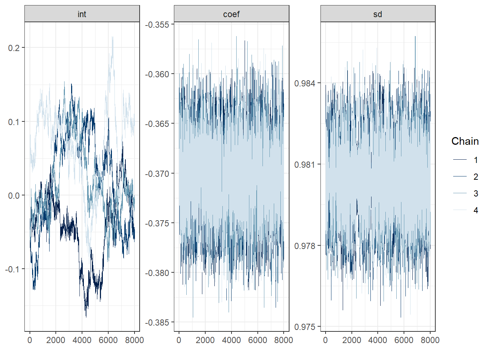
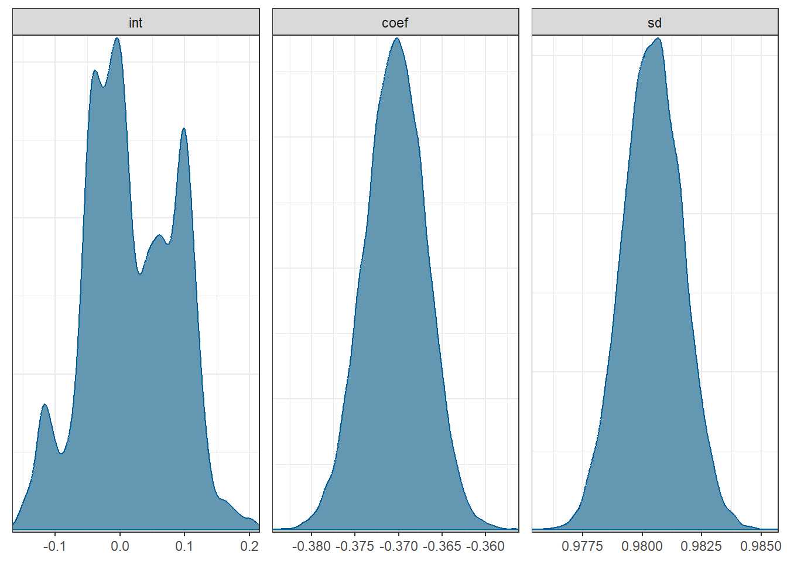
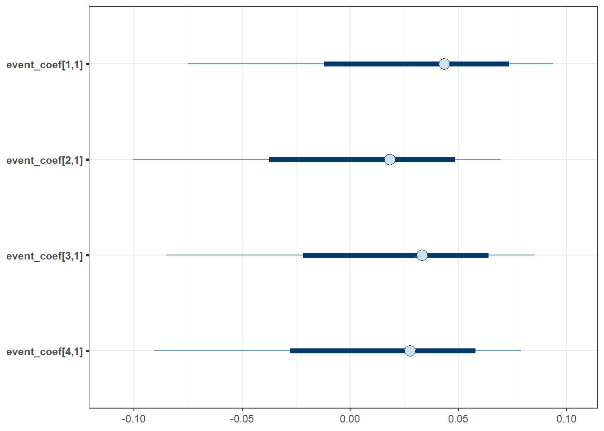
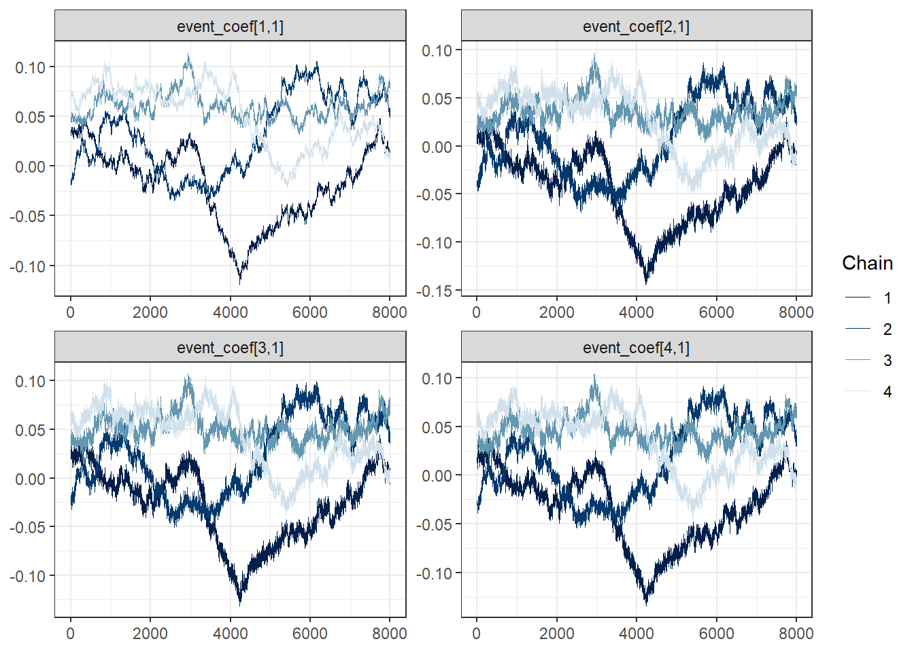
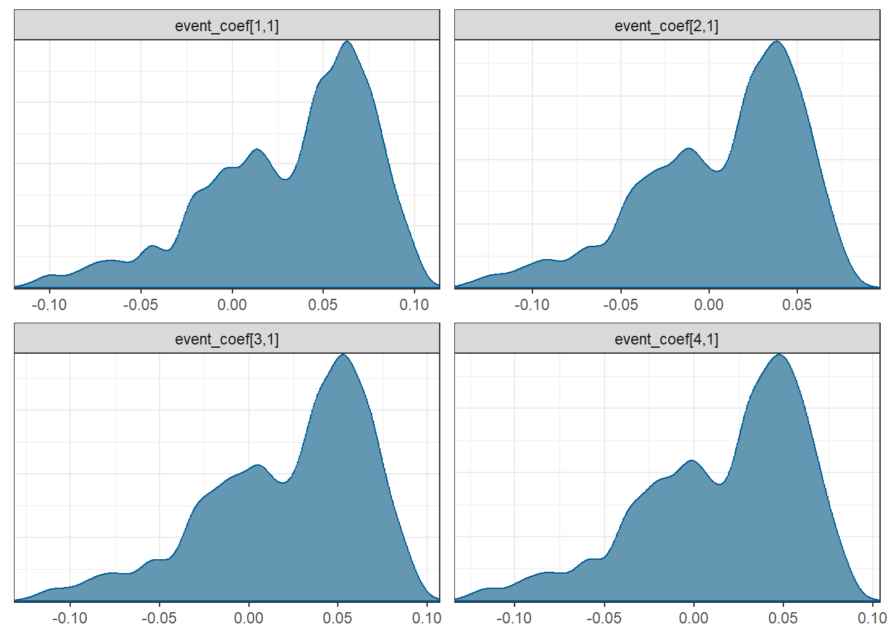
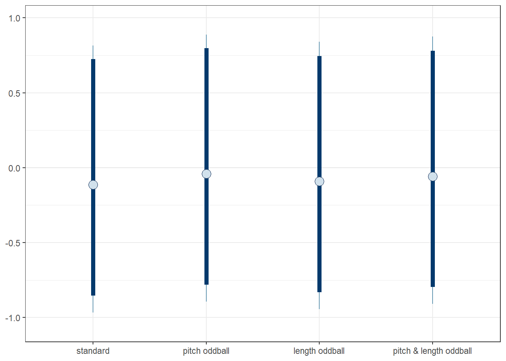
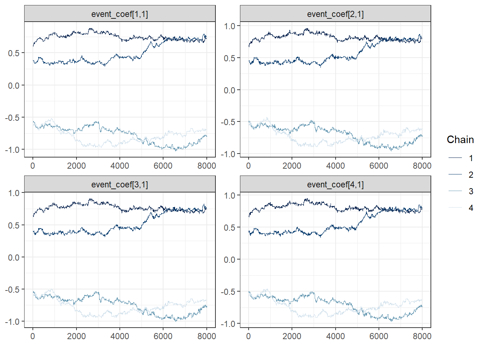
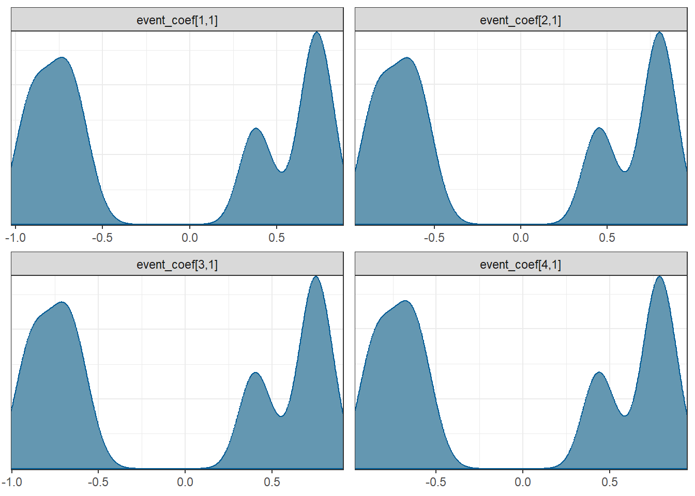
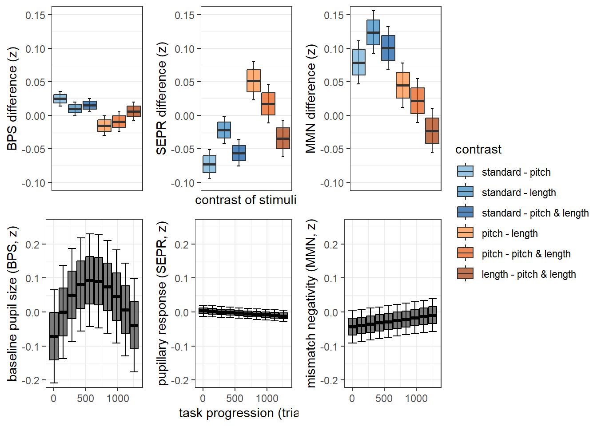
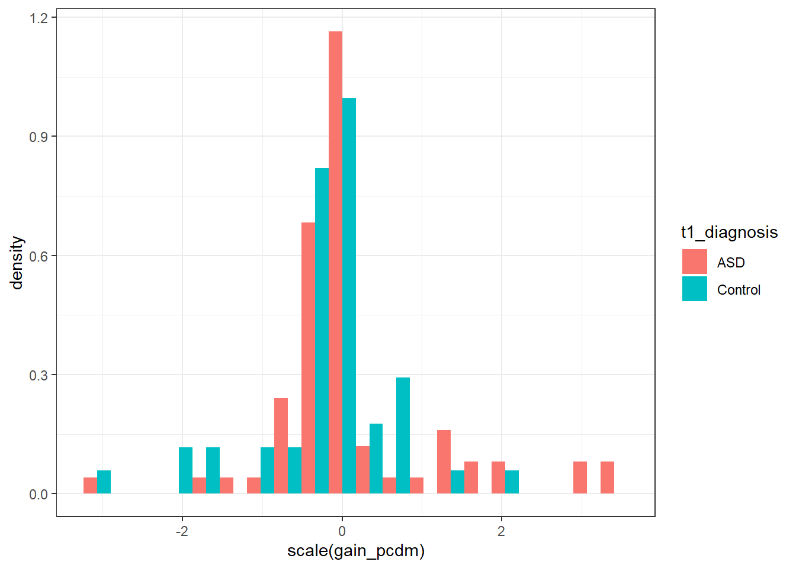

data_analysis_oddball_leap_280423
Nico Bast
2023-10-20
Last updated: 2023-10-20
Checks: 5 2
Knit directory: project_oddball_LEAP/
This reproducible R Markdown analysis was created with workflowr (version 1.7.0). The Checks tab describes the reproducibility checks that were applied when the results were created. The Past versions tab lists the development history.
The R Markdown file has unstaged changes. To know which version of
the R Markdown file created these results, you’ll want to first commit
it to the Git repo. If you’re still working on the analysis, you can
ignore this warning. When you’re finished, you can run
wflow_publish to commit the R Markdown file and build the
HTML.
Great job! The global environment was empty. Objects defined in the global environment can affect the analysis in your R Markdown file in unknown ways. For reproduciblity it’s best to always run the code in an empty environment.
The command set.seed(20230119) was run prior to running
the code in the R Markdown file. Setting a seed ensures that any results
that rely on randomness, e.g. subsampling or permutations, are
reproducible.
Great job! Recording the operating system, R version, and package versions is critical for reproducibility.
Nice! There were no cached chunks for this analysis, so you can be confident that you successfully produced the results during this run.
Using absolute paths to the files within your workflowr project makes it difficult for you and others to run your code on a different machine. Change the absolute path(s) below to the suggested relative path(s) to make your code more reproducible.
| absolute | relative |
|---|---|
| C:/Users/nico/PowerFolders/project_oddball_LEAP | . |
Great! You are using Git for version control. Tracking code development and connecting the code version to the results is critical for reproducibility.
The results in this page were generated with repository version cce2734. See the Past versions tab to see a history of the changes made to the R Markdown and HTML files.
Note that you need to be careful to ensure that all relevant files for
the analysis have been committed to Git prior to generating the results
(you can use wflow_publish or
wflow_git_commit). workflowr only checks the R Markdown
file, but you know if there are other scripts or data files that it
depends on. Below is the status of the Git repository when the results
were generated:
Ignored files:
Ignored: .PowerFolder/
Ignored: .Rhistory
Ignored: .Rproj.user/
Ignored: analysis/figure/
Ignored: manuscript/
Ignored: output/figures/
Ignored: output/supplements/
Unstaged changes:
Modified: analysis/data_analysis_oddball_leap.Rmd
Note that any generated files, e.g. HTML, png, CSS, etc., are not included in this status report because it is ok for generated content to have uncommitted changes.
These are the previous versions of the repository in which changes were
made to the R Markdown
(analysis/data_analysis_oddball_leap.Rmd) and HTML
(docs/data_analysis_oddball_leap.html) files. If you’ve
configured a remote Git repository (see ?wflow_git_remote),
click on the hyperlinks in the table below to view the files as they
were in that past version.
| File | Version | Author | Date | Message |
|---|---|---|---|---|
| Rmd | cce2734 | nicobast | 2023-10-20 | internal revision - full markdown knit |
| Rmd | d2ac698 | nicobast | 2023-07-20 | state of first complete draft |
| Rmd | ff4532e | nicobast | 2023-07-19 | single supplements doc |
| Rmd | d9f4fe9 | nicobast | 2023-07-07 | finalize initial draft analysis |
| Rmd | 8518068 | nicobast | 2023-07-06 | scaling of demographics with DVs between groups |
| Rmd | 3f45837 | nicobast | 2023-07-06 | extended supplements, revised figures |
| Rmd | 2fa7ce7 | nicobast | 2023-06-22 | added supplements to markdown |
| Rmd | 00d9e34 | nicobast | 2023-06-21 | revised analysis markdown |
| Rmd | f71f965 | nicobast | 2023-06-16 | fixed ID and condition + visualization of mm |
| Rmd | e73fca7 | nicobast | 2023-06-15 | read EEG and retrieve trial info |
| Rmd | 1d65165 | nicobast | 2023-06-12 | filled readme |
| Rmd | c8c8e30 | nicobast | 2023-06-12 | first draft of analysis markdown |
setup
load data
Eye tracking and EEG data in separate file that are already preprocessed, see
## pupil data
load(file=paste0(project_path,'/data/mmn_leap_pd_final_dfs_21022023'))
## EEG data - reduced to FZ channel - see read_eeg_data.R
#load(paste0(project_path,"/data/leap_oddball_eeg_list.rdata"))
list_eeg_redux<-readRDS(paste0(project_path,"/data/leap_oddball_eeg_list_redux.rds"))Also load and merge the data generated by the PCDM computational model, see
#read data estimated in MAtlab
mat_output<-readMat(paste0(project_path,"/data/pcdm_estimates_1run_290323.mat"))
#extract parameters
pcdm_parameters<-mat_output[[2]]
names(pcdm_parameters)<-c('interpolateBlinks','downsampleRate','fitTimeseries','change_cutoff_by_samplingRate','low_bandpass_filter_range','blinkint_vel_thres_on','blinkint_window_from_onset','blinkint_min_dur','rel_vel_thres','min_sac_dur')
#create empty list
list_pcdm_estimates<-list()
### extract required info from matlab object in for loop
for (i in seq(length(mat_output[[1]]))){
pcdm_estimate<-mat_output[[1]][i][[1]][[1]] #extract relevant data of single participant
names(pcdm_estimate)<-dimnames(pcdm_estimate)[[1]] #assign names of dimensions
pcdm_estimate<-lapply(pcdm_estimate,unlist) # remove internal list structure
list_pcdm_estimates[[i]]<-pcdm_estimate
}
#add names
names(list_pcdm_estimates)<-sapply(list_pcdm_estimates,function(x){x['name']})
#create vectors
gain_pcdm<-unlist(sapply(list_pcdm_estimates,function(x){x['gain']}))
Rsq_pcdm<-unlist(sapply(list_pcdm_estimates,function(x){x['Rsq']}))
offset_pcdm<-unlist(sapply(list_pcdm_estimates,function(x){x['offset']}))
id<-substr(names(list_pcdm_estimates),1,nchar(names(list_pcdm_estimates))-4)
id<-id[id!=""] #remove empty entries
#exclude outliers
gain_pcdm[gain_pcdm>0.2 | gain_pcdm<(-0.2)]<-NA
#merge data
df_pcdm<-data.frame(id,gain_pcdm,Rsq_pcdm,offset_pcdm)
df_timepoint<-merge(df_timepoint,df_pcdm,by='id',all.x=T)calculate mismatch negativity (MMN)
###---> calculate MMN ####
fun_estimate_mmn<-function(one_set){
#testing
#one_set<-list_eeg[[100]]
###restrict to timeframe - 50-350ms
one_set<-one_set[one_set$times>50 & one_set$times<350,]
mmn_trial<-with(one_set,by(Fz,trial_counter,function(channel_data){
channel_data_smooth<-rollmean(channel_data,k=20) #rolling mean of 20ms
min(channel_data_smooth)
}))
trial_counter<-names(mmn_trial)
mmn<-as.numeric(mmn_trial)
mmn_per_trial<-data.frame(trial_counter,mmn)
return(mmn_per_trial)
}
list_mmn<-pblapply(list_eeg_redux,fun_estimate_mmn)
##--> create data frame
ID<-substr(names(list_mmn),10,22)
condition<-substr(names(list_mmn),1,8)
list_mmn<-pbmapply(function(x,y,z){
x$condition<-y
x$ID<-z
return(x)
},x=list_mmn,y=condition,z=ID,SIMPLIFY = F)
df_mmn<-data.table::rbindlist(list_mmn)
df_mmn$trial_counter<-as.numeric(df_mmn$trial_counter)
df_mmn$condition<-as.factor(df_mmn$condition)merge eye-tracking and EEG data
##prepare EEG data
df_mmn$ID<-sub('/','',df_mmn$ID)
df_mmn$ID<-sub('_','',df_mmn$ID)
#with(df_timepoint,table(subjects,wave))
#eye-tracking data with MMN data
table(df_timepoint$subjects %in% df_mmn$ID)
FALSE TRUE
62 260 table(unique(df_mmn$ID) %in% df_timepoint$subjects)
FALSE TRUE
275 187 #create merge variables
df_mmn$merge_id<-interaction(df_mmn$ID,df_mmn$trial_counter)
df_trial$merge_id<-interaction(df_trial$subjects,df_trial$EventCounter)
#merge - per-trial level (df_trial)
df_trial<-merge(df_trial,df_mmn,by='merge_id',all.x=T)
table(is.na(df_mmn$mmn))
FALSE
115884 table(is.na(df_trial$rpd_auc))
FALSE
298934 table(is.na(df_trial$mmn)) #missing in MMN --> to be expected
FALSE TRUE
45620 253314 ##--> not all trials analyzed in eye-tracking were selected for EEG
##some trials are not correctly matched - correct for that
with(df_trial,table(condition,EventData)) EventData
condition 201 202 203 204
combined 614 13 26 10924
duration 675 26 10610 15
frequenc 665 10670 61 19
standard 11194 29 33 46df_trial_mmn<-df_trial[(df_trial$EventData=='201' & df_trial$condition=='standard'|
df_trial$EventData=='203' & df_trial$condition=='duration'|
df_trial$EventData=='202' & df_trial$condition=='frequenc'|
df_trial$EventData=='204' & df_trial$condition=='combined'),]
###merge per-participant level (df_timepoint)
df_mmn_timepoint<-aggregate(mmn~id+EventData,data=df_trial_mmn,FUN=mean,na.rm=T)
df_mmn_timepoint<-reshape(df_mmn_timepoint, idvar = "id", timevar = "EventData", direction = "wide")
df_timepoint<-merge(df_timepoint,df_mmn_timepoint,by='id',all.x = T)
rm(df_mmn_timepoint)
###which participants have MMN data
table(is.na(df_timepoint$mmn.201),df_timepoint$t1_diagnosis) ##
ASD Control
FALSE 144 97
TRUE 47 34descriptives table of sample
generates a table on characteristics of the sample between groups
#### sample descriptives - PARTICIPANT specific ####
fun_return_descriptive<-function(variable,group,rounding=2,scaling=1){
mean_values<-by(variable,group,function(x){round(mean(x,na.rm=T),rounding)})
sd_values<-by(variable,group,function(x){round(sd(x,na.rm=T),rounding)})
min_values<-by(variable,group,function(x){round(min(x,na.rm=T),rounding)})
max_values<-by(variable,group,function(x){round(max(x,na.rm=T),rounding)})
mean_values<-mean_values*scaling
sd_values<-sd_values*scaling
min_values<-min_values*scaling
max_values<-max_values*scaling
paste0(mean_values,'/',sd_values,' ','[',min_values,'-',max_values,']')
}
#standard descriptives
n_group<-with(df_dem,by(subjects,t1_diagnosis,function(x){length(unique(x))}))
gender<-with(df_dem,by(t1_sex,t1_diagnosis,function(x){paste0(table(x)[2],'/',table(x)[1])}))
timepoints<-with(df_dem,by(timepoints,t1_diagnosis,function(x){paste0(table(x)[1],'/',table(x)[2],'/',table(x)[3])}))
age<-with(df_dem,fun_return_descriptive(variable=t1_ageyrs,group=t1_diagnosis))
iq<-with(df_dem,fun_return_descriptive(variable=t1_fsiq,group=t1_diagnosis))
piq<-with(df_dem,fun_return_descriptive(variable=t1_piq,group=t1_diagnosis))
viq<-with(df_dem,fun_return_descriptive(variable=t1_viq,group=t1_diagnosis))
#clinical variables
srs<-with(df_dem,fun_return_descriptive(variable=t1_srs_rawscore,group=t1_diagnosis))
rbs_total<-with(df_dem,fun_return_descriptive(variable=t1_rbs_total,group=t1_diagnosis))
sdq_total<-with(df_dem,fun_return_descriptive(variable=t1_sdq_total_difficulties_p,group=t1_diagnosis))
adhd_inatt<-with(df_dem,fun_return_descriptive(variable=adhd_inatt,group=t1_diagnosis))
adhd_hyper<-with(df_dem,fun_return_descriptive(variable=adhd_hyper,group=t1_diagnosis))
anx_beck<-with(df_dem,fun_return_descriptive(variable=anx_beck,group=t1_diagnosis))
dep_beck<-with(df_dem,fun_return_descriptive(variable=dep_beck,group=t1_diagnosis))
##data quality
#precision<-with(df_dem,fun_return_descriptive(variable=Precision,group=t1_diagnosis))
#accuracy<-with(df_dem,fun_return_descriptive(variable=Accuracy,group=t1_diagnosis))
#sampling_rate<-with(df_dem,by(sampling_rate,t1_diagnosis,function(x){paste0(table(x)[2],'/',table(x)[1])}))
missing_data_trial<-with(df_dem,fun_return_descriptive(variable=missing_data_trial,group=t1_diagnosis,rounding=4,scaling = 100))
sampling_rate<-with(df_timepoint,by(sampling_rate,t1_diagnosis,function(x){paste0(table(x)[2],'/',table(x)[1])}))
#et vars
center_dev_id<-with(df_dem,fun_return_descriptive(variable=center_dev,group=t1_diagnosis,rounding=4,scaling=100))
screen_dist_id<-with(df_dem,fun_return_descriptive(variable=screen_dist,group=t1_diagnosis))
pd_baseline_id<-with(df_dem,fun_return_descriptive(variable=pd_baseline,group=t1_diagnosis))
# rpd_response201_id<-with(df_dem,fun_return_descriptive(variable=rpd_response.201,group=t1_diagnosis,rounding=4,scaling=100))
# rpd_response202_id<-with(df_dem,fun_return_descriptive(variable=rpd_response.202,group=t1_diagnosis,rounding=4,scaling=100))
# rpd_response203_id<-with(df_dem,fun_return_descriptive(variable=rpd_response.203,group=t1_diagnosis,rounding=4,scaling=100))
# rpd_response204_id<-with(df_dem,fun_return_descriptive(variable=rpd_response.204,group=t1_diagnosis,rounding=4,scaling=100))
# rpd_auc201_id<-with(df_dem,fun_return_descriptive(variable=rpd_auc.201,group=t1_diagnosis,rounding=4,scaling=100))
# rpd_auc202_id<-with(df_dem,fun_return_descriptive(variable=rpd_auc.202,group=t1_diagnosis,rounding=4,scaling=100))
# rpd_auc203_id<-with(df_dem,fun_return_descriptive(variable=rpd_auc.203,group=t1_diagnosis,rounding=4,scaling=100))
# rpd_auc204_id<-with(df_dem,fun_return_descriptive(variable=rpd_auc.204,group=t1_diagnosis,rounding=4,scaling=100))
rpd_auc_id<-with(df_dem,fun_return_descriptive(variable=rpd_auc,group=t1_diagnosis,rounding=4,scaling=100))
descriptives_table<-rbind(n_group,gender,timepoints,age,iq,piq,viq,
missing_data_trial,sampling_rate,
center_dev_id,screen_dist_id,pd_baseline_id,
srs,rbs_total,sdq_total,adhd_inatt,adhd_hyper,anx_beck,dep_beck
#rpd_response201_id,rpd_response202_id,rpd_response203_id,rpd_response204_id,
#rpd_auc201_id,rpd_auc202_id,rpd_auc203_id,rpd_auc204_id
)
##group differences
groupdiff_p<-c(NA,
round(as.numeric(with(df_dem,chisq.test(t1_sex,t1_diagnosis))['p.value']),3),
round(as.numeric(with(df_dem,chisq.test(timepoints,t1_diagnosis))['p.value']),3),
round(as.numeric(with(df_dem,t.test(t1_ageyrs~t1_diagnosis))['p.value']),3),
round(as.numeric(with(df_dem,t.test(t1_fsiq~t1_diagnosis))['p.value']),3),
round(as.numeric(with(df_dem,t.test(t1_piq~t1_diagnosis))['p.value']),3),
round(as.numeric(with(df_dem,t.test(t1_viq~t1_diagnosis))['p.value']),3),
round(as.numeric(with(df_dem,t.test(missing_data_trial~t1_diagnosis))['p.value']),3),
round(as.numeric(with(df_timepoint,chisq.test(sampling_rate,t1_diagnosis))['p.value']),3),
round(as.numeric(with(df_dem,t.test(center_dev~t1_diagnosis))['p.value']),3),
round(as.numeric(with(df_dem,t.test(screen_dist~t1_diagnosis))['p.value']),3),
round(as.numeric(with(df_dem,t.test(pd_baseline~t1_diagnosis))['p.value']),3),
round(as.numeric(with(df_dem,t.test(t1_srs_rawscore~t1_diagnosis))['p.value']),3),
round(as.numeric(with(df_dem,t.test(t1_rbs_total~t1_diagnosis))['p.value']),3),
round(as.numeric(with(df_dem,t.test(t1_sdq_total_difficulties_p~t1_diagnosis))['p.value']),3),
round(as.numeric(with(df_dem,t.test(adhd_inatt~t1_diagnosis))['p.value']),3),
round(as.numeric(with(df_dem,t.test(adhd_hyper~t1_diagnosis))['p.value']),3),
round(as.numeric(with(df_dem,t.test(anx_beck~t1_diagnosis))['p.value']),3),
round(as.numeric(with(df_dem,t.test(dep_beck~t1_diagnosis))['p.value']),3)
# round(as.numeric(with(df_dem,t.test(rpd_response.201~t1_diagnosis))['p.value']),3),
# round(as.numeric(with(df_dem,t.test(rpd_response.202~t1_diagnosis))['p.value']),3),
# round(as.numeric(with(df_dem,t.test(rpd_response.203~t1_diagnosis))['p.value']),3),
# round(as.numeric(with(df_dem,t.test(rpd_response.204~t1_diagnosis))['p.value']),3),
# round(as.numeric(with(df_dem,t.test(rpd_auc.201~t1_diagnosis))['p.value']),3),
# round(as.numeric(with(df_dem,t.test(rpd_auc.202~t1_diagnosis))['p.value']),3),
# round(as.numeric(with(df_dem,t.test(rpd_auc.203~t1_diagnosis))['p.value']),3),
# round(as.numeric(with(df_dem,t.test(rpd_auc.204~t1_diagnosis))['p.value']),3)
)
groupdiff_p[which(groupdiff_p==0)]<-'<0.001'
groupdiff_p[which(is.na(groupdiff_p))]<-'-'
row_names<-c('n','gender (F/M)','timepoints (1/2/1+2)','age (in years)','IQ','perceptual IQ','verbal IQ',
#'data quality: precision','data quality: accuracy',
#'sampling rate (120Hz/300Hz)',
'missing data per trial (%)','sampling rate (300Hz / 120Hz)',
'gaze center deviation (%)','screen distance (mm)','mean pupil size (mm)',
'SRS (total)','RBS (total)','SDQ (total)','ADHD inattention','ADHD hyperactivity','BAI (anxiety)','BDI (depression)'
# 'pupillary response: amplitude - standard (%)','pupillary response: amplitude - oddball pitch (%)','pupillary response: amplitude - oddball length (%)','pupillary response: amplitude - oddball both (%)',
# 'pupillary response: AUC - standard (%)','pupillary response: AUC - oddball pitch (%)','pupillary response: AUC - oddball length (%)','pupillary response: AUC - oddball both (%)'
)
descriptives_table<-cbind(row_names,descriptives_table,groupdiff_p)
#add group differences
#descriptives_table<-ifelse(descriptives_table=='0','<0.001',descriptives_table)
table_sample<-descriptives_table %>%
kbl(caption = "Sample description",
col.names = c('','autistic individuals (ASD)','non-autistic individuals (NTC)','group difference (p)'),
row.names = F) %>%
kable_classic(full_width = F, html_font = "Cambria")
descriptives_table row_names
n_group "n"
gender "gender (F/M)"
timepoints "timepoints (1/2/1+2)"
age "age (in years)"
iq "IQ"
piq "perceptual IQ"
viq "verbal IQ"
missing_data_trial "missing data per trial (%)"
sampling_rate "sampling rate (300Hz / 120Hz)"
center_dev_id "gaze center deviation (%)"
screen_dist_id "screen distance (mm)"
pd_baseline_id "mean pupil size (mm)"
srs "SRS (total)"
rbs_total "RBS (total)"
sdq_total "SDQ (total)"
adhd_inatt "ADHD inattention"
adhd_hyper "ADHD hyperactivity"
anx_beck "BAI (anxiety)"
dep_beck "BDI (depression)"
ASD Control
n_group "139" "88"
gender "101/38" "57/31"
timepoints "43/51/45" "25/31/32"
age "16.13/5.48 [6.24-27.35]" "17.59/6.03 [6.24-30.98]"
iq "97.55/21.33 [40-148]" "103.91/19.55 [52-142]"
piq "99.18/20.79 [45-137]" "103.66/19.28 [51-137]"
viq "95.91/21.06 [45-160]" "102.63/19.33 [51-143]"
missing_data_trial "1.82/1.25 [0.21-6.79]" "1.84/1.29 [0.27-8.42]"
sampling_rate "132/59" "81/50"
center_dev_id "13.19/5.76 [3.45-28.95]" "12.12/5.86 [3.28-28.96]"
screen_dist_id "610.2/49.64 [507.33-727.12]" "610.86/48.05 [513.2-769.58]"
pd_baseline_id "3.47/0.47 [2.35-4.56]" "3.36/0.54 [2.32-5.88]"
srs "100.66/29.09 [20-157]" "29.15/29.12 [1-113]"
rbs_total "20.69/15.33 [0-73]" "2.7/5.9 [0-34]"
sdq_total "17.75/6.37 [3-34]" "8.66/7.23 [0-29]"
adhd_inatt "5.18/3.16 [0-9]" "1.66/2.58 [0-9]"
adhd_hyper "3.15/2.85 [0-9]" "0.91/1.82 [0-7]"
anx_beck "14.94/10.67 [0-51]" "8.69/7.66 [0-29]"
dep_beck "13.52/11.11 [0-55]" "8.26/9 [0-39]"
groupdiff_p
n_group "-"
gender "0.267"
timepoints "0.819"
age "0.067"
iq "0.023"
piq "0.1"
viq "0.016"
missing_data_trial "0.908"
sampling_rate "0.216"
center_dev_id "0.176"
screen_dist_id "0.92"
pd_baseline_id "0.1"
srs "<0.001"
rbs_total "<0.001"
sdq_total "<0.001"
adhd_inatt "<0.001"
adhd_hyper "<0.001"
anx_beck "<0.001"
dep_beck "<0.001" table_sample| autistic individuals (ASD) | non-autistic individuals (NTC) | group difference (p) | |
|---|---|---|---|
| n | 139 | 88 |
|
| gender (F/M) | 101/38 | 57/31 | 0.267 |
| timepoints (1/2/1+2) | 43/51/45 | 25/31/32 | 0.819 |
| age (in years) | 16.13/5.48 [6.24-27.35] | 17.59/6.03 [6.24-30.98] | 0.067 |
| IQ | 97.55/21.33 [40-148] | 103.91/19.55 [52-142] | 0.023 |
| perceptual IQ | 99.18/20.79 [45-137] | 103.66/19.28 [51-137] | 0.1 |
| verbal IQ | 95.91/21.06 [45-160] | 102.63/19.33 [51-143] | 0.016 |
| missing data per trial (%) | 1.82/1.25 [0.21-6.79] | 1.84/1.29 [0.27-8.42] | 0.908 |
| sampling rate (300Hz / 120Hz) | 132/59 | 81/50 | 0.216 |
| gaze center deviation (%) | 13.19/5.76 [3.45-28.95] | 12.12/5.86 [3.28-28.96] | 0.176 |
| screen distance (mm) | 610.2/49.64 [507.33-727.12] | 610.86/48.05 [513.2-769.58] | 0.92 |
| mean pupil size (mm) | 3.47/0.47 [2.35-4.56] | 3.36/0.54 [2.32-5.88] | 0.1 |
| SRS (total) | 100.66/29.09 [20-157] | 29.15/29.12 [1-113] | <0.001 |
| RBS (total) | 20.69/15.33 [0-73] | 2.7/5.9 [0-34] | <0.001 |
| SDQ (total) | 17.75/6.37 [3-34] | 8.66/7.23 [0-29] | <0.001 |
| ADHD inattention | 5.18/3.16 [0-9] | 1.66/2.58 [0-9] | <0.001 |
| ADHD hyperactivity | 3.15/2.85 [0-9] | 0.91/1.82 [0-7] | <0.001 |
| BAI (anxiety) | 14.94/10.67 [0-51] | 8.69/7.66 [0-29] | <0.001 |
| BDI (depression) | 13.52/11.11 [0-55] | 8.26/9 [0-39] | <0.001 |
save_kable(table_sample, file=paste0(project_path,'/output/table_sampledescription.html'))group differences of dependent variables (per participant)
#BPS
summary(lm<-lm(scale(pd)~t1_diagnosis,df_timepoint))
Call:
lm(formula = scale(pd) ~ t1_diagnosis, data = df_timepoint)
Residuals:
Min 1Q Median 3Q Max
-2.2080 -0.6811 -0.1461 0.6637 4.8262
Coefficients:
Estimate Std. Error t value Pr(>|t|)
(Intercept) 0.10464 0.07189 1.456 0.1465
t1_diagnosisControl -0.25722 0.11271 -2.282 0.0231 *
---
Signif. codes: 0 '***' 0.001 '**' 0.01 '*' 0.05 '.' 0.1 ' ' 1
Residual standard error: 0.9935 on 320 degrees of freedom
Multiple R-squared: 0.01602, Adjusted R-squared: 0.01294
F-statistic: 5.208 on 1 and 320 DF, p-value: 0.02313cohens_d(x=scale(pd)~t1_diagnosis,data=df_timepoint)Cohen's d | 95% CI
------------------------
0.26 | [0.04, 0.48]
- Estimated using pooled SD.#NG
summary(lm(scale(gain_pcdm)~t1_diagnosis,df_timepoint[df_timepoint$Rsq_pcdm>0.2,]))
Call:
lm(formula = scale(gain_pcdm) ~ t1_diagnosis, data = df_timepoint[df_timepoint$Rsq_pcdm >
0.2, ])
Residuals:
Min 1Q Median 3Q Max
-3.1775 -0.3402 -0.1553 0.1973 3.1694
Coefficients:
Estimate Std. Error t value Pr(>|t|)
(Intercept) 0.1628 0.1152 1.413 0.1601
t1_diagnosisControl -0.4005 0.1807 -2.217 0.0285 *
---
Signif. codes: 0 '***' 0.001 '**' 0.01 '*' 0.05 '.' 0.1 ' ' 1
Residual standard error: 0.9843 on 121 degrees of freedom
(42 observations deleted due to missingness)
Multiple R-squared: 0.03902, Adjusted R-squared: 0.03108
F-statistic: 4.913 on 1 and 121 DF, p-value: 0.02852cohens_d(x=scale(pd)~t1_diagnosis,data=df_timepoint[df_timepoint$Rsq_pcdm>0.2,])Cohen's d | 95% CI
------------------------
0.41 | [0.09, 0.73]
- Estimated using pooled SD.covariate effects on dependent variables (per participant)
#BPS
c(summary(lm(scale(pd)~scale(ageyrs),df_timepoint))[['coefficients']][2,1],
confint(lm(scale(pd)~scale(ageyrs),df_timepoint))[2,]) 2.5 % 97.5 %
-0.3848224 -0.4863341 -0.2833108 #MMN - standards
c(summary(lm(scale(mmn.201)~scale(ageyrs),df_timepoint))[['coefficients']][2,1],
confint(lm(scale(mmn.201)~scale(ageyrs),df_timepoint))[2,]) 2.5 % 97.5 %
0.5966341 0.4842925 0.7089757 #MMN - pitch oddballs
c(summary(lm(scale(mmn.202)~scale(ageyrs),df_timepoint))[['coefficients']][2,1],
confint(lm(scale(mmn.202)~scale(ageyrs),df_timepoint))[2,]) 2.5 % 97.5 %
0.5587295 0.4423915 0.6750675 #MMN - length oddballs
c(summary(lm(scale(mmn.203)~scale(ageyrs),df_timepoint))[['coefficients']][2,1],
confint(lm(scale(mmn.203)~scale(ageyrs),df_timepoint))[2,]) 2.5 % 97.5 %
0.6063284 0.4939439 0.7187129 #MMN - pitch & length oddballs
c(summary(lm(scale(mmn.204)~scale(ageyrs),df_timepoint))[['coefficients']][2,1],
confint(lm(scale(mmn.204)~scale(ageyrs),df_timepoint))[2,]) 2.5 % 97.5 %
0.5168204 0.3973653 0.6362755 associations of dependent variables (per participant)
correlation coefficients on per-participant level of
Event Data coding
rm(gain_pcdm)
attach(df_timepoint)
cor_table<-data.frame(t(cbind(
#SEPR -PD
cbind(cor.test(rpd_auc.201,pd)[c('data.name','estimate','p.value')]),
cbind(cor.test(rpd_auc.202,pd)[c('data.name','estimate','p.value')]),
cbind(cor.test(rpd_auc.203,pd)[c('data.name','estimate','p.value')]),
cbind(cor.test(rpd_auc.204,pd)[c('data.name','estimate','p.value')]),
#SEPR - MMN --> uncorrelated
cbind(cor.test(rpd_auc.201,mmn.201)[c('data.name','estimate','p.value')]),
cbind(cor.test(rpd_auc.202,mmn.202)[c('data.name','estimate','p.value')]),
cbind(cor.test(rpd_auc.203,mmn.203)[c('data.name','estimate','p.value')]),
cbind(cor.test(rpd_auc.204,mmn.204)[c('data.name','estimate','p.value')]),
#BPS - MMN --> substantial negative correlations
cbind(cor.test(pd,mmn.201)[c('data.name','estimate','p.value')]),
cbind(cor.test(pd,mmn.202)[c('data.name','estimate','p.value')]),
cbind(cor.test(pd,mmn.203)[c('data.name','estimate','p.value')]),
cbind(cor.test(pd,mmn.204)[c('data.name','estimate','p.value')]),
# NG - BPS
cbind(cor.test(gain_pcdm,pd)[c('data.name','estimate','p.value')]),
cbind(cor.test(gain_pcdm,pd)[c('data.name','estimate','p.value')]),
cbind(cor.test(gain_pcdm,pd)[c('data.name','estimate','p.value')]),
cbind(cor.test(gain_pcdm,pd)[c('data.name','estimate','p.value')]),
#NG - SEPR
cbind(cor.test(gain_pcdm,rpd_auc.201)[c('data.name','estimate','p.value')]),
cbind(cor.test(gain_pcdm,rpd_auc.202)[c('data.name','estimate','p.value')]),
cbind(cor.test(gain_pcdm,rpd_auc.203)[c('data.name','estimate','p.value')]),
cbind(cor.test(gain_pcdm,rpd_auc.204)[c('data.name','estimate','p.value')]),
#NG - MMN
cbind(cor.test(gain_pcdm,mmn.201)[c('data.name','estimate','p.value')]),
cbind(cor.test(gain_pcdm,mmn.202)[c('data.name','estimate','p.value')]),
cbind(cor.test(gain_pcdm,mmn.203)[c('data.name','estimate','p.value')]),
cbind(cor.test(gain_pcdm,mmn.204)[c('data.name','estimate','p.value')])
)))
#format table
cor_table$data.name<-unlist(cor_table$data.name)
cor_table$estimate<-unlist(cor_table$estimate)
cor_table$p.value<-unlist(cor_table$p.value)
cor_table$estimate<-round(cor_table$estimate,4)
cor_table$p.value<-round(cor_table$p.value,4)
cor_table$data.name<-gsub('rpd_auc','SEPR',cor_table$data.name)
cor_table$data.name<-gsub('pd','BPS',cor_table$data.name)
cor_table$data.name<-gsub('gain_pcdm','NG',cor_table$data.name)
cor_table$data.name<-gsub('mmn','MMN',cor_table$data.name)
cor_table$data.name<-gsub('.201',' (standard)',cor_table$data.name)
cor_table$data.name<-gsub('.202',' (pitch oddball)',cor_table$data.name)
cor_table$data.name<-gsub('.203',' (length oddball)',cor_table$data.name)
cor_table$data.name<-gsub('.204',' (pitch+length oddball)',cor_table$data.name)
#Bonferroni correction
number_of_comparisons<-nrow(cor_table)
cor_table$p_adjust<-cor_table$p.value*number_of_comparisons
cor_table$p_adjust<-ifelse(cor_table$p_adjust>1,1,cor_table$p_adjust)
#produce table
cor_table_format<-cor_table %>%
kbl(caption = "correlations of baseline pupil size (BPS),
stimulus-evoked pupillary response (SEPR),
mismatch negativity (MMN), and neural gain (NG) for different stimuli.",
col.names = c('correlation','coefficient (r)','p','p adjusted')) %>%
kable_classic(full_width = F, html_font = "Cambria")
cor_table_format| correlation | coefficient (r) | p | p adjusted |
|---|---|---|---|
| SEPR (standard) and BPS | 0.0647 | 0.2466 | 1.0000 |
| SEPR (pitch oddball) and BPS | -0.0361 | 0.5230 | 1.0000 |
| SEPR (length oddball) and BPS | 0.1512 | 0.0069 | 0.1656 |
| SEPR (pitch+length oddball) and BPS | -0.1502 | 0.0074 | 0.1776 |
| SEPR (standard) and MMN (standard) | -0.0445 | 0.4915 | 1.0000 |
| SEPR (pitch oddball) and MMN (pitch oddball) | 0.0731 | 0.2595 | 1.0000 |
| SEPR (length oddball) and MMN (length oddball) | 0.0387 | 0.5510 | 1.0000 |
| SEPR (pitch+length oddball) and MMN (pitch+length oddball) | -0.0063 | 0.9227 | 1.0000 |
| BPS and MMN (standard) | -0.1947 | 0.0024 | 0.0576 |
| BPS and MMN (pitch oddball) | -0.2292 | 0.0003 | 0.0072 |
| BPS and MMN (length oddball) | -0.2151 | 0.0008 | 0.0192 |
| BPS and MMN (pitch+length oddball) | -0.2008 | 0.0018 | 0.0432 |
| NG and BPS | -0.0159 | 0.7964 | 1.0000 |
| NG and BPS | -0.0159 | 0.7964 | 1.0000 |
| NG and BPS | -0.0159 | 0.7964 | 1.0000 |
| NG and BPS | -0.0159 | 0.7964 | 1.0000 |
| NG and SEPR (standard) | -0.0053 | 0.9318 | 1.0000 |
| NG and SEPR (pitch oddball) | 0.0055 | 0.9292 | 1.0000 |
| NG and SEPR (length oddball) | -0.0427 | 0.4897 | 1.0000 |
| NG and SEPR (pitch+length oddball) | -0.0906 | 0.1429 | 1.0000 |
| NG and MMN (standard) | -0.0198 | 0.7835 | 1.0000 |
| NG and MMN (pitch oddball) | -0.0597 | 0.4055 | 1.0000 |
| NG and MMN (length oddball) | -0.1025 | 0.1530 | 1.0000 |
| NG and MMN (pitch+length oddball) | -0.0393 | 0.5840 | 1.0000 |
save_kable(cor_table_format,file=paste0(project_path,'/output/supplements/associations_DV_perparticipant.html'))association of dependent variables (per trial)
#interrelation of BPS and SEPR
lmm<-lmer(scale(rpd_auc)~scale(pd_baseline)+
(1|subjects)+(1|wave),data=df_trial)
anova(lmm)Type III Analysis of Variance Table with Satterthwaite's method
Sum Sq Mean Sq NumDF DenDF F value Pr(>F)
scale(pd_baseline) 10572 10572 1 202742 10999 < 2.2e-16 ***
---
Signif. codes: 0 '***' 0.001 '**' 0.01 '*' 0.05 '.' 0.1 ' ' 1cbind(round(fixef(lmm)['scale(pd_baseline)'],2),
round(confint(lmm,parm = 'scale(pd_baseline)'),2)) 2.5 % 97.5 %
scale(pd_baseline) -0.37 -0.37 -0.36#model fit
r2_nakagawa(lmm) # R2 for Mixed Models
Conditional R2: 0.206
Marginal R2: 0.110#BIC Bayes Factor
lmm_ML<-lmer(scale(rpd_auc)~scale(pd_baseline)+
(1|subjects)+(1|wave),data=df_trial,REML=F)
null_lmm_ML <- lmer(scale(rpd_auc)~1+
(1|subjects)+(1|wave),data=df_trial,REML=F)
BF_BIC <- exp((BIC(null_lmm_ML) - BIC(lmm_ML))/2)
BF_BIC [1] Inf # data - create greta arrays
x <- as_data(scale(df_trial$pd_baseline)) y <- as_data(scale(df_trial$rpd_auc))
subject_id <- as.integer(factor(df_trial$subjects)) #random intercept (in LMM)
# variables and priors
int <- normal(0, 1)
coef <- normal(0, 1)
sd <- student(3, 0, 1, truncation = c(0, Inf))
a_subject <- normal(0, 1, dim = max(subject_id))
# operations
mean <- int + coef * x + a_subject[subject_id]
# likelihood - distribution over data
distribution(y) <- normal(mean, sd)
# defining the model
m <- model(int, coef, sd)
# plotting
#require(DiagrammeR)
plot(m) # sampling
draws <- mcmc(m, n_samples = number_of_iterations, warmup = number_of_warmups) summary(draws)
Iterations = 1:8000
Thinning interval = 1
Number of chains = 4
Sample size per chain = 8000
1. Empirical mean and standard deviation for each variable,
plus standard error of the mean:
Mean SD Naive SE Time-series SE
int 0.01629 0.069193 3.868e-04 1.364e-02
coef -0.37037 0.003527 1.972e-05 4.719e-05
sd 0.98044 0.001253 7.007e-06 8.731e-06
2. Quantiles for each variable:
2.5% 25% 50% 75% 97.5%
int -0.1207 -0.03406 0.007404 0.07451 0.1344
coef -0.3773 -0.37273 -0.370336 -0.36796 -0.3635
sd 0.9780 0.97959 0.980439 0.98130 0.9829 mcmc_trace(draws) #see whether chains converge and are stationary
mcmc_dens(draws) # + stable estimates
#posterior predictive checking
coda::gelman.diag(draws) #Rhat <= 1.01 is cutoff for reliable estimatorPotential scale reduction factors:
Point est. Upper C.I.
int 1.43 2.09
coef 1.00 1.00
sd 1.00 1.00
Multivariate psrf
1.35 coda::effectiveSize(draws) #ESS int coef sd
19.14415 5768.26852 20839.20538 #save model
draws_SEPR_BPS<-draws
save(draws_SEPR_BPS,file=paste0(project_path,'/data/Bayesian_model_SEPR_BPS.Rdata'))###here use ID as random intercept (subject + wave) as MMN is only available for one timepoint
#interrelation of BPS and SEPR
lmm<-lmer(scale(mmn)~scale(pd_baseline)*EventData+
(1|id),data=df_trial)
anova(lmm)Type III Analysis of Variance Table with Satterthwaite's method
Sum Sq Mean Sq NumDF DenDF F value Pr(>F)
scale(pd_baseline) 13.524 13.524 1 16715 15.3996 8.736e-05 ***
EventData 100.599 33.533 3 45439 38.1829 < 2.2e-16 ***
scale(pd_baseline):EventData 4.954 1.651 3 45430 1.8802 0.1305
---
Signif. codes: 0 '***' 0.001 '**' 0.01 '*' 0.05 '.' 0.1 ' ' 1cbind(round(fixef(lmm)['scale(pd_baseline)'],2),
round(confint(lmm,parm = 'scale(pd_baseline)'),2)) 2.5 % 97.5 %
scale(pd_baseline) -0.02 -0.04 0#model fit
r2_nakagawa(lmm) # R2 for Mixed Models
Conditional R2: 0.127
Marginal R2: 0.003#BIC Bayes Factor
lmm_ML<-lmer(scale(mmn)~scale(pd_baseline)+EventData+
(1|id),data=df_trial,REML=F)
null_lmm_ML <- lmer(scale(mmn)~EventData+
(1|id),data=df_trial,REML=F)
BF_BIC <- exp((BIC(null_lmm_ML) - BIC(lmm_ML))/2)
BF_BIC [1] 6.84896###here use ID as random intercept (subject + wave) as MMN is only available for one timepoint
#interrelation of BPS and SEPR
lmm<-lmer(scale(mmn)~scale(rpd_auc)*EventData+
(1|id),data=df_trial)
anova(lmm)Type III Analysis of Variance Table with Satterthwaite's method
Sum Sq Mean Sq NumDF DenDF F value Pr(>F)
scale(rpd_auc) 17.266 17.266 1 45406 19.6637 9.255e-06 ***
EventData 99.913 33.304 3 45438 37.9286 < 2.2e-16 ***
scale(rpd_auc):EventData 0.831 0.277 3 45401 0.3153 0.8143
---
Signif. codes: 0 '***' 0.001 '**' 0.01 '*' 0.05 '.' 0.1 ' ' 1cbind(round(fixef(lmm)['scale(rpd_auc)'],2),
round(confint(lmm,parm = 'scale(rpd_auc)'),2)) 2.5 % 97.5 %
scale(rpd_auc) 0.02 0.01 0.04#model fit
r2_nakagawa(lmm) # R2 for Mixed Models
Conditional R2: 0.129
Marginal R2: 0.003#BIC Bayes Factor
lmm_ML<-lmer(scale(mmn)~scale(rpd_auc)+
(1|id),data=df_trial,REML=F)
null_lmm_ML <- lmer(scale(mmn)~1+
(1|id),data=df_trial,REML=F)
BF_BIC <- exp((BIC(null_lmm_ML) - BIC(lmm_ML))/2)
BF_BIC [1] 56.29533composite figure - pupil size and Fz amplitude change within trials
visualization of pupile size change (BPS,SEPR) and Fz amplitude change (MMN) within trials
MMN - scalp topography (part 1)
#load all EEG channel data - LARGE FILE ON DIFFERENT DRIVE
load(file=localation_of_EEG_allchannel_data)
#for standard coordinates of electrodes
data(eegcoord) #load sample set with standard coordinates
#rownames(eegcoord) #names of channels
###select only participants that are in final sample
subjects_in_list<-substr(names(list_mmn),10,22)
subjects_in_list<-sub('/','',subjects_in_list)
subjects_in_list<-sub('_','',subjects_in_list)
list_elements_in_final_sample<-which(subjects_in_list %in% unique(df_trial$subjects))
list_eeg_selected<-list_eeg[list_elements_in_final_sample]
#participants_to_sample<-round(length(list_eeg)/4*fraction_to_sample)
participants_to_sample<-round(length(list_eeg_selected)/4*fraction_to_sample)
#select 30 random from each condition - same participants
combined_sampled<-sample(1:(length(list_eeg_selected)/4),participants_to_sample)
duration_sampled<-combined_sampled+length(list_eeg_selected)/4
frequency_sampled<-combined_sampled+2*length(list_eeg_selected)/4
standard_sampled<-combined_sampled+3*length(list_eeg_selected)/4
select_samples<-c(combined_sampled,
duration_sampled,
frequency_sampled,
standard_sampled)
#select thirty random participants - from participants that have ET data
list_eeg_selected<-list_eeg_selected[select_samples]
fun_prepare_channeldata_plotting<-function(one_set,sample_coordinates){
##testing
# one_set<-list_eeg_selected[[1]]
# sample_coordinates<-eegcoord
#match names of sample coordnisates and data set
names(one_set)<-toupper(names(one_set)) #capitalize names - naming convention of eegkit
sample_coordinates<-sample_coordinates[rownames(sample_coordinates) %in% names(one_set),]
sample_coordinates$variable<-rownames(sample_coordinates)
#limit site to interested timeframe - 150-250 ms after trial onset
one_set<-one_set[one_set$TIMES >= 150 & one_set$TIMES <= 250,]
###--> less flexibel but reduces file size
#melt to long format
one_set$TIMES<-as.factor(one_set$TIMES) #preserve in melting
one_set<-reshape2::melt(one_set,value.name='amplitude') #convert to long format
#merge with sampel coordinates
one_set<-merge(one_set,sample_coordinates,by='variable') #merge with sample coordniates
names(one_set)[1]<-'electrode' #set name for later plotting function
one_set$TIMES<-as.numeric(levels(one_set$TIMES))[one_set$TIMES]
return(one_set)
}
#takes around 20 minutes
list_eeg_selected<-pblapply(list_eeg_selected,fun_prepare_channeldata_plotting,sample_coordinates=eegcoord)
df_plot<-data.table::rbindlist(list_eeg_selected)
#scalp topography separated for condition
limits_of_plotted_range<-c(-3,3)
gf_4a<-topoplot(df_plot[df_plot$CONDITION=='standard',],
interp_limit='head',limits=limits_of_plotted_range)+labs(title='standard') #scale coordniates to head
gf_4b<-topoplot(df_plot[df_plot$CONDITION=='frequenc',],
interp_limit='head',limits=limits_of_plotted_range)+labs(title='pitch oddball') #scale coordniates to head
gf_4c<-topoplot(df_plot[df_plot$CONDITION=='duration',],
interp_limit='head',limits=limits_of_plotted_range)+labs(title='length oddball') #scale coordniates to head
gf_4d<-topoplot(df_plot[df_plot$CONDITION=='combined',],
interp_limit='head',limits=limits_of_plotted_range)+labs(title='pitch & length oddball') #scale coordniates to head
#extract legend
g_legend<-function(x){
tmp <- ggplot_gtable(ggplot_build(x))
leg <- which(sapply(tmp$grobs, function(x) x$name) == "guide-box")
legend <- tmp$grobs[[leg]]
return(legend)}
mylegend<-g_legend(gf_4a)
#plot in markdown
grid.arrange(
arrangeGrob(
gf_4a + theme(legend.position="none"),
gf_4b + theme(legend.position="none"),
gf_4c + theme(legend.position="none"),
gf_4d + theme(legend.position="none"),nrow=2),
mylegend, ncol=2, widths=c(5,1))
MMN - Fz amplitude change within trials (part 2)
df_eeg<-data.table::rbindlist(list_eeg_redux) ##very fast compared to do.call(rbind)
subsample<-sample(1:nrow(df_eeg),nrow(df_eeg)/sampling_factor) # select 10% of data for faster plotting
### use participants selected for scalp topography - much slower and same results
# df_eeg$ID<-sub('/','',df_eeg$ID)
# df_eeg$ID<-sub('_','',df_eeg$ID)
# selected_participants<-substr(names(list_mmn)[combined_sampled],10,21)
# subsample<-which(df_eeg$ID %in% selected_participants)
custom_condition_colors <- rev(wes_palette('FantasticFox1',5,type='discrete')[2:5]) #reverse custom colors to match color coding in other figures
gf_1<-ggplot(df_eeg[subsample,],aes(x=times/1000,y=Fz,group=condition,color=condition,fill=condition))+
geom_smooth()+
labs(y='electrode Fz - amplitute (uV)',x='trial duration (s)')+
scale_fill_manual(values = custom_condition_colors, labels=c("standard" = "standard", "frequenc" = "pitch oddball", "duration" = "length oddball ", "combined" = "pitch & length oddball"))+
scale_color_manual(values = custom_condition_colors, labels=c("standard" = "standard", "frequenc" = "pitch oddball", "duration" = "length oddball ", "combined" = "pitch & length oddball"))+
xlim(-0.1,0.6) #allign with eye-tracking epoch for plotting
#gf_1pupil size change within trial - progression between groups (part 3+4)
#sample data
sampled_df<-df[sample(1:nrow(df),nrow(df)/sampling_factor),]
#ON FULL DATA - takes 1hour+ to complete
gf_2<-ggplot(sampled_df[sampled_df$time_event<0.6,],aes(x=time_event,y=rpd,group=EventData,color=EventData,fill=EventData))+
geom_smooth(alpha=0.4)+
labs(x='trial duration (s)',y='pupil size (mm)')+
scale_fill_manual(values = custom_condition_colors[c(1,3,2,4)], labels=c("201" = "standard", "202" = "pitch oddball", "203" = "length oddball ", "204" = "pitch & length oddball"))+ #[c(1,3,2,4)] = colors like EEG fig
scale_color_manual(values = custom_condition_colors[c(1,3,2,4)], labels=c("201" = "standard", "202" = "pitch oddball", "203" = "length oddball ", "204" = "pitch & length oddball"))+
xlim(-0.1,0.6) #allign with eeg epoch
#add demographics data
df_dem_merge<-df_dem[,c('subjects','t1_group','t1_diagnosis','t1_sex','t1_ageyrs','t2_ageyrs','t1_fsiq','t1_piq','t1_viq')]
df_dem_merge$subjects<-as.character(df_dem_merge$subjects)
sampled_df$subjects<-substr(sampled_df$id,1,12)
sampled_df<-merge(sampled_df,df_dem_merge,by='subjects') ###--> takes a while
#define quartiles
sampled_df$trial_position<-ifelse(sampled_df$EventCounter<350,'first quarter',
ifelse(sampled_df$EventCounter>1050,'last quarter',
ifelse(sampled_df$EventCounter>=350 & sampled_df$EventCounter<=700,'second quarter',
ifelse(sampled_df$EventCounter>700 & sampled_df$EventCounter<=1050,'third quarter',NA
))))
sampled_df$trial_position<-factor(sampled_df$trial_position,
levels=c('first quarter','second quarter','third quarter','last quarter'))
#plot split by group and quartiles
gf_3<-ggplot(sampled_df[sampled_df$time_event<0.60 & !is.na(sampled_df$trial_position),],
aes(x=time_event,y=rpd,group=interaction(t1_diagnosis,EventData),
color=EventData,fill=EventData,linetype=t1_diagnosis))+
facet_grid(EventData ~ trial_position)+
geom_smooth()+
#geom_smooth(formula = y ~ x + poly(x,4))
scale_linetype_discrete(labels=c("ASD" = "autistic", "Control" = "non-autistic"))+
scale_fill_manual(values = custom_condition_colors,
labels=c("201" = "standard",
"202" = "pitch oddball",
"203" = "length oddball ",
"204" = "pitch & length oddball"))+
scale_color_manual(values = custom_condition_colors,
labels=c("201" = "standard",
"202" = "pitch oddball",
"203" = "length oddball ",
"204" = "pitch & length oddball"))+
labs(x='trial duration (s)',y='pupil size (mm)',color='stimulus',fill='stimulus',linetype='group')+
theme(strip.text.y = element_blank()) #remove labels on facet axis
#extract legend
g_legend<-function(x){
tmp <- ggplot_gtable(ggplot_build(x))
leg <- which(sapply(tmp$grobs, function(x) x$name) == "guide-box")
legend <- tmp$grobs[[leg]]
return(legend)}
mylegend_pupil<-g_legend(gf_3)
#print in markdown
#grid.arrange(gf_2+theme(legend.position = 'none'),gf_3,widths=c(1,1.3)) save composite figure
#save to file
tiff(file=paste0(project_path,"/output/figures/figure_pupil_mmn_withintrial2.tiff"), # create a file in tiff format in current working directory
width=12, height=8, units="in", res=300, compression='lzw') #define size and resolution of the resulting figure
grid.arrange(
arrangeGrob(gf_2+theme(legend.position = 'none'),
gf_3+theme(legend.position = 'none'),
mylegend_pupil,ncol=3,widths=c(5,5,2)), #pupil size change Grob
arrangeGrob(gf_1+theme(legend.position = 'none'), #MMN Grob
arrangeGrob(
gf_4a + theme(legend.position="none"),
gf_4b + theme(legend.position="none"),
gf_4c + theme(legend.position="none"),
gf_4d + theme(legend.position="none"),nrow=2),
mylegend, ncol=3, widths=c(5,5,2)),
nrow=2)
dev.off() #close operation and save filepng
2 task effects
investigates influence of stimulus and task progression on pupillary measures (BPS, SEPR) and EEG measure (MMN) in separate linear mixed models and supported by Bayesian posterior sampling
task condition / stimulus effect
##BPS
## include trial characteristics - TRIAL CONDITION
lmm<-lmer(scale(pd_baseline)~EventData+
(1|subjects)+(1|wave),data=df_trial)
anova(lmm)Type III Analysis of Variance Table with Satterthwaite's method
Sum Sq Mean Sq NumDF DenDF F value Pr(>F)
EventData 12.573 4.1911 3 298709 16.11 1.816e-10 ***
---
Signif. codes: 0 '***' 0.001 '**' 0.01 '*' 0.05 '.' 0.1 ' ' 1emmeans(lmm,~EventData) EventData emmean SE df asymp.LCL asymp.UCL
201 0.03432 0.0698 Inf -0.102 0.171
202 0.00965 0.0699 Inf -0.127 0.147
203 0.02492 0.0699 Inf -0.112 0.162
204 0.01919 0.0699 Inf -0.118 0.156
Degrees-of-freedom method: asymptotic
Results are given on the scale(3.41, 0.55) (not the response) scale.
Confidence level used: 0.95 confint(contrast(emmeans(lmm,~EventData),'pairwise')) contrast estimate SE df asymp.LCL asymp.UCL
EventData201 - EventData202 0.02467 0.00432 Inf 0.013570 0.035777
EventData201 - EventData203 0.00940 0.00400 Inf -0.000874 0.019669
EventData201 - EventData204 0.01513 0.00389 Inf 0.005144 0.025121
EventData202 - EventData203 -0.01528 0.00571 Inf -0.029938 -0.000615
EventData202 - EventData204 -0.00954 0.00563 Inf -0.024006 0.004923
EventData203 - EventData204 0.00573 0.00539 Inf -0.008102 0.019571
Note: contrasts are still on the scale(3.41, 0.55) scale
Degrees-of-freedom method: asymptotic
Confidence level used: 0.95
Conf-level adjustment: tukey method for comparing a family of 4 estimates ###--> 201 > 202 + 204; 203 > 202
###restricted to trial that are preceded by standards
lmm_r<-lmer(scale(pd_baseline)~EventData+
(1|subjects)+(1|wave),data=df_trial[df_trial$sequence_position!=1,])
anova(lmm_r)Type III Analysis of Variance Table with Satterthwaite's method
Sum Sq Mean Sq NumDF DenDF F value Pr(>F)
EventData 7.9209 2.6403 3 248309 10.148 1.114e-06 ***
---
Signif. codes: 0 '***' 0.001 '**' 0.01 '*' 0.05 '.' 0.1 ' ' 1 emmeans(lmm_r,~EventData) EventData emmean SE df asymp.LCL asymp.UCL
201 0.0343 0.0695 Inf -0.102 0.171
202 0.0151 0.0696 Inf -0.121 0.152
203 0.0316 0.0696 Inf -0.105 0.168
204 0.0196 0.0696 Inf -0.117 0.156
Degrees-of-freedom method: asymptotic
Results are given on the scale(3.41, 0.55) (not the response) scale.
Confidence level used: 0.95 confint(contrast(emmeans(lmm_r,~EventData),'pairwise')) contrast estimate SE df asymp.LCL asymp.UCL
EventData201 - EventData202 0.01920 0.00445 Inf 0.00778 0.03062
EventData201 - EventData203 0.00274 0.00418 Inf -0.00800 0.01349
EventData201 - EventData204 0.01469 0.00392 Inf 0.00461 0.02476
EventData202 - EventData203 -0.01646 0.00589 Inf -0.03158 -0.00133
EventData202 - EventData204 -0.00451 0.00570 Inf -0.01916 0.01014
EventData203 - EventData204 0.01194 0.00550 Inf -0.00219 0.02608
Note: contrasts are still on the scale(3.41, 0.55) scale
Degrees-of-freedom method: asymptotic
Confidence level used: 0.95
Conf-level adjustment: tukey method for comparing a family of 4 estimates r2_nakagawa(lmm) # R2 for Mixed Models
Conditional R2: 0.763
Marginal R2: 0.000#BIC Bayes Factor
lmm_ML<-lmer(scale(pd_baseline)~EventData+
(1|subjects)+(1|wave),data=df_trial,REML=F)
# null_lmm_ML <- lmer(scale(pd_baseline)~1+
# (1|subjects)+(1|wave),data=df_trial,REML=F)
BF_BIC <- exp((BIC(null_lmm_ML) - BIC(lmm_ML))/2)
BF_BIC [1] 0 # data - create greta arrays
y <- as_data(scale(df_trial$pd_baseline))
events <- as_data(model.matrix(~ EventData - 1, df_trial)) #alternative to dummy coding?
subject_id <- as.integer(factor(df_trial$subjects)) #random intercept (in LMM)
# variables and priors
int <- normal(0, 1)
event_coef<- normal(0, 1, dim=ncol(events))
sd <- student(3, 0, 1, truncation = c(0, Inf))
a_subject <- normal(0, 1, dim = max(subject_id))
# operations
mean <- events %*% event_coef + a_subject[subject_id]
# likelihood - distribution over data
distribution(y) <- normal(mean, sd)
# defining the model
m <- model(event_coef)
# sampling
draws <- mcmc(m, n_samples = number_of_iterations, warmup = number_of_warmups) summary(draws)
Iterations = 1:8000
Thinning interval = 1
Number of chains = 4
Sample size per chain = 8000
1. Empirical mean and standard deviation for each variable,
plus standard error of the mean:
Mean SD Naive SE Time-series SE
event_coef[1,1] 0.03139 0.04436 0.0002480 0.01087
event_coef[2,1] 0.00674 0.04456 0.0002491 0.01056
event_coef[3,1] 0.02194 0.04456 0.0002491 0.01031
event_coef[4,1] 0.01613 0.04449 0.0002487 0.01080
2. Quantiles for each variable:
2.5% 25% 50% 75% 97.5%
event_coef[1,1] -0.07498 0.001769 0.04319 0.06542 0.09367
event_coef[2,1] -0.10026 -0.022901 0.01825 0.04114 0.06935
event_coef[3,1] -0.08503 -0.007652 0.03320 0.05624 0.08500
event_coef[4,1] -0.09057 -0.013351 0.02745 0.05051 0.07874 mcmc_intervals(draws, prob= .66, prob_outer = .95)
mcmc_trace(draws) #see whether chains converge and are stationary
mcmc_dens(draws) # + stable estimates
#posterior predictive checking
coda::gelman.diag(draws) #Rhat <= 1.01 is cutoff for reliable estimatorPotential scale reduction factors:
Point est. Upper C.I.
event_coef[1,1] 2.45 4.57
event_coef[2,1] 2.43 4.50
event_coef[3,1] 2.43 4.50
event_coef[4,1] 2.43 4.51
Multivariate psrf
2.09 coda::effectiveSize(draws) #ESSevent_coef[1,1] event_coef[2,1] event_coef[3,1] event_coef[4,1]
21.00984 23.38021 24.69788 25.06928 #save model
draws_BPS_trialcondition<-draws
save(draws_BPS_trialcondition,file=paste0(project_path,'/data/Bayesian_model_BPS_trialcondition.Rdata'))##SEPR
## include trial characteristics - TRIAL CONDITION
lmm<-lmer(scale(rpd_auc)~EventData+
(1|subjects)+(1|wave),data=df_trial)
anova(lmm)Type III Analysis of Variance Table with Satterthwaite's method
Sum Sq Mean Sq NumDF DenDF F value Pr(>F)
EventData 125.41 41.802 3 298713 41.934 < 2.2e-16 ***
---
Signif. codes: 0 '***' 0.001 '**' 0.01 '*' 0.05 '.' 0.1 ' ' 1emmeans(lmm,~EventData) EventData emmean SE df asymp.LCL asymp.UCL
201 -0.01286 0.00781 Inf -0.0282 0.00244
202 0.06041 0.01116 Inf 0.0385 0.08229
203 0.00911 0.01069 Inf -0.0118 0.03005
204 0.04352 0.01053 Inf 0.0229 0.06415
Degrees-of-freedom method: asymptotic
Results are given on the scale(-0.00104, 0.0336) (not the response) scale.
Confidence level used: 0.95 confint(contrast(emmeans(lmm,~EventData),'pairwise')) contrast estimate SE df asymp.LCL asymp.UCL
EventData201 - EventData202 -0.0733 0.00846 Inf -0.0950 -0.05154
EventData201 - EventData203 -0.0220 0.00783 Inf -0.0421 -0.00186
EventData201 - EventData204 -0.0564 0.00761 Inf -0.0759 -0.03683
EventData202 - EventData203 0.0513 0.01117 Inf 0.0226 0.08000
EventData202 - EventData204 0.0169 0.01102 Inf -0.0114 0.04521
EventData203 - EventData204 -0.0344 0.01054 Inf -0.0615 -0.00733
Note: contrasts are still on the scale(-0.00104, 0.0336) scale
Degrees-of-freedom method: asymptotic
Confidence level used: 0.95
Conf-level adjustment: tukey method for comparing a family of 4 estimates ###--> 201 > 202 + 204; 203 > 202
r2_nakagawa(lmm) # R2 for Mixed Models
Conditional R2: 0.004
Marginal R2: 0.000#BIC Bayes Factor
lmm_ML<-lmer(scale(rpd_auc)~EventData+
(1|subjects)+(1|wave),data=df_trial,REML=F)
null_lmm_ML <- lmer(scale(rpd_auc)~1+
(1|subjects)+(1|wave),data=df_trial,REML=F)
BF_BIC <- exp((BIC(null_lmm_ML) - BIC(lmm_ML))/2) # BICs to Bayes factor
BF_BIC[1] 1.2541e+19 # data - create greta arrays
y <- as_data(scale(df_trial$rpd_auc))
events <- as_data(model.matrix(~ EventData - 1, df_trial)) #alternative to dummy coding?
subject_id <- as.integer(factor(df_trial$subjects)) #random intercept (in LMM)
# variables and priors
int <- normal(0, 1)
event_coef<- normal(0, 1, dim=ncol(events))
sd <- student(3, 0, 1, truncation = c(0, Inf))
a_subject <- normal(0, 1, dim = max(subject_id))
# operations
mean <- int + events %*% event_coef + a_subject[subject_id]
# likelihood - distribution over data
distribution(y) <- normal(mean, sd)
# defining the model
m <- model(event_coef)
# sampling
draws <- mcmc(m, n_samples = number_of_iterations, warmup = number_of_warmups) summary(draws)
Iterations = 1:8000
Thinning interval = 1
Number of chains = 4
Sample size per chain = 8000
1. Empirical mean and standard deviation for each variable,
plus standard error of the mean:
Mean SD Naive SE Time-series SE
event_coef[1,1] -0.082036 0.7164 0.004005 0.04156
event_coef[2,1] -0.008615 0.7161 0.004003 0.03920
event_coef[3,1] -0.059768 0.7160 0.004002 0.04069
event_coef[4,1] -0.025302 0.7159 0.004002 0.03941
2. Quantiles for each variable:
2.5% 25% 50% 75% 97.5%
event_coef[1,1] -0.9668 -0.7673 -0.11450 0.7007 0.8163
event_coef[2,1] -0.8937 -0.6911 -0.04060 0.7725 0.8886
event_coef[3,1] -0.9440 -0.7418 -0.08983 0.7228 0.8397
event_coef[4,1] -0.9097 -0.7100 -0.05920 0.7554 0.8746 mcmc_intervals(draws, prob= .66, prob_outer = .95)+scale_y_discrete(labels=c('standard','pitch oddball','length oddball','pitch & length oddball'))+coord_flip()+theme_bw()
mcmc_trace(draws) #see whether chains converge and are stationary
mcmc_dens(draws) # + stable estimates
#posterior predictive checking
coda::gelman.diag(draws) #Rhat <= 1.01 is cutoff for reliable estimatorPotential scale reduction factors:
Point est. Upper C.I.
event_coef[1,1] 14.2 30.8
event_coef[2,1] 14.1 30.3
event_coef[3,1] 14.1 30.6
event_coef[4,1] 14.2 30.7
Multivariate psrf
11.6 coda::effectiveSize(draws) #ESSevent_coef[1,1] event_coef[2,1] event_coef[3,1] event_coef[4,1]
15.92108 17.22336 16.62716 15.83413 #save model
draws_SEPR_taskcondition<-draws
save(draws_SEPR_taskcondition,file=paste0(project_path,'/data/Bayesian_model_SEPR_taskcondition.Rdata'))## include trial characteristics - TRIAL CONDITION
lmm<-lmer(scale(mmn)~EventData+
(1|id),data=df_trial)
anova(lmm)Type III Analysis of Variance Table with Satterthwaite's method
Sum Sq Mean Sq NumDF DenDF F value Pr(>F)
EventData 98.902 32.967 3 45450 37.531 < 2.2e-16 ***
---
Signif. codes: 0 '***' 0.001 '**' 0.01 '*' 0.05 '.' 0.1 ' ' 1emmeans(lmm,~EventData) EventData emmean SE df asymp.LCL asymp.UCL
201 0.0473 0.0247 Inf -0.00103 0.09571
202 -0.0314 0.0249 Inf -0.08020 0.01738
203 -0.0763 0.0249 Inf -0.12505 -0.02747
204 -0.0531 0.0248 Inf -0.10184 -0.00445
Degrees-of-freedom method: asymptotic
Results are given on the scale(-11.2, 9.21) (not the response) scale.
Confidence level used: 0.95 confint(contrast(emmeans(lmm,~EventData),'pairwise')) contrast estimate SE df asymp.LCL asymp.UCL
EventData201 - EventData202 0.0788 0.0125 Inf 0.0466 0.11095
EventData201 - EventData203 0.1236 0.0125 Inf 0.0915 0.15573
EventData201 - EventData204 0.1005 0.0124 Inf 0.0686 0.13239
EventData202 - EventData203 0.0448 0.0128 Inf 0.0120 0.07774
EventData202 - EventData204 0.0217 0.0127 Inf -0.0110 0.05442
EventData203 - EventData204 -0.0231 0.0127 Inf -0.0558 0.00958
Note: contrasts are still on the scale(-11.2, 9.21) scale
Degrees-of-freedom method: asymptotic
Confidence level used: 0.95
Conf-level adjustment: tukey method for comparing a family of 4 estimates r2_nakagawa(lmm) # R2 for Mixed Models
Conditional R2: 0.129
Marginal R2: 0.002#BIC Bayes Factor
lmm_ML<-lmer(scale(mmn)~EventData+
(1|id),data=df_trial,REML=F)
null_lmm_ML <- lmer(scale(mmn)~1+
(1|id),data=df_trial,REML=F)
BF_BIC <- exp((BIC(null_lmm_ML) - BIC(lmm_ML))/2) # BICs to Bayes factor
BF_BIC[1] 2.705976e+17task progression effect
## include trial characteristics - TASK PROGRESSION
lmm<-lmer(scale(pd_baseline)~stats::poly(EventCounter,3)+
(1|subjects)+(1|wave),data=df_trial)
anova(lmm)Type III Analysis of Variance Table with Satterthwaite's method
Sum Sq Mean Sq NumDF DenDF F value Pr(>F)
stats::poly(EventCounter, 3) 832.22 277.41 3 298717 1077.7 < 2.2e-16 ***
---
Signif. codes: 0 '***' 0.001 '**' 0.01 '*' 0.05 '.' 0.1 ' ' 1 cbind(round(fixef(lmm)['EventCounter'],9),
round(confint(lmm,parm = 'EventCounter'),9)) 2.5 % 97.5 % confint(contrast(emmeans(lmm,~EventCounter,at=list(EventCounter = seq(1,1400,699))),'revpairwise')) contrast estimate SE df asymp.LCL asymp.UCL
EventCounter700 - EventCounter1 0.1620 0.00415 Inf 0.1523 0.17178
EventCounter1399 - EventCounter1 -0.0184 0.00589 Inf -0.0322 -0.00463
EventCounter1399 - EventCounter700 -0.1805 0.00445 Inf -0.1909 -0.17005
Note: contrasts are still on the scale(3.41, 0.55) scale
Degrees-of-freedom method: asymptotic
Confidence level used: 0.95
Conf-level adjustment: tukey method for comparing a family of 3 estimates r2_nakagawa(lmm) # R2 for Mixed Models
Conditional R2: 0.766
Marginal R2: 0.003#BIC Bayes Factor
lmm_ML<-lmer(scale(pd_baseline)~stats::poly(EventCounter,3)+
(1|subjects)+(1|wave),data=df_trial,REML=F)
null_lmm_ML <- lmer(scale(pd_baseline)~1+
(1|subjects)+(1|wave),data=df_trial,REML=F)
BF_BIC <- exp((BIC(null_lmm_ML) - BIC(lmm_ML))/2)
BF_BIC [1] Inf # data - create greta arrays
y <- as_data(scale(df_trial$pd_baseline))
trials <- as_data(scale(df_trial$EventCounter))
subject_id <- as.integer(factor(df_trial$subjects)) #random intercept (in LMM)
# variables and priors
int <- normal(0, 1)
coef <- normal(0, 1)
sd <- student(3, 0, 1, truncation = c(0, Inf))
a_subject <- normal(0, 1, dim = max(subject_id))
# operations
mean <- int + coef * trials + a_subject[subject_id]
# likelihood - distribution over data
distribution(y) <- normal(mean, sd)
# defining the model
m <- model(int, coef, sd)
# sampling
draws <- mcmc(m, n_samples = number_of_iterations, warmup = number_of_warmups) summary(draws)
Iterations = 1:8000
Thinning interval = 1
Number of chains = 4
Sample size per chain = 8000
1. Empirical mean and standard deviation for each variable,
plus standard error of the mean:
Mean SD Naive SE Time-series SE
int 0.01263 0.0322684 1.804e-04 7.223e-03
coef -0.01174 0.0009458 5.287e-06 9.280e-06
sd 0.51048 0.0006656 3.721e-06 8.040e-06
2. Quantiles for each variable:
2.5% 25% 50% 75% 97.5%
int -0.05481 -0.009174 0.01325 0.03174 0.074534
coef -0.01357 -0.012376 -0.01174 -0.01111 -0.009867
sd 0.50918 0.510022 0.51048 0.51093 0.511783 #diangostics
mcmc_trace(draws) #see whether chains converge and are stationary
mcmc_dens(draws) # + stable estimates
#posterior predictive checking
coda::gelman.diag(draws) #Rhat <= 1.01 is cutoff for reliable estimatorPotential scale reduction factors:
Point est. Upper C.I.
int 1.68 2.69
coef 1.00 1.00
sd 1.00 1.00
Multivariate psrf
1.55 coda::effectiveSize(draws) #ESS int coef sd
23.98781 10398.14669 6896.99115 #save model
draws_BPS_taskprogression<-draws
save(draws_BPS_taskprogression,file=paste0(project_path,'/data/Bayesian_model_BPS_taskprogression.Rdata'))## include trial characteristics - TASK PROGRESSION
lmm<-lmer(scale(rpd_auc)~EventCounter+
(1|subjects)+(1|wave),data=df_trial)
anova(lmm)Type III Analysis of Variance Table with Satterthwaite's method
Sum Sq Mean Sq NumDF DenDF F value Pr(>F)
EventCounter 6.9817 6.9817 1 289236 7.0011 0.008147 **
---
Signif. codes: 0 '***' 0.001 '**' 0.01 '*' 0.05 '.' 0.1 ' ' 1 cbind(round(fixef(lmm)['EventCounter'],9),
round(confint(lmm,parm = 'EventCounter'),9)) 2.5 % 97.5 %
EventCounter -1.2017e-05 -2.0906e-05 -3.102e-06 confint(contrast(emmeans(lmm,~EventCounter,at=list(EventCounter = seq(1,1400,1399))),'pairwise')) contrast estimate SE df asymp.LCL asymp.UCL
EventCounter1 - EventCounter1400 0.0168 0.00635 Inf 0.00436 0.0293
Note: contrasts are still on the scale(-0.00104, 0.0336) scale
Degrees-of-freedom method: asymptotic
Confidence level used: 0.95 r2_nakagawa(lmm) # R2 for Mixed Models
Conditional R2: 0.003
Marginal R2: 0.000#BIC Bayes Factor
lmm_ML<-lmer(scale(rpd_auc)~EventCounter+
(1|subjects)+(1|wave),data=df_trial,REML=F)
null_lmm_ML <- lmer(scale(rpd_auc)~1+
(1|subjects)+(1|wave),data=df_trial,REML=F)
BF_BIC <- exp((BIC(null_lmm_ML) - BIC(lmm_ML))/2)
BF_BIC [1] 0.06010518 # data - create greta arrays
y <- as_data(scale(df_trial$rpd_auc))
trials <- as_data(scale(df_trial$EventCounter))
subject_id <- as.integer(factor(df_trial$subjects)) #random intercept (in LMM)
# variables and priors
int <- normal(0, 1)
coef <- normal(0, 1)
sd <- student(3, 0, 1, truncation = c(0, Inf))
a_subject <- normal(0, 1, dim = max(subject_id))
# operations
mean <- coef * trials + a_subject[subject_id]
# likelihood - distribution over data
distribution(y) <- normal(mean, sd)
# defining the model
m <- model(coef)
# sampling
draws <- mcmc(m, n_samples = number_of_iterations, warmup = number_of_warmups) summary(draws)
Iterations = 1:8000
Thinning interval = 1
Number of chains = 4
Sample size per chain = 8000
1. Empirical mean and standard deviation for each variable,
plus standard error of the mean:
Mean SD Naive SE Time-series SE
-5.038e-03 1.865e-03 1.043e-05 2.390e-05
2. Quantiles for each variable:
2.5% 25% 50% 75% 97.5%
-0.008667 -0.006303 -0.005054 -0.003770 -0.001400 mcmc_trace(draws) #see whether chains converge and are stationary
mcmc_dens(draws) # + stable estimates
#posterior predictive checking
coda::gelman.diag(draws) #Rhat <= 1.01 is cutoff for reliable estimatorPotential scale reduction factors:
Point est. Upper C.I.
coef 1 1 coda::effectiveSize(draws) #ESS coef
6172.232 #save model
draws_SEPR_taskprogression<-draws
save(draws_SEPR_taskprogression,file=paste0(project_path,'/data/Bayesian_model_SEPR_taskprogression.Rdata'))## include trial characteristics - TASK PROGRESSION
lmm<-lmer(scale(mmn)~EventCounter+
(1|id),data=df_trial)
anova(lmm)Type III Analysis of Variance Table with Satterthwaite's method
Sum Sq Mean Sq NumDF DenDF F value Pr(>F)
EventCounter 5.5172 5.5172 1 45566 6.2667 0.01231 *
---
Signif. codes: 0 '***' 0.001 '**' 0.01 '*' 0.05 '.' 0.1 ' ' 1 cbind(round(fixef(lmm)['EventCounter'],9),
round(confint(lmm,parm = 'EventCounter'),9)) 2.5 % 97.5 %
EventCounter 2.73e-05 5.923e-06 4.8672e-05 confint(contrast(emmeans(lmm,~EventCounter,at=list(EventCounter = seq(1,1400,1399))),'pairwise')) contrast estimate SE df asymp.LCL asymp.UCL
EventCounter1 - EventCounter1400 -0.0382 0.0153 Inf -0.0681 -0.00829
Note: contrasts are still on the scale(-11.2, 9.21) scale
Degrees-of-freedom method: asymptotic
Confidence level used: 0.95 r2_nakagawa(lmm) # R2 for Mixed Models
Conditional R2: 0.127
Marginal R2: 0.000#BIC Bayes Factor
lmm_ML<-lmer(scale(mmn)~EventCounter+
(1|id),data=df_trial,REML=F)
null_lmm_ML <- lmer(scale(mmn)~1+
(1|id),data=df_trial,REML=F)
BF_BIC <- exp((BIC(null_lmm_ML) - BIC(lmm_ML))/2)
BF_BIC [1] 0.1073706create a combined figure of stimulus and task progression effects on BPS, SEPR, MMN
#y-axis limitation for combined plot
y_axis_limitation<-c(-0.1, 0.15)
#BPS
lmm<-lmer(scale(pd_baseline)~EventData+
(1|subjects)+(1|wave),data=df_trial)
#create plot --> of contrasts
plot_task_effect<-plot(contrast(emmeans(lmm,~EventData),'pairwise'))[['data']]
#modify plot
g1<-ggplot(plot_task_effect,aes(x=contrast,y=the.emmean))+
#conventional error bar
geom_errorbar(aes(min=asymp.LCL,max=asymp.UCL),width=0.2)+
# #overplot predicted values
# geom_jitter(data=df_plot_predicted_bps[complete.cases(df_plot_predicted_bps),],
# aes(x=predicted_bps_eventdata,
# y=predicted_bps_mean,color=predicted_bps_eventdata),alpha=0.3,width=0.4,show.legend=F)+
#boxplot
geom_boxplot(aes(fill=contrast,
middle=the.emmean,
lower=the.emmean-1.5*SE,
upper=the.emmean+1.5*SE,
ymin=asymp.LCL,
ymax=asymp.UCL),stat = "identity",alpha=0.7)+
scale_fill_manual(values = custom_contrast_colors,labels = c('standard - pitch','standard - length','standard - pitch & length','pitch - length','pitch - pitch & length','length - pitch & length'))+
scale_x_discrete(labels = NULL, breaks = NULL)+ #remove x-axis tick labels
coord_cartesian(ylim = y_axis_limitation)+
labs(x='contrast of stimuli',y='BPS difference (z)')
#SEPR -pupillary response - technical model
lmm<-lmer(scale(rpd_auc)~EventData+
(1|subjects)+(1|wave),data=df_trial)
#create plot --> of contrasts
plot_task_effect<-plot(contrast(emmeans(lmm,~EventData),'pairwise'))[['data']]
#modify plot
g2<-ggplot(plot_task_effect,aes(x=contrast,y=the.emmean))+
#conventional error bar
geom_errorbar(aes(min=asymp.LCL,max=asymp.UCL),width=0.2)+
#boxplot
geom_boxplot(aes(fill=contrast,
middle=the.emmean,
lower=the.emmean-1.5*SE,
upper=the.emmean+1.5*SE,
ymin=asymp.LCL,
ymax=asymp.UCL),stat = "identity",alpha=0.7)+
scale_fill_manual(values = custom_contrast_colors,labels = c('standard - pitch','standard - length','standard - pitch & length','pitch - length','pitch - pitch & length','length - pitch & length'))+
scale_x_discrete(labels = NULL, breaks = NULL)+ #remove x-axis tick labels
coord_cartesian(ylim = y_axis_limitation)+
labs(x='contrast of stimuli',y='SEPR difference (z)')
##MMN
lmm<-lmer(scale(mmn)~EventData+(1|id),df_trial)
#create plot --> of contrasts
plot_task_effect<-plot(contrast(emmeans(lmm,~EventData),'pairwise'))[['data']]
#modify plot
g3<-ggplot(plot_task_effect,aes(x=contrast,y=the.emmean))+
#conventional error bar
geom_errorbar(aes(min=asymp.LCL,max=asymp.UCL),width=0.2)+
geom_boxplot(aes(fill=contrast,
middle=the.emmean,
lower=the.emmean-1.5*SE,
upper=the.emmean+1.5*SE,
ymin=asymp.LCL,
ymax=asymp.UCL),stat = "identity",alpha=0.7)+
scale_fill_manual(values = custom_contrast_colors,labels = c('standard - pitch','standard - length','standard - pitch & length','pitch - length','pitch - pitch & length','length - pitch & length'))+
scale_x_discrete(labels = NULL, breaks = NULL)+ #remove x-axis tick labels
coord_cartesian(ylim = y_axis_limitation)+
labs(x='contrast of stimuli',y='MMN difference (z)')
###task progression BPS
BPS_progression<-lmer(scale(pd_baseline)~stats::poly(EventCounter,3)+
(1|subjects)+(1|wave),data=df_trial)
model_plot_data_BPS<-as.data.frame(emmeans(BPS_progression,~EventCounter,at=list(EventCounter = seq(1,1400,140))))
g4<-ggplot(model_plot_data_BPS,aes(x=EventCounter,y=emmean))+
geom_crossbar(aes(ymin=emmean-1*SE,ymax=emmean+1*SE),alpha=0.8,position='dodge',fill='grey35')+
geom_errorbar(aes(ymin=asymp.LCL,ymax=asymp.UCL),position='dodge')+
coord_cartesian(ylim = c(-0.2,0.25))+
labs(x='task progression (trial)',y='baseline pupil size (BPS, z)')
###task progression SEPR
SEPR_progression<-lmer(scale(rpd_auc)~EventCounter+
(1|subjects)+(1|wave),data=df_trial)
model_plot_data_SEPR<-as.data.frame(emmeans(SEPR_progression,~EventCounter,at=list(EventCounter = seq(1,1400,140))))
g5<-ggplot(model_plot_data_SEPR,aes(x=EventCounter,y=emmean))+
geom_crossbar(aes(ymin=emmean-1*SE,ymax=emmean+1*SE),alpha=0.8,position='dodge',fill='grey35')+
geom_errorbar(aes(ymin=asymp.LCL,ymax=asymp.UCL),position='dodge')+
coord_cartesian(ylim = c(-0.2,0.25))+
labs(x='task progression (trial)',y='pupillary response (SEPR, z)')
###task progression MMN
MMN_progression<-lmer(scale(mmn)~EventCounter+
(1|id),data=df_trial)
model_plot_data_MMN<-as.data.frame(emmeans(MMN_progression,~EventCounter,at=list(EventCounter = seq(1,1400,140))))
g6<-ggplot(model_plot_data_MMN,aes(x=EventCounter,y=emmean))+
geom_crossbar(aes(ymin=emmean-1*SE,ymax=emmean+1*SE),alpha=0.8,position='dodge',fill='grey35')+
geom_errorbar(aes(ymin=asymp.LCL,ymax=asymp.UCL),position='dodge')+
coord_cartesian(ylim = c(-0.2,0.25))+
labs(x='task progression (trial)',y='mismatch negativity (MMN, z)')
#extract legend
g_legend<-function(x){
tmp <- ggplot_gtable(ggplot_build(x))
leg <- which(sapply(tmp$grobs, function(x) x$name) == "guide-box")
legend <- tmp$grobs[[leg]]
return(legend)}
mylegend_contrast<-g_legend(g3)
###composite figure layout
lay <- rbind(c(1,2,3,7),
c(4,5,6,7))
#plot in markdown
grid.arrange(g1+theme(legend.position="none")+xlab(''),
g2+theme(legend.position="none"),
g3+theme(legend.position="none")+xlab(''),
g4+xlab(''),
g5,
g6+xlab(''),
mylegend_contrast,layout_matrix=lay)
#save to file
tiff(file=paste0(project_path,"/output/figures/task_effects_contrasts_progression.tiff"), # create a file in tiff format in
width=8, height=5, units="in", res=300, compression='lzw') #define size and resolution of the resulting figure
grid.arrange(g1+theme(legend.position="none")+xlab(''),
g2+theme(legend.position="none"),
g3+theme(legend.position="none")+xlab(''),
g4+xlab(''),
g5,
g6+xlab(''),
mylegend_contrast,layout_matrix=lay)
dev.off() #close operation and save filepng
2 group differences
baseline pupil size (BPS)
#main model
lmm_REML<-lmer(scale(pd_baseline)~EventData*t1_diagnosis*stats::poly(EventCounter,3)+
(1|subjects)+(1|wave),data=df_trial)
#fixed effect significances
anova(lmm_REML)Type III Analysis of Variance Table with Satterthwaite's method
Sum Sq Mean Sq NumDF
EventData 7.841 2.614 3
t1_diagnosis 0.497 0.497 1
stats::poly(EventCounter, 3) 211.127 70.376 3
EventData:t1_diagnosis 2.018 0.673 3
EventData:stats::poly(EventCounter, 3) 23.009 2.557 9
t1_diagnosis:stats::poly(EventCounter, 3) 9.641 3.214 3
EventData:t1_diagnosis:stats::poly(EventCounter, 3) 1.134 0.126 9
DenDF F value Pr(>F)
EventData 298682 10.1635 1.089e-06
t1_diagnosis 219 1.9320 0.16595
stats::poly(EventCounter, 3) 298684 273.6541 < 2.2e-16
EventData:t1_diagnosis 298682 2.6152 0.04932
EventData:stats::poly(EventCounter, 3) 298682 9.9410 2.093e-15
t1_diagnosis:stats::poly(EventCounter, 3) 298684 12.4959 3.632e-08
EventData:t1_diagnosis:stats::poly(EventCounter, 3) 298682 0.4900 0.88241
EventData ***
t1_diagnosis
stats::poly(EventCounter, 3) ***
EventData:t1_diagnosis *
EventData:stats::poly(EventCounter, 3) ***
t1_diagnosis:stats::poly(EventCounter, 3) ***
EventData:t1_diagnosis:stats::poly(EventCounter, 3)
---
Signif. codes: 0 '***' 0.001 '**' 0.01 '*' 0.05 '.' 0.1 ' ' 1#model fit
r2_nakagawa(lmm_REML)# R2 for Mixed Models
Conditional R2: 0.767
Marginal R2: 0.010#POST-HOC
contrast(emmeans(lmm_REML,~EventData|t1_diagnosis),'pairwise')t1_diagnosis = ASD:
contrast estimate SE df z.ratio p.value
EventData201 - EventData202 0.02203 0.00886 Inf 2.487 0.0619
EventData201 - EventData203 0.02341 0.00759 Inf 3.082 0.0111
EventData201 - EventData204 0.01703 0.00838 Inf 2.031 0.1764
EventData202 - EventData203 0.00138 0.01132 Inf 0.122 0.9994
EventData202 - EventData204 -0.00500 0.01187 Inf -0.421 0.9749
EventData203 - EventData204 -0.00638 0.01096 Inf -0.582 0.9375
t1_diagnosis = Control:
contrast estimate SE df z.ratio p.value
EventData201 - EventData202 -0.00324 0.01070 Inf -0.303 0.9903
EventData201 - EventData203 0.00636 0.00918 Inf 0.693 0.8998
EventData201 - EventData204 0.01364 0.01010 Inf 1.351 0.5302
EventData202 - EventData203 0.00960 0.01368 Inf 0.702 0.8964
EventData202 - EventData204 0.01689 0.01431 Inf 1.180 0.6397
EventData203 - EventData204 0.00728 0.01322 Inf 0.551 0.9463
Note: contrasts are still on the scale(3.41, 0.55) scale
Degrees-of-freedom method: asymptotic
P value adjustment: tukey method for comparing a family of 4 estimates ##--> lower BPS in ASD for length versus standards
#Post-hoc - between group
emtrends(lmm_REML,~t1_diagnosis,var='EventCounter') t1_diagnosis EventCounter.trend SE df asymp.LCL asymp.UCL
ASD -6.61e-05 1.37e-05 Inf -9.29e-05 -3.92e-05
Control -4.29e-05 1.66e-05 Inf -7.55e-05 -1.03e-05
Results are averaged over the levels of: EventData
Degrees-of-freedom method: asymptotic
Confidence level used: 0.95 #emmeans(lmm_REML,~t1_diagnosis|EventCounter,at=list(EventCounter = seq(1,1400,1399)))
emmeans(lmm_REML,~t1_diagnosis|EventCounter,at=list(EventCounter = seq(1,1400,699)))EventCounter = 1:
t1_diagnosis emmean SE df asymp.LCL asymp.UCL
ASD -0.0426 0.0861 Inf -0.211 0.1260
Control -0.1399 0.1039 Inf -0.344 0.0638
EventCounter = 700:
t1_diagnosis emmean SE df asymp.LCL asymp.UCL
ASD 0.1559 0.0857 Inf -0.012 0.3239
Control -0.0315 0.1035 Inf -0.234 0.1713
EventCounter = 1399:
t1_diagnosis emmean SE df asymp.LCL asymp.UCL
ASD -0.0198 0.0862 Inf -0.189 0.1492
Control -0.2296 0.1041 Inf -0.434 -0.0256
Results are averaged over the levels of: EventData
Degrees-of-freedom method: asymptotic
Results are given on the scale(3.41, 0.55) (not the response) scale.
Confidence level used: 0.95 confint(contrast(emmeans(lmm_REML,~EventCounter|t1_diagnosis,at=list(EventCounter = seq(1,1400,699))),'revpairwise'))t1_diagnosis = ASD:
contrast estimate SE df asymp.LCL asymp.UCL
EventCounter700 - EventCounter1 0.1986 0.0102 Inf 0.1745 0.2226
EventCounter1399 - EventCounter1 0.0228 0.0150 Inf -0.0123 0.0579
EventCounter1399 - EventCounter700 -0.1757 0.0117 Inf -0.2031 -0.1483
t1_diagnosis = Control:
contrast estimate SE df asymp.LCL asymp.UCL
EventCounter700 - EventCounter1 0.1084 0.0124 Inf 0.0795 0.1374
EventCounter1399 - EventCounter1 -0.0897 0.0181 Inf -0.1322 -0.0473
EventCounter1399 - EventCounter700 -0.1981 0.0141 Inf -0.2313 -0.1650
Results are averaged over the levels of: EventData
Note: contrasts are still on the scale(3.41, 0.55) scale
Degrees-of-freedom method: asymptotic
Confidence level used: 0.95
Conf-level adjustment: tukey method for comparing a family of 3 estimates #Bayes factor - group x task progression
lmm_ML<-lmer(scale(pd_baseline)~EventData*t1_diagnosis*stats::poly(EventCounter,3)+
(1|subjects)+(1|wave),data=df_trial,REML=F)
null_lmm_ML <- lmer(scale(pd_baseline)~EventData+t1_diagnosis+stats::poly(EventCounter,3)+
EventData:EventCounter+EventData:t1_diagnosis+
(1|subjects)+(1|wave),data=df_trial,REML=F)
BF_BIC <- exp((BIC(null_lmm_ML) - BIC(lmm_ML))/2) # BICs to Bayes factor
BF_BIC[1] 51194908852### compare full model for influence of covariates
#full model
lmm_full<-lmer(scale(pd_baseline)~EventData*t1_diagnosis*EventCounter+
scale(ageyrs)+scale(t1_piq)+sex+
scale(center_dev)+as.factor(sampling_rate)+scale(missing_data_trial)+
(1|subjects)+(1|wave),data=df_trial)
#--> group effect (interaction) is robust in reduced and full model
anova(lmm_full)Type III Analysis of Variance Table with Satterthwaite's method
Sum Sq Mean Sq NumDF DenDF F value
EventData 8.61 2.87 3 298680 11.1288
t1_diagnosis 0.00 0.00 1 207 0.0064
EventCounter 23.18 23.18 1 298692 89.8678
scale(ageyrs) 65.93 65.93 1 211 255.5886
scale(t1_piq) 0.53 0.53 1 207 2.0387
sex 0.37 0.37 1 205 1.4238
scale(center_dev) 40.51 40.51 1 239997 157.0436
as.factor(sampling_rate) 382.21 382.21 1 207692 1481.6454
scale(missing_data_trial) 123.76 123.76 1 298708 479.7477
EventData:t1_diagnosis 0.11 0.04 3 298680 0.1444
EventData:EventCounter 5.68 1.89 3 298680 7.3358
t1_diagnosis:EventCounter 5.01 5.01 1 298702 19.4122
EventData:t1_diagnosis:EventCounter 0.90 0.30 3 298680 1.1588
Pr(>F)
EventData 2.672e-07 ***
t1_diagnosis 0.9362
EventCounter < 2.2e-16 ***
scale(ageyrs) < 2.2e-16 ***
scale(t1_piq) 0.1548
sex 0.2342
scale(center_dev) < 2.2e-16 ***
as.factor(sampling_rate) < 2.2e-16 ***
scale(missing_data_trial) < 2.2e-16 ***
EventData:t1_diagnosis 0.9333
EventData:EventCounter 6.503e-05 ***
t1_diagnosis:EventCounter 1.054e-05 ***
EventData:t1_diagnosis:EventCounter 0.3238
---
Signif. codes: 0 '***' 0.001 '**' 0.01 '*' 0.05 '.' 0.1 ' ' 1####--> reun with more iterations
# A. translate data - make greta arrays
y <- as_data(scale(df_trial$pd_baseline))
design <- as.matrix(cbind(ifelse(df_trial$t1_diagnosis=='ASD',T,F),df_trial$EventCounter))
subject_id <- as.integer(factor(df_trial$subjects)) #random intercept (in LMM)
#define priors
int <- normal(0, 1)
design_coef<- normal(0, 1, dim=ncol(design))
sd <- cauchy(0, 3, truncation = c(0, Inf))
#sd <- student(3, 0, 1, truncation = c(0, Inf))
a_subject <- normal(0, 1, dim = max(subject_id))
#OPERATIONS - MODEL
mean <- int + design %*% design_coef + a_subject[subject_id]
# likelihood - distribution over data
distribution(y) <- normal(mean, sd)
# defining the model
m <- model(design_coef)
# sampling
start <-Sys.time()
draws <- mcmc(m, n_samples = number_of_iterations, warmup = number_of_warmups,) ###--> testSys.time() - startTime difference of 1.888851 hours#save model
draws_BPS_twoway<-draws
save(draws_BPS_twoway,file=paste0(project_path,'/data/Bayesian_model_BPS_twoway.Rdata'))
#posterior estimates
point_estimate(draws_BPS_twoway)Point Estimate
Parameter | Median | Mean | MAP
----------------------------------------------------
design_coef[1,1] | 0.20 | 0.19 | 0.20
design_coef[2,1] | -2.52e-05 | -2.52e-05 | -2.51e-05ci(draws_BPS_twoway,ci=credible_interval)Equal-Tailed Interval
Parameter | 89% ETI
---------------------------------
design_coef[1,1] | [ 0.18, 0.21]
design_coef[2,1] | [ 0.00, 0.00] with(df_trial,table(sequence_position,EventData)) EventData
sequence_position 201 202 203 204
1 48392 659 1348 1
2 35348 2573 5059 5295
3 30366 1477 1478 2122
4 24598 2189 1037 2593
5 20401 1262 1274 1704
6 15167 1431 2358 1494
7 12472 1057 845 1101
8 9711 1068 628 883
9 8474 840 193 193
10 7032 668 610 231
11 6125 0 449 454
12 5227 206 229 421
13 4797 0 447 0
14 3630 453 0 699
15 2989 206 432 0
16 2324 0 426 241
17 1896 237 0 206
18 1684 0 201 0
19 1720 0 0 0
20 1490 213 0 0
21 1479 0 0 0
22 1060 219 0 213
23 643 0 212 206
24 633 0 0 0
25 209 0 193 239
26 200 0 0 0
27 193 0 0 0
28 0 0 0 201 ###--> weird distribution?
#recoding
df_trial$sequence_position_z<-scale(df_trial$sequence_position)
#figure
df_trial$standardtrial<-with(df_trial,ifelse(EventData==201,T,F))
ggplot(df_trial[df_trial$sequence_position<=10,],
aes(x=sequence_position,y=scale(pd_baseline),group=interaction(standardtrial,t1_diagnosis),
color=standardtrial,linetype=t1_diagnosis))+
geom_smooth()+labs(x='sequence position',y='BPS (z)')+scale_x_continuous(breaks=1:10)+
theme_bw()
ggplot(df_trial[df_trial$sequence_position<=10,],
aes(x=sequence_position,y=scale(rpd_response),group=interaction(standardtrial,t1_diagnosis),
color=t1_diagnosis,linetype=standardtrial))+
geom_smooth()+labs(x='sequence position',y='SEPR (z)')+scale_x_continuous(breaks=1:10)+
theme_bw()
#BPS - continuous
lmm<-lmer(scale(pd_baseline)~EventData*t1_diagnosis*stats::poly(sequence_position_z,2)+
(1|subjects)+(1|wave),data=df_trial[df_trial$sequence_position<10,])
#model fit
anova(lmm)Type III Analysis of Variance Table with Satterthwaite's method
Sum Sq Mean Sq NumDF
EventData 24.323 8.1077 3
t1_diagnosis 0.473 0.4726 1
stats::poly(sequence_position_z, 2) 20.020 10.0102 2
EventData:t1_diagnosis 0.949 0.3163 3
EventData:stats::poly(sequence_position_z, 2) 42.694 7.1157 6
t1_diagnosis:stats::poly(sequence_position_z, 2) 0.887 0.4436 2
EventData:t1_diagnosis:stats::poly(sequence_position_z, 2) 1.129 0.1882 6
DenDF F value
EventData 246847 30.7967
t1_diagnosis 219 1.7950
stats::poly(sequence_position_z, 2) 246847 38.0233
EventData:t1_diagnosis 246847 1.2016
EventData:stats::poly(sequence_position_z, 2) 246847 27.0286
t1_diagnosis:stats::poly(sequence_position_z, 2) 246847 1.6850
EventData:t1_diagnosis:stats::poly(sequence_position_z, 2) 246847 0.7147
Pr(>F)
EventData <2e-16 ***
t1_diagnosis 0.1817
stats::poly(sequence_position_z, 2) <2e-16 ***
EventData:t1_diagnosis 0.3074
EventData:stats::poly(sequence_position_z, 2) <2e-16 ***
t1_diagnosis:stats::poly(sequence_position_z, 2) 0.1854
EventData:t1_diagnosis:stats::poly(sequence_position_z, 2) 0.6377
---
Signif. codes: 0 '***' 0.001 '**' 0.01 '*' 0.05 '.' 0.1 ' ' 1 ### supplementary analysis
lmm<-lmer(scale(pd_baseline)~t1_diagnosis*sequence_position_z+
(1|subjects)+(1|wave),data=df_trial[df_trial$EventData==201 & df_trial$sequence_position<10,])
#model fit
anova(lmm)Type III Analysis of Variance Table with Satterthwaite's method
Sum Sq Mean Sq NumDF DenDF F value Pr(>F)
t1_diagnosis 0.54918 0.54918 1 219 2.0759 0.15107
sequence_position_z 0.20687 0.20687 1 204705 0.7820 0.37654
t1_diagnosis:sequence_position_z 1.02396 1.02396 1 204705 3.8706 0.04914 *
---
Signif. codes: 0 '***' 0.001 '**' 0.01 '*' 0.05 '.' 0.1 ' ' 1 r2_nakagawa(lmm)# R2 for Mixed Models
Conditional R2: 0.761
Marginal R2: 0.007 #BIC Bayes Factor
lmm_ML<-lmer(scale(pd_baseline)~t1_diagnosis*sequence_position_z+
(1|subjects)+(1|wave),data=df_trial[df_trial$EventData==201 & df_trial$sequence_position<10,],REML=F)
null_lmm_ML <- lmer(scale(pd_baseline)~sequence_position_z+
(1|subjects)+(1|wave),data=df_trial[df_trial$EventData==201 & df_trial$sequence_position<10,],REML=F)
BF_BIC <- exp((BIC(null_lmm_ML) - BIC(lmm_ML))/2)
BF_BIC[1] 9.181512e-05 #BPS categorical
lmm<-lmer(scale(pd_baseline)~EventData*t1_diagnosis*as.factor(sequence_position)+
(1|subjects)+(1|wave),data=df_trial[df_trial$sequence_position<4,])
anova(lmm)Type III Analysis of Variance Table with Satterthwaite's method
Sum Sq Mean Sq NumDF DenDF
EventData 0.547 0.1823 3 133876
t1_diagnosis 0.429 0.4286 1 219
as.factor(sequence_position) 1.316 0.6581 2 133876
EventData:t1_diagnosis 0.364 0.1212 3 133876
EventData:as.factor(sequence_position) 49.588 8.2647 6 133876
t1_diagnosis:as.factor(sequence_position) 0.063 0.0314 2 133876
EventData:t1_diagnosis:as.factor(sequence_position) 1.076 0.2151 5 133876
F value Pr(>F)
EventData 0.6981 0.5531
t1_diagnosis 1.6411 0.2015
as.factor(sequence_position) 2.5196 0.0805 .
EventData:t1_diagnosis 0.4642 0.7073
EventData:as.factor(sequence_position) 31.6439 <2e-16 ***
t1_diagnosis:as.factor(sequence_position) 0.1203 0.8867
EventData:t1_diagnosis:as.factor(sequence_position) 0.8236 0.5326
---
Signif. codes: 0 '***' 0.001 '**' 0.01 '*' 0.05 '.' 0.1 ' ' 1 contrast(emmeans(lmm,~as.factor(sequence_position)),'pairwise') contrast estimate SE df z.ratio p.value
sequence_position1 - sequence_position2 nonEst NA NA NA NA
sequence_position1 - sequence_position3 nonEst NA NA NA NA
sequence_position2 - sequence_position3 -0.015 0.00671 Inf -2.234 0.0655
Results are averaged over the levels of: EventData, t1_diagnosis
Note: contrasts are still on the scale(3.41, 0.55) scale
Degrees-of-freedom method: asymptotic
P value adjustment: tukey method for comparing a family of 3 estimates ###-> 1-3 effect
###inclusion of covariates leads to boundary singular
lmm<-lmer(scale(pd_baseline)~t1_diagnosis*as.factor(sequence_position)+
(1|subjects)+(1|wave),data=df_trial[df_trial$EventData==201 & df_trial$sequence_position<4,])df_bps_bayesian_habituation<-df_trial[df_trial$EventData==201 & df_trial$sequence_position<10,]
# A. translate data - make greta arrays
y <- as_data(scale(df_bps_bayesian_habituation$pd_baseline))
design <- as.matrix(cbind(ifelse(df_bps_bayesian_habituation$t1_diagnosis=='ASD',T,F),df_bps_bayesian_habituation$sequence_position))
subject_id <- as.integer(factor(df_bps_bayesian_habituation$subjects)) #random intercept (in LMM)
#define priors
int <- normal(0, 1)
design_coef<- normal(0, 1, dim=ncol(design))
sd <- cauchy(0, 3, truncation = c(0, Inf))
#sd <- student(3, 0, 1, truncation = c(0, Inf))
a_subject <- normal(0, 1, dim = max(subject_id))
#OPERATIONS - MODEL
mean <- int + design %*% design_coef + a_subject[subject_id]
# likelihood - distribution over data
distribution(y) <- normal(mean, sd)
# defining the model
m <- model(design_coef)
# sampling
start <-Sys.time()
draws <- mcmc(m, n_samples = number_of_iterations, warmup = number_of_warmups,) ###--> testSys.time() - startTime difference of 1.279341 hours#save model
draws_BPS_supp<-draws
save(draws_BPS_supp,file=paste0(project_path,'/data/Bayesian_model_BPS_supp.Rdata'))
#posterior estimates
point_estimate(draws_BPS_supp)Point Estimate
Parameter | Median | Mean | MAP
----------------------------------------------------
design_coef[1,1] | 0.19 | 0.21 | 0.20
design_coef[2,1] | -2.69e-04 | -2.67e-04 | -2.34e-04ci(draws_BPS_supp,ci=credible_interval)Equal-Tailed Interval
Parameter | 89% ETI
--------------------------------
design_coef[1,1] | [ 0.05, 0.49]
design_coef[2,1] | [ 0.00, 0.00]stimulus-evoked pupillary response
#MAIN MODEL - pupillary response by group - random intercept
lmm_REML<-lmer(scale(rpd_auc)~EventData*t1_diagnosis*EventCounter+
(1|subjects)+(1|wave),data=df_trial)
#--> group effect (interaction) is robust in reduced and full model
#fixed effect significances
anova(lmm_REML)Type III Analysis of Variance Table with Satterthwaite's method
Sum Sq Mean Sq NumDF DenDF F value
EventData 21.8918 7.2973 3 298696 7.3207
t1_diagnosis 0.0168 0.0168 1 1795 0.0168
EventCounter 0.1145 0.1145 1 298690 0.1149
EventData:t1_diagnosis 7.5554 2.5185 3 298696 2.5266
EventData:EventCounter 2.3525 0.7842 3 298697 0.7867
t1_diagnosis:EventCounter 0.2500 0.2500 1 298705 0.2508
EventData:t1_diagnosis:EventCounter 9.8345 3.2782 3 298697 3.2887
Pr(>F)
EventData 6.645e-05 ***
t1_diagnosis 0.89674
EventCounter 0.73467
EventData:t1_diagnosis 0.05555 .
EventData:EventCounter 0.50111
t1_diagnosis:EventCounter 0.61648
EventData:t1_diagnosis:EventCounter 0.01974 *
---
Signif. codes: 0 '***' 0.001 '**' 0.01 '*' 0.05 '.' 0.1 ' ' 1#Bayes factor - group x task progression
lmm_ML<-lmer(scale(rpd_auc)~EventData*t1_diagnosis*EventCounter+
(1|subjects)+(1|wave),data=df_trial,REML=F)
null_lmm_ML <- lmer(scale(rpd_auc)~EventData+EventCounter+
EventData:EventCounter+EventData:t1_diagnosis:EventCounter+
(1|subjects)+(1|wave),data=df_trial,REML=F)
BF_BIC <- exp((BIC(null_lmm_ML) - BIC(lmm_ML))/2) # BICs to Bayes factor
BF_BIC[1] 5.045063e-10#full model
lmm_full<-lmer(scale(rpd_auc)~EventData*t1_diagnosis*EventCounter+
scale(ageyrs)+scale(t1_piq)+sex+
scale(center_dev)+as.factor(sampling_rate)+scale(missing_data_trial)+
(1|subjects)+(1|wave),data=df_trial)
#--> group effect (interaction) is robust in reduced and full model
anova(lmm_full)Type III Analysis of Variance Table with Satterthwaite's method
Sum Sq Mean Sq NumDF DenDF F value
EventData 21.908 7.303 3 298694 7.3318
t1_diagnosis 0.045 0.045 1 1867 0.0453
EventCounter 0.028 0.028 1 297217 0.0281
scale(ageyrs) 0.147 0.147 1 192 0.1471
scale(t1_piq) 1.088 1.088 1 184 1.0928
sex 0.313 0.313 1 183 0.3139
scale(center_dev) 0.283 0.283 1 3427 0.2837
as.factor(sampling_rate) 2.002 2.002 1 720 2.0099
scale(missing_data_trial) 252.632 252.632 1 225913 253.6393
EventData:t1_diagnosis 7.956 2.652 3 298694 2.6624
EventData:EventCounter 2.233 0.744 3 298695 0.7472
t1_diagnosis:EventCounter 0.282 0.282 1 298635 0.2834
EventData:t1_diagnosis:EventCounter 10.146 3.382 3 298695 3.3954
Pr(>F)
EventData 6.54e-05 ***
t1_diagnosis 0.83139
EventCounter 0.86693
scale(ageyrs) 0.70173
scale(t1_piq) 0.29722
sex 0.57597
scale(center_dev) 0.59429
as.factor(sampling_rate) 0.15671
scale(missing_data_trial) < 2.2e-16 ***
EventData:t1_diagnosis 0.04628 *
EventData:EventCounter 0.52377
t1_diagnosis:EventCounter 0.59448
EventData:t1_diagnosis:EventCounter 0.01705 *
---
Signif. codes: 0 '***' 0.001 '**' 0.01 '*' 0.05 '.' 0.1 ' ' 1confint(contrast(emmeans(lmm_full,~EventData|t1_diagnosis),'revpairwise'))t1_diagnosis = ASD:
contrast estimate SE df asymp.LCL asymp.UCL
EventData202 - EventData201 0.0705 0.01105 Inf 0.042156 0.09894
EventData203 - EventData201 0.0259 0.01018 Inf -0.000221 0.05210
EventData203 - EventData202 -0.0446 0.01457 Inf -0.082043 -0.00717
EventData204 - EventData201 0.0534 0.00994 Inf 0.027896 0.07896
EventData204 - EventData202 -0.0171 0.01440 Inf -0.054117 0.01988
EventData204 - EventData203 0.0275 0.01375 Inf -0.007829 0.06281
t1_diagnosis = Control:
contrast estimate SE df asymp.LCL asymp.UCL
EventData202 - EventData201 0.0759 0.01341 Inf 0.041484 0.11040
EventData203 - EventData201 0.0172 0.01237 Inf -0.014608 0.04897
EventData203 - EventData202 -0.0588 0.01770 Inf -0.104219 -0.01330
EventData204 - EventData201 0.0615 0.01200 Inf 0.030641 0.09230
EventData204 - EventData202 -0.0145 0.01744 Inf -0.059264 0.03032
EventData204 - EventData203 0.0443 0.01665 Inf 0.001509 0.08706
Results are averaged over the levels of: sex, sampling_rate
Note: contrasts are still on the scale(-0.00104, 0.0336) scale
Degrees-of-freedom method: asymptotic
Confidence level used: 0.95
Conf-level adjustment: tukey method for comparing a family of 4 estimates #coefficient of determination
r2_nakagawa(lmm_full)# R2 for Mixed Models
Conditional R2: 0.004
Marginal R2: 0.001#post hoc effects
confint(contrast(emtrends(lmm_REML,~t1_diagnosis|EventData,var='EventCounter'),'pairwise'))EventData = 201:
contrast estimate SE df asymp.LCL asymp.UCL
ASD - Control -6.05e-06 1.02e-05 Inf -2.60e-05 1.39e-05
EventData = 202:
contrast estimate SE df asymp.LCL asymp.UCL
ASD - Control 8.85e-05 3.97e-05 Inf 1.07e-05 1.66e-04
EventData = 203:
contrast estimate SE df asymp.LCL asymp.UCL
ASD - Control -7.90e-05 3.93e-05 Inf -1.56e-04 -1.92e-06
EventData = 204:
contrast estimate SE df asymp.LCL asymp.UCL
ASD - Control -3.71e-05 3.59e-05 Inf -1.08e-04 3.33e-05
Degrees-of-freedom method: asymptotic
Confidence level used: 0.95 plot(emtrends(lmm_REML,~t1_diagnosis|EventData,var='EventCounter'))
confint(contrast(emmeans(lmm_REML,~EventCounter|t1_diagnosis+EventData,at=list(EventCounter = seq(1,1400,1399))),'revpairwise'))t1_diagnosis = ASD, EventData = 201:
contrast estimate SE df asymp.LCL asymp.UCL
EventCounter1400 - EventCounter1 -0.02499 0.00906 Inf -0.0427 -0.00724
t1_diagnosis = Control, EventData = 201:
contrast estimate SE df asymp.LCL asymp.UCL
EventCounter1400 - EventCounter1 -0.01652 0.01099 Inf -0.0381 0.00502
t1_diagnosis = ASD, EventData = 202:
contrast estimate SE df asymp.LCL asymp.UCL
EventCounter1400 - EventCounter1 0.05478 0.03529 Inf -0.0144 0.12395
t1_diagnosis = Control, EventData = 202:
contrast estimate SE df asymp.LCL asymp.UCL
EventCounter1400 - EventCounter1 -0.06901 0.04282 Inf -0.1529 0.01492
t1_diagnosis = ASD, EventData = 203:
contrast estimate SE df asymp.LCL asymp.UCL
EventCounter1400 - EventCounter1 -0.05947 0.03493 Inf -0.1279 0.00899
t1_diagnosis = Control, EventData = 203:
contrast estimate SE df asymp.LCL asymp.UCL
EventCounter1400 - EventCounter1 0.05104 0.04250 Inf -0.0323 0.13432
t1_diagnosis = ASD, EventData = 204:
contrast estimate SE df asymp.LCL asymp.UCL
EventCounter1400 - EventCounter1 -0.00985 0.03207 Inf -0.0727 0.05301
t1_diagnosis = Control, EventData = 204:
contrast estimate SE df asymp.LCL asymp.UCL
EventCounter1400 - EventCounter1 0.04212 0.03873 Inf -0.0338 0.11803
Note: contrasts are still on the scale(-0.00104, 0.0336) scale
Degrees-of-freedom method: asymptotic
Confidence level used: 0.95 # A. translate data - make greta arrays
y <- as_data(scale(df_trial$rpd_auc))
trials <- as_data(scale(df_trial$EventCounter))
subject_id <- as.integer(factor(df_trial$subjects)) #random intercept (in LMM)
events <- as_data(model.matrix(~ EventData - 1, df_trial)) #alternative to dummy coding?
interaction_variable<-with(df_trial,interaction(t1_diagnosis,EventData))
group_by_events <- as_data(model.matrix(~interaction_variable-1, df_trial)) #alternative to dummy coding - remove intercept (-1)
#table(group_by_events[,1],group_by_events[,9])
#define priors
event_coefs<- normal(0, 1, dim=ncol(events))
group_event_coefs <- normal(0,1, dim=ncol(group_by_events))
sd <- cauchy(0, 3, truncation = c(0, Inf))
a_subject <- normal(0, 1, dim = max(subject_id))
#OPERATIONS - MODEL
mean <- trials * group_by_events %*% group_event_coefs + a_subject[subject_id]
# likelihood - distribution over data
distribution(y) <- normal(mean, sd)
# defining the model
#m <- model(int, coef_201, coef_202, coef_203, coef_204, sd)
m <- model(group_event_coefs)
# sampling
start <-Sys.time()
draws <- mcmc(m, n_samples = number_of_iterations, warmup = number_of_warmups) ###--> testSys.time() - startTime difference of 1.954119 hours#save model
draws_SEPR_threeway<-draws
save(draws_SEPR_threeway,file=paste0(project_path,'/data/Bayesian_model_SEPR_threewayinteraction.Rdata'))
#posterior estimates
table(interaction_variable) #names of coefficientsinteraction_variable
ASD.201 Control.201 ASD.202 Control.202 ASD.203 Control.203
147969 100291 8778 5980 10380 7039
ASD.204 Control.204
10977 7520 point_estimate(draws_SEPR_threeway)Point Estimate
Parameter | Median | Mean | MAP
----------------------------------------------------------
group_event_coefs[1,1] | -7.27e-03 | -7.28e-03 | -6.94e-03
group_event_coefs[2,1] | -5.05e-03 | -5.05e-03 | -4.89e-03
group_event_coefs[3,1] | 0.02 | 0.02 | 0.02
group_event_coefs[4,1] | -0.01 | -0.01 | -0.01
group_event_coefs[5,1] | -0.02 | -0.02 | -0.01
group_event_coefs[6,1] | 0.02 | 0.02 | 0.02
group_event_coefs[7,1] | -8.24e-03 | -8.25e-03 | -8.22e-03
group_event_coefs[8,1] | 6.38e-03 | 6.43e-03 | 5.48e-03ci(draws_SEPR_threeway,ci=credible_interval)Equal-Tailed Interval
Parameter | 89% ETI
---------------------------------------
group_event_coefs[1,1] | [-0.01, 0.00]
group_event_coefs[2,1] | [-0.01, 0.00]
group_event_coefs[3,1] | [ 0.01, 0.04]
group_event_coefs[4,1] | [-0.03, 0.01]
group_event_coefs[5,1] | [-0.03, 0.00]
group_event_coefs[6,1] | [ 0.00, 0.04]
group_event_coefs[7,1] | [-0.02, 0.01]
group_event_coefs[8,1] | [-0.01, 0.02] #SEPR - continuous habituation
lmm<-lmer(scale(rpd_auc)~EventData*t1_diagnosis*sequence_position_z+
(1|subjects)+(1|wave),data=df_trial[df_trial$sequence_position<10,])
#fixed effect significance
anova(lmm)Type III Analysis of Variance Table with Satterthwaite's method
Sum Sq Mean Sq NumDF DenDF F value
EventData 110.388 36.796 3 246859 36.9080
t1_diagnosis 0.183 0.183 1 665 0.1832
sequence_position_z 37.276 37.276 1 246857 37.3893
EventData:t1_diagnosis 0.706 0.235 3 246859 0.2360
EventData:sequence_position_z 20.738 6.913 3 246856 6.9336
t1_diagnosis:sequence_position_z 2.100 2.100 1 246857 2.1066
EventData:t1_diagnosis:sequence_position_z 2.576 0.859 3 246856 0.8613
Pr(>F)
EventData < 2.2e-16 ***
t1_diagnosis 0.6687965
sequence_position_z 9.69e-10 ***
EventData:t1_diagnosis 0.8713367
EventData:sequence_position_z 0.0001158 ***
t1_diagnosis:sequence_position_z 0.1466665
EventData:t1_diagnosis:sequence_position_z 0.4603034
---
Signif. codes: 0 '***' 0.001 '**' 0.01 '*' 0.05 '.' 0.1 ' ' 1 #model fit
r2_nakagawa(lmm)# R2 for Mixed Models
Conditional R2: 0.004
Marginal R2: 0.001 ##with covariates
lmm_full<-lmer(scale(rpd_auc)~EventData*t1_diagnosis*sequence_position_z+
scale(ageyrs)+scale(t1_piq)+sex+
scale(center_dev)+as.factor(sampling_rate)+scale(missing_data_trial)+
(1|subjects)+(1|wave),data=df_trial[df_trial$sequence_position<10,])
anova(lmm_full)Type III Analysis of Variance Table with Satterthwaite's method
Sum Sq Mean Sq NumDF DenDF
EventData 110.410 36.803 3 246861
t1_diagnosis 0.211 0.211 1 675
sequence_position_z 37.511 37.511 1 246859
scale(ageyrs) 0.087 0.087 1 189
scale(t1_piq) 0.879 0.879 1 179
sex 0.465 0.465 1 177
scale(center_dev) 0.440 0.440 1 2410
as.factor(sampling_rate) 1.764 1.764 1 605
scale(missing_data_trial) 225.997 225.997 1 175122
EventData:t1_diagnosis 0.649 0.216 3 246857
EventData:sequence_position_z 20.985 6.995 3 246858
t1_diagnosis:sequence_position_z 1.888 1.888 1 246856
EventData:t1_diagnosis:sequence_position_z 2.544 0.848 3 246855
F value Pr(>F)
EventData 36.9460 < 2.2e-16 ***
t1_diagnosis 0.2114 0.645845
sequence_position_z 37.6565 8.449e-10 ***
scale(ageyrs) 0.0875 0.767708
scale(t1_piq) 0.8823 0.348843
sex 0.4669 0.495312
scale(center_dev) 0.4419 0.506262
as.factor(sampling_rate) 1.7705 0.183815
scale(missing_data_trial) 226.8729 < 2.2e-16 ***
EventData:t1_diagnosis 0.2172 0.884548
EventData:sequence_position_z 7.0222 0.000102 ***
t1_diagnosis:sequence_position_z 1.8951 0.168626
EventData:t1_diagnosis:sequence_position_z 0.8513 0.465639
---
Signif. codes: 0 '***' 0.001 '**' 0.01 '*' 0.05 '.' 0.1 ' ' 1 ###--> if an oddballs follows an oddball - higehr response in ASD
###--> if oddball follows a standard - higher response in TD
#SEPR - categorical habituation
lmm<-lmer(scale(rpd_auc)~EventData*t1_diagnosis*as.factor(sequence_position)+
(1|subjects)+(1|wave),data=df_trial[df_trial$sequence_position<4,])
anova(lmm)Type III Analysis of Variance Table with Satterthwaite's method
Sum Sq Mean Sq NumDF
EventData 12.0613 4.0204 3
t1_diagnosis 0.0062 0.0062 1
as.factor(sequence_position) 1.1397 0.5698 2
EventData:t1_diagnosis 0.2776 0.0925 3
EventData:as.factor(sequence_position) 15.0582 2.5097 6
t1_diagnosis:as.factor(sequence_position) 6.8464 3.4232 2
EventData:t1_diagnosis:as.factor(sequence_position) 8.7711 1.7542 5
DenDF F value Pr(>F)
EventData 133929 4.0307 0.007076 **
t1_diagnosis 1365 0.0062 0.937233
as.factor(sequence_position) 133954 0.5713 0.564800
EventData:t1_diagnosis 133894 0.0928 0.964062
EventData:as.factor(sequence_position) 133909 2.5161 0.019522 *
t1_diagnosis:as.factor(sequence_position) 133893 3.4320 0.032326 *
EventData:t1_diagnosis:as.factor(sequence_position) 133889 1.7587 0.117594
---
Signif. codes: 0 '***' 0.001 '**' 0.01 '*' 0.05 '.' 0.1 ' ' 1 #BIC Bayes Factor
lmm_ML<-lmer(scale(rpd_auc)~EventData*t1_diagnosis*as.factor(sequence_position)+
(1|subjects)+(1|wave),data=df_trial[df_trial$sequence_position<4,],REML=F)
null_lmm_ML <- lmer(scale(rpd_auc)~1+
(1|subjects)+(1|wave),data=df_trial[df_trial$sequence_position<4,],REML=F)
BF_BIC <- exp((BIC(null_lmm_ML) - BIC(lmm_ML))/2)
BF_BIC[1] 6.250107e-47 BIC(null_lmm_ML)[1] 380541.8 BIC(lmm_ML)[1] 380754.5 #full model with covariates
lmm_full<-lmer(scale(rpd_auc)~EventData*t1_diagnosis*as.factor(sequence_position)+
scale(ageyrs)+scale(t1_piq)+sex+
scale(center_dev)+as.factor(sampling_rate)+scale(missing_data_trial)+
(1|subjects)+(1|wave),data=df_trial[df_trial$sequence_position<4,])
#--> group effect (interaction) is robust in reduced and full model
anova(lmm_full)Type III Analysis of Variance Table with Satterthwaite's method
Sum Sq Mean Sq NumDF
EventData 12.158 4.053 3
t1_diagnosis 0.025 0.025 1
as.factor(sequence_position) 1.067 0.534 2
scale(ageyrs) 0.025 0.025 1
scale(t1_piq) 1.701 1.701 1
sex 1.018 1.018 1
scale(center_dev) 2.469 2.469 1
as.factor(sampling_rate) 1.009 1.009 1
scale(missing_data_trial) 127.094 127.094 1
EventData:t1_diagnosis 0.280 0.093 3
EventData:as.factor(sequence_position) 15.177 2.529 6
t1_diagnosis:as.factor(sequence_position) 6.895 3.447 2
EventData:t1_diagnosis:as.factor(sequence_position) 8.784 1.757 5
DenDF F value Pr(>F)
EventData 133932 4.0665 0.006732
t1_diagnosis 1381 0.0248 0.874993
as.factor(sequence_position) 133961 0.5353 0.585490
scale(ageyrs) 182 0.0247 0.875187
scale(t1_piq) 168 1.7068 0.193183
sex 166 1.0214 0.313658
scale(center_dev) 1332 2.4770 0.115760
as.factor(sampling_rate) 448 1.0123 0.314889
scale(missing_data_trial) 89910 127.5241 < 2.2e-16
EventData:t1_diagnosis 133892 0.0936 0.963595
EventData:as.factor(sequence_position) 133911 2.5380 0.018560
t1_diagnosis:as.factor(sequence_position) 133891 3.4589 0.031466
EventData:t1_diagnosis:as.factor(sequence_position) 133887 1.7628 0.116719
EventData **
t1_diagnosis
as.factor(sequence_position)
scale(ageyrs)
scale(t1_piq)
sex
scale(center_dev)
as.factor(sampling_rate)
scale(missing_data_trial) ***
EventData:t1_diagnosis
EventData:as.factor(sequence_position) *
t1_diagnosis:as.factor(sequence_position) *
EventData:t1_diagnosis:as.factor(sequence_position)
---
Signif. codes: 0 '***' 0.001 '**' 0.01 '*' 0.05 '.' 0.1 ' ' 1 contrast(emmeans(lmm,~t1_diagnosis|EventData+as.factor(sequence_position)),'pairwise')EventData = 201, sequence_position = 1:
contrast estimate SE df z.ratio p.value
ASD - Control -0.01597 0.0118 Inf -1.350 0.1769
EventData = 202, sequence_position = 1:
contrast estimate SE df z.ratio p.value
ASD - Control 0.10702 0.0795 Inf 1.346 0.1782
EventData = 203, sequence_position = 1:
contrast estimate SE df z.ratio p.value
ASD - Control 0.05509 0.0559 Inf 0.985 0.3247
EventData = 204, sequence_position = 1:
contrast estimate SE df z.ratio p.value
ASD - Control nonEst NA NA NA NA
EventData = 201, sequence_position = 2:
contrast estimate SE df z.ratio p.value
ASD - Control -0.00380 0.0131 Inf -0.290 0.7715
EventData = 202, sequence_position = 2:
contrast estimate SE df z.ratio p.value
ASD - Control -0.10209 0.0407 Inf -2.507 0.0122
EventData = 203, sequence_position = 2:
contrast estimate SE df z.ratio p.value
ASD - Control -0.02069 0.0295 Inf -0.700 0.4837
EventData = 204, sequence_position = 2:
contrast estimate SE df z.ratio p.value
ASD - Control -0.03305 0.0289 Inf -1.142 0.2533
EventData = 201, sequence_position = 3:
contrast estimate SE df z.ratio p.value
ASD - Control 0.00513 0.0138 Inf 0.372 0.7101
EventData = 202, sequence_position = 3:
contrast estimate SE df z.ratio p.value
ASD - Control 0.01503 0.0534 Inf 0.282 0.7783
EventData = 203, sequence_position = 3:
contrast estimate SE df z.ratio p.value
ASD - Control -0.01525 0.0534 Inf -0.285 0.7753
EventData = 204, sequence_position = 3:
contrast estimate SE df z.ratio p.value
ASD - Control -0.00938 0.0448 Inf -0.210 0.8340
Note: contrasts are still on the scale(-0.00149, 0.0335) scale
Degrees-of-freedom method: asymptotic confint(contrast(emmeans(lmm,~t1_diagnosis|EventData+as.factor(sequence_position)),'revpairwise'))EventData = 201, sequence_position = 1:
contrast estimate SE df asymp.LCL asymp.UCL
Control - ASD 0.01597 0.0118 Inf -0.00721 0.0391
EventData = 202, sequence_position = 1:
contrast estimate SE df asymp.LCL asymp.UCL
Control - ASD -0.10702 0.0795 Inf -0.26284 0.0488
EventData = 203, sequence_position = 1:
contrast estimate SE df asymp.LCL asymp.UCL
Control - ASD -0.05509 0.0559 Inf -0.16472 0.0545
EventData = 204, sequence_position = 1:
contrast estimate SE df asymp.LCL asymp.UCL
Control - ASD nonEst NA NA NA NA
EventData = 201, sequence_position = 2:
contrast estimate SE df asymp.LCL asymp.UCL
Control - ASD 0.00380 0.0131 Inf -0.02187 0.0295
EventData = 202, sequence_position = 2:
contrast estimate SE df asymp.LCL asymp.UCL
Control - ASD 0.10209 0.0407 Inf 0.02228 0.1819
EventData = 203, sequence_position = 2:
contrast estimate SE df asymp.LCL asymp.UCL
Control - ASD 0.02069 0.0295 Inf -0.03722 0.0786
EventData = 204, sequence_position = 2:
contrast estimate SE df asymp.LCL asymp.UCL
Control - ASD 0.03305 0.0289 Inf -0.02366 0.0898
EventData = 201, sequence_position = 3:
contrast estimate SE df asymp.LCL asymp.UCL
Control - ASD -0.00513 0.0138 Inf -0.03219 0.0219
EventData = 202, sequence_position = 3:
contrast estimate SE df asymp.LCL asymp.UCL
Control - ASD -0.01503 0.0534 Inf -0.11962 0.0896
EventData = 203, sequence_position = 3:
contrast estimate SE df asymp.LCL asymp.UCL
Control - ASD 0.01525 0.0534 Inf -0.08943 0.1199
EventData = 204, sequence_position = 3:
contrast estimate SE df asymp.LCL asymp.UCL
Control - ASD 0.00938 0.0448 Inf -0.07838 0.0971
Note: contrasts are still on the scale(-0.00149, 0.0335) scale
Degrees-of-freedom method: asymptotic
Confidence level used: 0.95 df_sepr_bayesian_habituation<-df_trial[df_trial$sequence_position<4,]
# A. translate data - make greta arrays
y <- as_data(scale(df_sepr_bayesian_habituation$rpd_auc))
interaction_variable<-with(df_sepr_bayesian_habituation,interaction(t1_diagnosis,sequence_position))
group_by_events <- as_data(model.matrix(~interaction_variable-1, df_sepr_bayesian_habituation)) #alternative to dummy coding - remove intercept (-1)
subject_id <- as.integer(factor(df_sepr_bayesian_habituation$subjects)) #random intercept (in LMM)
#define priors
int <- normal(0, 1)
design_coef<- normal(0, 1, dim=ncol(group_by_events))
sd <- cauchy(0, 3, truncation = c(0, Inf))
a_subject <- normal(0, 1, dim = max(subject_id))
#OPERATIONS - MODEL
mean <- int + group_by_events %*% design_coef + a_subject[subject_id]
# likelihood - distribution over data
distribution(y) <- normal(mean, sd)
# defining the model
m <- model(design_coef)
# sampling
start <-Sys.time()
draws <- mcmc(m, n_samples = number_of_iterations, warmup = number_of_warmups,) ###--> testSys.time() - startTime difference of 53.30438 mins#save model
draws_SEPR_habituation<-draws
save(draws_SEPR_habituation,file=paste0(project_path,'/data/Bayesian_model_SEPR_habituation.Rdata'))
#posterior estimates
table(interaction_variable) #names of coefficientsinteraction_variable
ASD.1 Control.1 ASD.2 Control.2 ASD.3 Control.3
30019 20381 28749 19526 21081 14362 point_estimate(draws_SEPR_habituation)Point Estimate
Parameter | Median | Mean | MAP
---------------------------------------
design_coef[1,1] | 0.14 | 0.07 | 0.25
design_coef[2,1] | 0.15 | 0.10 | 0.41
design_coef[3,1] | 0.14 | 0.07 | 0.25
design_coef[4,1] | 0.15 | 0.10 | 0.27
design_coef[5,1] | 0.15 | 0.08 | 0.26
design_coef[6,1] | 0.14 | 0.09 | 0.26ci(draws_SEPR_habituation,ci=credible_interval)Equal-Tailed Interval
Parameter | 89% ETI
--------------------------------
design_coef[1,1] | [-0.66, 0.64]
design_coef[2,1] | [-0.62, 0.69]
design_coef[3,1] | [-0.66, 0.64]
design_coef[4,1] | [-0.62, 0.70]
design_coef[5,1] | [-0.66, 0.64]
design_coef[6,1] | [-0.63, 0.68]mismatch negativity between groups
#MAIN MODEL - MN by group - random intercept
lmm_REML<-lmer(scale(mmn)~EventData*t1_diagnosis*EventCounter+
(1|id),data=df_trial)
#fixed effect significances
anova(lmm_REML)Type III Analysis of Variance Table with Satterthwaite's method
Sum Sq Mean Sq NumDF DenDF F value
EventData 28.0534 9.3511 3 45389 10.6508
t1_diagnosis 2.4324 2.4324 1 288 2.7705
EventCounter 2.7991 2.7991 1 45553 3.1881
EventData:t1_diagnosis 3.9472 1.3157 3 45389 1.4986
EventData:EventCounter 3.8321 1.2774 3 45406 1.4549
t1_diagnosis:EventCounter 3.8420 3.8420 1 45553 4.3760
EventData:t1_diagnosis:EventCounter 7.1449 2.3816 3 45406 2.7126
Pr(>F)
EventData 5.384e-07 ***
t1_diagnosis 0.09710 .
EventCounter 0.07418 .
EventData:t1_diagnosis 0.21268
EventData:EventCounter 0.22470
t1_diagnosis:EventCounter 0.03645 *
EventData:t1_diagnosis:EventCounter 0.04326 *
---
Signif. codes: 0 '***' 0.001 '**' 0.01 '*' 0.05 '.' 0.1 ' ' 1#Bayes factor - group x task progression
lmm_ML<-lmer(scale(mmn)~EventData*t1_diagnosis*EventCounter+
(1|id),data=df_trial,REML=F)
null_lmm_ML <- lmer(scale(mmn)~EventData+EventCounter+
EventData:EventCounter+EventData:t1_diagnosis:EventCounter+
(1|id),data=df_trial,REML=F)
BF_BIC <- exp((BIC(null_lmm_ML) - BIC(lmm_ML))/2) # BICs to Bayes factor
BF_BIC[1] 1.663145e-08#full model
lmm_full<-lmer(scale(mmn)~EventData*t1_diagnosis*EventCounter+
scale(ageyrs)+scale(t1_piq)+sex+
scale(center_dev)+as.factor(sampling_rate)+scale(missing_data_trial)+
(1|id),data=df_trial)
#--> group effect (interaction) is robust in reduced and full model
anova(lmm_full)Type III Analysis of Variance Table with Satterthwaite's method
Sum Sq Mean Sq NumDF DenDF F value
EventData 27.812 9.271 3 45392 10.5588
t1_diagnosis 1.077 1.077 1 302 1.2268
EventCounter 3.724 3.724 1 45383 4.2416
scale(ageyrs) 108.521 108.521 1 230 123.5999
scale(t1_piq) 0.102 0.102 1 230 0.1166
sex 1.701 1.701 1 229 1.9373
scale(center_dev) 1.606 1.606 1 10137 1.8294
as.factor(sampling_rate) 2.567 2.567 1 226 2.9234
scale(missing_data_trial) 3.715 3.715 1 45575 4.2309
EventData:t1_diagnosis 3.883 1.294 3 45391 1.4742
EventData:EventCounter 3.714 1.238 3 45417 1.4100
t1_diagnosis:EventCounter 3.584 3.584 1 45587 4.0825
EventData:t1_diagnosis:EventCounter 7.187 2.396 3 45417 2.7284
Pr(>F)
EventData 6.155e-07 ***
t1_diagnosis 0.26892
EventCounter 0.03945 *
scale(ageyrs) < 2.2e-16 ***
scale(t1_piq) 0.73312
sex 0.16531
scale(center_dev) 0.17623
as.factor(sampling_rate) 0.08867 .
scale(missing_data_trial) 0.03970 *
EventData:t1_diagnosis 0.21931
EventData:EventCounter 0.23770
t1_diagnosis:EventCounter 0.04334 *
EventData:t1_diagnosis:EventCounter 0.04235 *
---
Signif. codes: 0 '***' 0.001 '**' 0.01 '*' 0.05 '.' 0.1 ' ' 1#coefficient of determination
r2_nakagawa(lmm_full)# R2 for Mixed Models
Conditional R2: 0.128
Marginal R2: 0.049confint(contrast(emtrends(lmm_REML,~t1_diagnosis|EventData,var='EventCounter'),'pairwise'))EventData = 201:
contrast estimate SE df asymp.LCL asymp.UCL
ASD - Control 9.96e-05 4.17e-05 Inf 1.79e-05 1.81e-04
EventData = 202:
contrast estimate SE df asymp.LCL asymp.UCL
ASD - Control -4.21e-05 4.40e-05 Inf -1.28e-04 4.42e-05
EventData = 203:
contrast estimate SE df asymp.LCL asymp.UCL
ASD - Control 1.13e-04 4.75e-05 Inf 2.01e-05 2.06e-04
EventData = 204:
contrast estimate SE df asymp.LCL asymp.UCL
ASD - Control 1.65e-05 4.44e-05 Inf -7.05e-05 1.04e-04
Degrees-of-freedom method: asymptotic
Confidence level used: 0.95 plot(emtrends(lmm_REML,~t1_diagnosis|EventData,var='EventCounter'))
##translate to changes across the task
confint(contrast(emmeans(lmm_REML,~EventCounter|t1_diagnosis+EventData,at=list(EventCounter = seq(1,1400,1399))),'revpairwise'))t1_diagnosis = ASD, EventData = 201:
contrast estimate SE df asymp.LCL asymp.UCL
EventCounter1400 - EventCounter1 0.0699 0.0382 Inf -0.00498 0.1449
t1_diagnosis = Control, EventData = 201:
contrast estimate SE df asymp.LCL asymp.UCL
EventCounter1400 - EventCounter1 -0.0694 0.0441 Inf -0.15573 0.0170
t1_diagnosis = ASD, EventData = 202:
contrast estimate SE df asymp.LCL asymp.UCL
EventCounter1400 - EventCounter1 0.0486 0.0389 Inf -0.02769 0.1249
t1_diagnosis = Control, EventData = 202:
contrast estimate SE df asymp.LCL asymp.UCL
EventCounter1400 - EventCounter1 0.1074 0.0477 Inf 0.01396 0.2009
t1_diagnosis = ASD, EventData = 203:
contrast estimate SE df asymp.LCL asymp.UCL
EventCounter1400 - EventCounter1 0.0783 0.0418 Inf -0.00370 0.1602
t1_diagnosis = Control, EventData = 203:
contrast estimate SE df asymp.LCL asymp.UCL
EventCounter1400 - EventCounter1 -0.0801 0.0516 Inf -0.18133 0.0211
t1_diagnosis = ASD, EventData = 204:
contrast estimate SE df asymp.LCL asymp.UCL
EventCounter1400 - EventCounter1 0.0460 0.0393 Inf -0.03092 0.1230
t1_diagnosis = Control, EventData = 204:
contrast estimate SE df asymp.LCL asymp.UCL
EventCounter1400 - EventCounter1 0.0229 0.0481 Inf -0.07146 0.1173
Note: contrasts are still on the scale(-11.2, 9.21) scale
Degrees-of-freedom method: asymptotic
Confidence level used: 0.95 #remove NA
df_bayesian_mmn<-df_trial[!is.na(df_trial$mmn),]
# A. translate data - make greta arrays
y <- as_data(scale(df_bayesian_mmn$mmn))
trials <- as_data(scale(df_bayesian_mmn$EventCounter))
subject_id <- as.integer(factor(df_bayesian_mmn$subjects)) #random intercept (in LMM)
events <- as_data(model.matrix(~ EventData - 1, df_bayesian_mmn)) #alternative to dummy coding?
interaction_variable<-with(df_bayesian_mmn,interaction(t1_diagnosis,EventData))
group_by_events <- as_data(model.matrix(~interaction_variable-1, df_bayesian_mmn)) #alternative to dummy coding - remove intercept (-1)
#table(group_by_events[,1],group_by_events[,9])
#define priors
event_coefs<- normal(0, 1, dim=ncol(events))
group_event_coefs <- normal(0,1, dim=ncol(group_by_events))
sd <- cauchy(0, 3, truncation = c(0, Inf))
a_subject <- normal(0, 1, dim = max(subject_id))
#OPERATIONS - MODEL
mean <- trials * group_by_events %*% group_event_coefs + a_subject[subject_id]
# likelihood - distribution over data
distribution(y) <- normal(mean, sd)
# defining the model
#m <- model(int, coef_201, coef_202, coef_203, coef_204, sd)
m <- model(group_event_coefs)
# sampling
start <-Sys.time()
draws <- mcmc(m, n_samples = number_of_iterations, warmup = number_of_warmups) ###--> testSys.time() - startTime difference of 22.76704 mins#estimator convergence
mcmc_trace(draws) #see whether chains converge and are stationary
mcmc_dens(draws) # + stable estimates
##results
mcmc_areas(draws, prob= .66, prob_outer = .95)+scale_y_discrete(labels=c('ASD-standard','TD-standard ','ASD-pitch','TD-pitch','ASD-length ','TD-length','ASD-pitch+length','TD-pitch+length'))+coord_flip()+theme_bw()
#analyse
summary(draws)
Iterations = 1:8000
Thinning interval = 1
Number of chains = 4
Sample size per chain = 8000
1. Empirical mean and standard deviation for each variable,
plus standard error of the mean:
Mean SD Naive SE Time-series SE
group_event_coefs[1,1] 0.02172 0.01111 6.213e-05 9.737e-05
group_event_coefs[2,1] -0.01737 0.01280 7.153e-05 1.932e-04
group_event_coefs[3,1] 0.01354 0.01121 6.266e-05 9.009e-05
group_event_coefs[4,1] 0.03375 0.01405 7.854e-05 1.212e-04
group_event_coefs[5,1] 0.02034 0.01235 6.903e-05 1.025e-04
group_event_coefs[6,1] -0.02313 0.01510 8.443e-05 1.350e-04
group_event_coefs[7,1] 0.01843 0.01166 6.518e-05 9.694e-05
group_event_coefs[8,1] 0.01258 0.01378 7.704e-05 1.141e-04
2. Quantiles for each variable:
2.5% 25% 50% 75% 97.5%
group_event_coefs[1,1] -0.0002802 0.014147 0.02190 0.029176 0.043493
group_event_coefs[2,1] -0.0426913 -0.025872 -0.01736 -0.008814 0.007732
group_event_coefs[3,1] -0.0085864 0.006096 0.01356 0.020941 0.035771
group_event_coefs[4,1] 0.0061819 0.024292 0.03374 0.043205 0.061152
group_event_coefs[5,1] -0.0040494 0.012032 0.02038 0.028608 0.044365
group_event_coefs[6,1] -0.0528317 -0.033333 -0.02312 -0.012751 0.006048
group_event_coefs[7,1] -0.0045748 0.010725 0.01846 0.026105 0.041675
group_event_coefs[8,1] -0.0144356 0.003109 0.01273 0.021982 0.039558#posterior predictive checking
coda::gelman.diag(draws) #Rhat <= 1.01 is cutoff for reliable estimatorPotential scale reduction factors:
Point est. Upper C.I.
group_event_coefs[1,1] 1 1.00
group_event_coefs[2,1] 1 1.01
group_event_coefs[3,1] 1 1.00
group_event_coefs[4,1] 1 1.00
group_event_coefs[5,1] 1 1.00
group_event_coefs[6,1] 1 1.00
group_event_coefs[7,1] 1 1.00
group_event_coefs[8,1] 1 1.00
Multivariate psrf
1coda::effectiveSize(draws) #ESS - the higher the bettergroup_event_coefs[1,1] group_event_coefs[2,1] group_event_coefs[3,1]
13104.187 4537.384 15590.606
group_event_coefs[4,1] group_event_coefs[5,1] group_event_coefs[6,1]
13503.386 14714.368 12729.302
group_event_coefs[7,1] group_event_coefs[8,1]
14642.194 14703.406 #save model
draws_MMN_threeway<-draws
save(draws_MMN_threeway,file=paste0(project_path,'/data/Bayesian_model_MMN_threewayinteraction.Rdata'))
#posterior estimate
table(interaction_variable) #names of coefficientsinteraction_variable
ASD.201 Control.201 ASD.202 Control.202 ASD.203 Control.203
7347 5801 6486 4252 6504 4226
ASD.204 Control.204
6624 4380 point_estimate(draws_MMN_threeway)Point Estimate
Parameter | Median | Mean | MAP
-----------------------------------------------
group_event_coefs[1,1] | 0.02 | 0.02 | 0.02
group_event_coefs[2,1] | -0.02 | -0.02 | -0.02
group_event_coefs[3,1] | 0.01 | 0.01 | 0.01
group_event_coefs[4,1] | 0.03 | 0.03 | 0.03
group_event_coefs[5,1] | 0.02 | 0.02 | 0.02
group_event_coefs[6,1] | -0.02 | -0.02 | -0.02
group_event_coefs[7,1] | 0.02 | 0.02 | 0.02
group_event_coefs[8,1] | 0.01 | 0.01 | 0.01ci(draws_MMN_threeway,ci=credible_interval)Equal-Tailed Interval
Parameter | 89% ETI
--------------------------------------
group_event_coefs[1,1] | [ 0.00, 0.04]
group_event_coefs[2,1] | [-0.04, 0.00]
group_event_coefs[3,1] | [ 0.00, 0.03]
group_event_coefs[4,1] | [ 0.01, 0.06]
group_event_coefs[5,1] | [ 0.00, 0.04]
group_event_coefs[6,1] | [-0.05, 0.00]
group_event_coefs[7,1] | [ 0.00, 0.04]
group_event_coefs[8,1] | [-0.01, 0.03]#MMN - continuous habituation
lmm_REML<-lmer(scale(mmn)~EventData*t1_diagnosis*sequence_position_z+
(1|id),data=df_trial[df_trial$sequence_position<10,])
anova(lmm_REML)Type III Analysis of Variance Table with Satterthwaite's method
Sum Sq Mean Sq NumDF DenDF F value
EventData 36.880 12.2932 3 37901 13.9780
t1_diagnosis 1.390 1.3900 1 253 1.5805
sequence_position_z 2.014 2.0140 1 37939 2.2900
EventData:t1_diagnosis 7.076 2.3586 3 37901 2.6819
EventData:sequence_position_z 6.717 2.2389 3 37920 2.5457
t1_diagnosis:sequence_position_z 2.849 2.8493 1 37939 3.2398
EventData:t1_diagnosis:sequence_position_z 2.464 0.8212 3 37920 0.9338
Pr(>F)
EventData 4.189e-09 ***
t1_diagnosis 0.20985
sequence_position_z 0.13022
EventData:t1_diagnosis 0.04509 *
EventData:sequence_position_z 0.05415 .
t1_diagnosis:sequence_position_z 0.07188 .
EventData:t1_diagnosis:sequence_position_z 0.42330
---
Signif. codes: 0 '***' 0.001 '**' 0.01 '*' 0.05 '.' 0.1 ' ' 1#coefficient of determination
r2_nakagawa(lmm_REML)# R2 for Mixed Models
Conditional R2: 0.127
Marginal R2: 0.003#Bayes factor - group x sequence position
lmm_ML<-lmer(scale(mmn)~EventData*t1_diagnosis*sequence_position_z+
(1|id),data=df_trial,REML=F)
null_lmm_ML <- lmer(scale(mmn)~EventData+EventCounter+
EventData:EventCounter+EventData:t1_diagnosis:EventCounter+
(1|id),data=df_trial,REML=F)
BF_BIC <- exp((BIC(null_lmm_ML) - BIC(lmm_ML))/2) # BICs to Bayes factor
BF_BIC[1] 1.470514e-11#full model
lmm_full<-lmer(scale(mmn)~EventData*t1_diagnosis*sequence_position_z+
scale(ageyrs)+scale(t1_piq)+sex+
scale(center_dev)+as.factor(sampling_rate)+scale(missing_data_trial)+
(1|id),data=df_trial[df_trial$sequence_position<10,])
anova(lmm_full)Type III Analysis of Variance Table with Satterthwaite's method
Sum Sq Mean Sq NumDF DenDF F value
EventData 36.371 12.124 3 37907 13.7848
t1_diagnosis 0.378 0.378 1 249 0.4298
sequence_position_z 2.009 2.009 1 37962 2.2837
scale(ageyrs) 104.984 104.984 1 231 119.3684
scale(t1_piq) 0.025 0.025 1 231 0.0283
sex 1.828 1.828 1 229 2.0790
scale(center_dev) 0.954 0.954 1 8571 1.0852
as.factor(sampling_rate) 1.651 1.651 1 227 1.8772
scale(missing_data_trial) 3.305 3.305 1 38093 3.7573
EventData:t1_diagnosis 7.070 2.357 3 37906 2.6795
EventData:sequence_position_z 6.624 2.208 3 37932 2.5105
t1_diagnosis:sequence_position_z 2.900 2.900 1 37960 3.2974
EventData:t1_diagnosis:sequence_position_z 2.493 0.831 3 37930 0.9449
Pr(>F)
EventData 5.56e-09 ***
t1_diagnosis 0.51268
sequence_position_z 0.13075
scale(ageyrs) < 2.2e-16 ***
scale(t1_piq) 0.86657
sex 0.15070
scale(center_dev) 0.29756
as.factor(sampling_rate) 0.17201
scale(missing_data_trial) 0.05258 .
EventData:t1_diagnosis 0.04524 *
EventData:sequence_position_z 0.05677 .
t1_diagnosis:sequence_position_z 0.06940 .
EventData:t1_diagnosis:sequence_position_z 0.41784
---
Signif. codes: 0 '***' 0.001 '**' 0.01 '*' 0.05 '.' 0.1 ' ' 1confint(contrast(emmeans(lmm_REML,~EventData|t1_diagnosis),'pairwise'))t1_diagnosis = ASD:
contrast estimate SE df asymp.LCL asymp.UCL
EventData201 - EventData202 0.1083 0.0182 Inf 0.061427 0.1552
EventData201 - EventData203 0.1486 0.0180 Inf 0.102410 0.1948
EventData201 - EventData204 0.1192 0.0178 Inf 0.073348 0.1650
EventData202 - EventData203 0.0403 0.0184 Inf -0.007108 0.0877
EventData202 - EventData204 0.0109 0.0183 Inf -0.036180 0.0579
EventData203 - EventData204 -0.0294 0.0181 Inf -0.075831 0.0170
t1_diagnosis = Control:
contrast estimate SE df asymp.LCL asymp.UCL
EventData201 - EventData202 0.0234 0.0222 Inf -0.033533 0.0803
EventData201 - EventData203 0.0736 0.0219 Inf 0.017390 0.1299
EventData201 - EventData204 0.0549 0.0216 Inf -0.000549 0.1104
EventData202 - EventData203 0.0503 0.0228 Inf -0.008371 0.1089
EventData202 - EventData204 0.0315 0.0225 Inf -0.026390 0.0895
EventData203 - EventData204 -0.0187 0.0224 Inf -0.076184 0.0387
Note: contrasts are still on the scale(-11.2, 9.21) scale
Degrees-of-freedom method: asymptotic
Confidence level used: 0.95
Conf-level adjustment: tukey method for comparing a family of 4 estimates #MMN - categorical habituation
lmm_REML<-lmer(scale(mmn)~EventData*t1_diagnosis*as.factor(sequence_position)+
(1|id),data=df_trial[df_trial$sequence_position<4,])
anova(lmm_REML)Type III Analysis of Variance Table with Satterthwaite's method
Sum Sq Mean Sq NumDF
EventData 49.723 16.5743 3
t1_diagnosis 0.587 0.5873 1
as.factor(sequence_position) 3.429 1.7147 2
EventData:t1_diagnosis 4.121 1.3736 3
EventData:as.factor(sequence_position) 21.742 4.3484 5
t1_diagnosis:as.factor(sequence_position) 0.410 0.2049 2
EventData:t1_diagnosis:as.factor(sequence_position) 0.829 0.1658 5
DenDF F value Pr(>F)
EventData 19272.6 18.8919 3.138e-12
t1_diagnosis 253.3 0.6694 0.4140236
as.factor(sequence_position) 19260.7 1.9544 0.1416747
EventData:t1_diagnosis 19272.6 1.5656 0.1954198
EventData:as.factor(sequence_position) 19245.2 4.9564 0.0001545
t1_diagnosis:as.factor(sequence_position) 19260.7 0.2336 0.7917048
EventData:t1_diagnosis:as.factor(sequence_position) 19245.2 0.1889 0.9669030
EventData ***
t1_diagnosis
as.factor(sequence_position)
EventData:t1_diagnosis
EventData:as.factor(sequence_position) ***
t1_diagnosis:as.factor(sequence_position)
EventData:t1_diagnosis:as.factor(sequence_position)
---
Signif. codes: 0 '***' 0.001 '**' 0.01 '*' 0.05 '.' 0.1 ' ' 1#remove NA
df_mmn_bayesian_habituation<-df_trial[!is.na(df_trial$mmn) & df_trial$sequence_position<10,]
# A. translate data - make greta arrays
y <- as_data(scale(df_mmn_bayesian_habituation$mmn))
subject_id <- as.integer(factor(df_mmn_bayesian_habituation$subjects)) #random intercept (in LMM)
events <- as_data(model.matrix(~ EventData - 1, df_trial)) #alternative to dummy coding?
interaction_variable<-with(df_mmn_bayesian_habituation,interaction(t1_diagnosis,EventData))
group_by_events <- as_data(model.matrix(~interaction_variable-1, df_mmn_bayesian_habituation)) #alternative to dummy coding - remove intercept (-1)
#table(group_by_events[,1],group_by_events[,9])
#define priors
event_coefs<- normal(0, 1, dim=ncol(events))
group_event_coefs <- normal(0,1, dim=ncol(group_by_events))
sd <- cauchy(0, 3, truncation = c(0, Inf))
a_subject <- normal(0, 1, dim = max(subject_id))
#OPERATIONS - MODEL
mean <- group_by_events %*% group_event_coefs + a_subject[subject_id]
# likelihood - distribution over data
distribution(y) <- normal(mean, sd)
# defining the model
#m <- model(int, coef_201, coef_202, coef_203, coef_204, sd)
m <- model(group_event_coefs)
# sampling
start <-Sys.time()
draws <- mcmc(m, n_samples = number_of_iterations, warmup = number_of_warmups) ###--> testSys.time() - startTime difference of 19.77386 mins# #estimator convergence
# mcmc_trace(draws) #see whether chains converge and are stationary
# mcmc_dens(draws) # + stable estimates
#
# ##results
# mcmc_areas(draws, prob= .66, prob_outer = .89)+scale_y_discrete(labels=c('ASD-standard','TD-standard ','ASD-pitch','TD-pitch','ASD-length ','TD-length','ASD-pitch+length','TD-pitch+length'))+coord_flip()+theme_bw()
#
# #analyse
# summary(draws)
#
# #posterior predictive checking
# coda::gelman.diag(draws) #Rhat <= 1.01 is cutoff for reliable estimator
# coda::effectiveSize(draws) #ESS - the higher the better
#save model
draws_MMN_habituation<-draws
save(draws_MMN_habituation,file=paste0(project_path,'/data/Bayesian_model_MMN_habituation_continuous.Rdata'))
#posterior estimate
table(interaction_variable) #names of coefficientsinteraction_variable
ASD.201 Control.201 ASD.202 Control.202 ASD.203 Control.203
6082 5022 5503 3603 5331 3456
ASD.204 Control.204
5506 3625 point_estimate(draws_MMN_habituation)Point Estimate
Parameter | Median | Mean | MAP
-------------------------------------------------------
group_event_coefs[1,1] | 0.02 | 0.02 | 0.02
group_event_coefs[2,1] | 0.06 | 0.06 | 0.05
group_event_coefs[3,1] | -0.09 | -0.09 | -0.09
group_event_coefs[4,1] | 0.04 | 0.04 | 0.03
group_event_coefs[5,1] | -0.12 | -0.13 | -0.12
group_event_coefs[6,1] | -0.01 | -0.01 | -0.01
group_event_coefs[7,1] | -0.10 | -0.10 | -0.10
group_event_coefs[8,1] | 9.09e-03 | 9.06e-03 | 8.74e-03ci(draws_MMN_habituation,ci=credible_interval)Equal-Tailed Interval
Parameter | 89% ETI
--------------------------------------
group_event_coefs[1,1] | [-0.13, 0.17]
group_event_coefs[2,1] | [-0.13, 0.24]
group_event_coefs[3,1] | [-0.24, 0.06]
group_event_coefs[4,1] | [-0.15, 0.22]
group_event_coefs[5,1] | [-0.28, 0.02]
group_event_coefs[6,1] | [-0.20, 0.17]
group_event_coefs[7,1] | [-0.25, 0.05]
group_event_coefs[8,1] | [-0.18, 0.19]computational modelling - PCDM - neural gain
#data quality for neural gain
with(df_timepoint,table(Rsq_pcdm>=0.2,t1_diagnosis)) t1_diagnosis
ASD Control
FALSE 91 66
TRUE 95 65chisq.test(with(df_timepoint,table(Rsq_pcdm>=0.2,t1_diagnosis)))
Pearson's Chi-squared test with Yates' continuity correction
data: with(df_timepoint, table(Rsq_pcdm >= 0.2, t1_diagnosis))
X-squared = 0.019998, df = 1, p-value = 0.8875#higher gain for standards in ASD
lm_gain<-lm(scale(gain_pcdm)~t1_diagnosis,df_timepoint[df_timepoint$Rsq_pcdm>0.2,])
summary(lm_gain) #higher gain in ASD for standards
Call:
lm(formula = scale(gain_pcdm) ~ t1_diagnosis, data = df_timepoint[df_timepoint$Rsq_pcdm >
0.2, ])
Residuals:
Min 1Q Median 3Q Max
-3.1775 -0.3402 -0.1553 0.1973 3.1694
Coefficients:
Estimate Std. Error t value Pr(>|t|)
(Intercept) 0.1628 0.1152 1.413 0.1601
t1_diagnosisControl -0.4005 0.1807 -2.217 0.0285 *
---
Signif. codes: 0 '***' 0.001 '**' 0.01 '*' 0.05 '.' 0.1 ' ' 1
Residual standard error: 0.9843 on 121 degrees of freedom
(42 observations deleted due to missingness)
Multiple R-squared: 0.03902, Adjusted R-squared: 0.03108
F-statistic: 4.913 on 1 and 121 DF, p-value: 0.02852anova(lm_gain) #higher gain in ASD for standardsAnalysis of Variance Table
Response: scale(gain_pcdm)
Df Sum Sq Mean Sq F value Pr(>F)
t1_diagnosis 1 4.761 4.7607 4.9134 0.02852 *
Residuals 121 117.239 0.9689
---
Signif. codes: 0 '***' 0.001 '**' 0.01 '*' 0.05 '.' 0.1 ' ' 1t.test(scale(gain_pcdm)~t1_diagnosis,df_timepoint[df_timepoint$Rsq_pcdm>0.2,])
Welch Two Sample t-test
data: scale(gain_pcdm) by t1_diagnosis
t = 2.3063, df = 117.65, p-value = 0.02284
alternative hypothesis: true difference in means between group ASD and group Control is not equal to 0
95 percent confidence interval:
0.05661438 0.74445625
sample estimates:
mean in group ASD mean in group Control
0.1628192 -0.2377161 cohens_d(x=scale(gain_pcdm)~t1_diagnosis,data=df_timepoint[df_timepoint$Rsq_pcdm>0.2,])Cohen's d | 95% CI
------------------------
0.41 | [0.04, 0.77]
- Estimated using pooled SD.#--> d=0.4 in ASD
#visualize
ggplot(df_timepoint[df_timepoint$Rsq_pcdm>0.2, ],aes(x=scale(gain_pcdm),fill=t1_diagnosis))+geom_histogram(aes(y = after_stat(density)),position='dodge',bins=20)+theme_bw()
###scaling with demographic data
summary(lm(scale(gain_pcdm)~ageyrs,df_timepoint[df_timepoint$Rsq_pcdm>0.2,]))
Call:
lm(formula = scale(gain_pcdm) ~ ageyrs, data = df_timepoint[df_timepoint$Rsq_pcdm >
0.2, ])
Residuals:
Min 1Q Median 3Q Max
-3.0882 -0.3376 -0.1195 0.1849 3.2269
Coefficients:
Estimate Std. Error t value Pr(>|t|)
(Intercept) 0.31982 0.31523 1.015 0.312
ageyrs -0.01759 0.01662 -1.059 0.292
Residual standard error: 0.9995 on 121 degrees of freedom
(42 observations deleted due to missingness)
Multiple R-squared: 0.009179, Adjusted R-squared: 0.0009906
F-statistic: 1.121 on 1 and 121 DF, p-value: 0.2918summary(lm(scale(gain_pcdm)~t1_piq,df_timepoint[df_timepoint$Rsq_pcdm>0.2,]))
Call:
lm(formula = scale(gain_pcdm) ~ t1_piq, data = df_timepoint[df_timepoint$Rsq_pcdm >
0.2, ])
Residuals:
Min 1Q Median 3Q Max
-3.1583 -0.3146 -0.1220 0.1224 3.2992
Coefficients:
Estimate Std. Error t value Pr(>|t|)
(Intercept) 0.193999 0.401211 0.484 0.630
t1_piq -0.001963 0.003955 -0.496 0.621
Residual standard error: 1.003 on 121 degrees of freedom
(42 observations deleted due to missingness)
Multiple R-squared: 0.002032, Adjusted R-squared: -0.006216
F-statistic: 0.2463 on 1 and 121 DF, p-value: 0.6206summary(lm(scale(gain_pcdm)~sex,df_timepoint[df_timepoint$Rsq_pcdm>0.2,]))
Call:
lm(formula = scale(gain_pcdm) ~ sex, data = df_timepoint[df_timepoint$Rsq_pcdm >
0.2, ])
Residuals:
Min 1Q Median 3Q Max
-3.1526 -0.3197 -0.1336 0.1068 3.3304
Coefficients:
Estimate Std. Error t value Pr(>|t|)
(Intercept) -0.003952 0.160788 -0.025 0.980
sexMale 0.005787 0.194566 0.030 0.976
Residual standard error: 1.004 on 121 degrees of freedom
(42 observations deleted due to missingness)
Multiple R-squared: 7.312e-06, Adjusted R-squared: -0.008257
F-statistic: 0.0008847 on 1 and 121 DF, p-value: 0.9763# summary(lm(scale(gain_pcdm)~rpd_auc.201,df_timepoint[df_timepoint$Rsq_pcdm>0.2,]))
# summary(lm(scale(gain_pcdm)~rpd_auc.202,df_timepoint[df_timepoint$Rsq_pcdm>0.2,]))
# summary(lm(scale(gain_pcdm)~rpd_auc.203,df_timepoint[df_timepoint$Rsq_pcdm>0.2,]))
# summary(lm(scale(gain_pcdm)~rpd_auc.204,df_timepoint[df_timepoint$Rsq_pcdm>0.2,]))
# summary(lm(scale(gain_pcdm)~pd_baseline,df_timepoint[df_timepoint$Rsq_pcdm>0.2,]))
#not altered by covariates
lmm_full<-lm(scale(gain_pcdm)~t1_diagnosis+
scale(ageyrs)+scale(t1_piq)+sex+
scale(center_dev)+as.factor(sampling_rate)+scale(missing_data_trial)
,df_timepoint[df_timepoint$Rsq_pcdm>0.2,])
anova(lmm_full) #higher gain in ASD for standardsAnalysis of Variance Table
Response: scale(gain_pcdm)
Df Sum Sq Mean Sq F value Pr(>F)
t1_diagnosis 1 4.761 4.7607 4.7179 0.0319 *
scale(ageyrs) 1 0.636 0.6356 0.6298 0.4290
scale(t1_piq) 1 0.054 0.0540 0.0535 0.8175
sex 1 0.099 0.0990 0.0981 0.7547
scale(center_dev) 1 0.224 0.2236 0.2216 0.6387
as.factor(sampling_rate) 1 0.000 0.0004 0.0004 0.9845
scale(missing_data_trial) 1 0.183 0.1832 0.1816 0.6708
Residuals 115 116.044 1.0091
---
Signif. codes: 0 '***' 0.001 '**' 0.01 '*' 0.05 '.' 0.1 ' ' 1figure group differences LMM
added to a compostie figure - not evaluated
#main models
BPS_progression<-lmer(scale(pd_baseline)~EventData*t1_diagnosis*stats::poly(EventCounter,3)+
(1|subjects)+(1|wave),data=df_trial)
BPS_habituation<-lmer(scale(pd_baseline)~t1_diagnosis*sequence_position+
(1|subjects)+(1|wave),data=df_trial[df_trial$EventData==201 & df_trial$sequence_position<=10,])
SEPR_progression<-lmer(scale(rpd_auc)~EventData*t1_diagnosis*EventCounter+
(1|subjects)+(1|wave),data=df_trial)
MMN_progression<-lmer(scale(mmn)~EventData*t1_diagnosis*EventCounter+
(1|id),data=df_trial)
#plot interaction
model_plot_data_BPS1<-as.data.frame(emmeans(BPS_progression,~t1_diagnosis+EventCounter,
at=list(EventCounter = seq(1,1400,140))))
g1<-ggplot(model_plot_data_BPS1,aes(x=EventCounter,y=emmean,group=t1_diagnosis,color=t1_diagnosis))+
geom_crossbar(aes(ymin=emmean-1*SE,ymax=emmean+1*SE,fill=t1_diagnosis),alpha=0.8,position='dodge')+
geom_errorbar(aes(ymin=asymp.LCL,ymax=asymp.UCL),position='dodge')+
scale_color_manual(name = "groups", labels = c("autistic", "non-autistic"),values = custom_group_color)+
scale_fill_manual(name = "groups", labels = c("autistic", "non-autistic"),values = custom_group_color)+
labs(x='task progression (trial)')+
theme(axis.title.y=element_blank(),legend.position = 'none')
model_plot_data_BPS2<-as.data.frame(emmeans(BPS_habituation,~t1_diagnosis+sequence_position,
at=list(sequence_position = seq(1,10))))
g2<-ggplot(model_plot_data_BPS2,aes(x=sequence_position,y=emmean,group=t1_diagnosis,color=t1_diagnosis))+
geom_crossbar(aes(ymin=emmean-1*SE,ymax=emmean+1*SE,fill=t1_diagnosis),alpha=0.8,position='dodge')+
geom_errorbar(aes(ymin=asymp.LCL,ymax=asymp.UCL),position='dodge')+
scale_color_manual(name = "groups", labels = c("autistic", "non-autistic"),values = custom_group_color)+
scale_fill_manual(name = "groups", labels = c("autistic", "non-autistic"),values = custom_group_color)+
scale_x_continuous(breaks=seq(0,10,1))+
labs(x='sequence position')+
theme(axis.title.y=element_blank(),legend.position = 'none')
model_plot_data_SEPR<-as.data.frame(emmeans(SEPR_progression,~t1_diagnosis+EventData+EventCounter,at=list(EventCounter = seq(1,1400,140))))
labels <- c("201" = "standard", "202" = "pitch oddball", "203" = "length oddball", "204" = "pitch & length oddball")
g3<-ggplot(model_plot_data_SEPR,aes(x=EventCounter,y=emmean,
group=interaction(EventData,t1_diagnosis),color=t1_diagnosis))+
geom_crossbar(aes(ymin=emmean-1*SE,ymax=emmean+1*SE,fill=t1_diagnosis),alpha=0.8,position='dodge')+
geom_errorbar(aes(ymin=asymp.LCL,ymax=asymp.UCL),position='dodge')+
scale_color_manual(name = "groups", labels = c("autistic", "non-autistic"),values = custom_group_color)+
scale_fill_manual(name = "groups", labels = c("autistic", "non-autistic"),values = custom_group_color)+
facet_wrap(~EventData,labeller=labeller(EventData = labels))+
labs(x='task progression (trial)',y='stimulus-evoked pupillary response - SEPR (z)')
model_plot_data_MMN<-as.data.frame(emmeans(MMN_progression,~t1_diagnosis+EventData+EventCounter,at=list(EventCounter = seq(1,1400,140))))
labels <- c("201" = "standard", "202" = "pitch oddball", "203" = "length oddball", "204" = "pitch & length oddball")
g4<-ggplot(model_plot_data_MMN,aes(x=EventCounter,y=emmean,
group=interaction(EventData,t1_diagnosis),color=t1_diagnosis))+
geom_crossbar(aes(ymin=emmean-1*SE,ymax=emmean+1*SE,fill=t1_diagnosis),alpha=0.8,position='dodge')+
geom_errorbar(aes(ymin=asymp.LCL,ymax=asymp.UCL),position='dodge')+
scale_color_manual(name = "groups", labels = c("autistic", "non-autistic"),values = custom_group_color)+
scale_fill_manual(name = "groups", labels = c("autistic", "non-autistic"),values = custom_group_color)+
facet_wrap(~EventData,labeller=labeller(EventData = labels))+
labs(x='task progression (trial)',y='mismatch negativity - MMN (z)')
lay <- rbind(c(1,1,3,3,3,5),
c(1,1,3,3,3,5),
c(1,1,3,3,3,5),
c(2,2,4,4,4,5),
c(2,2,4,4,4,5),
c(2,2,4,4,4,5))
g_legend<-function(x){
tmp <- ggplot_gtable(ggplot_build(x))
leg <- which(sapply(tmp$grobs, function(x) x$name) == "guide-box")
legend <- tmp$grobs[[leg]]
return(legend)}
mylegend_group<-g_legend(g4)
#plot in markdown
grid.arrange(g1,g2,
g3+theme(legend.position = 'none'),
g4+theme(legend.position = 'none'),
mylegend_group, left='baseline pupil size (z)', layout_matrix=lay)
#save to file
tiff(file=paste0(project_path,"/output/figures/group_differences.tiff"), # create a file in tiff format in current working directory
width=9, height=7, units="in", res=300, compression='lzw') #define size and resolution of the resulting figure
grid.arrange(g1,g2,
g3+theme(legend.position = 'none'),
g4+theme(legend.position = 'none'),
mylegend_group, left='baseline pupil size (z)', layout_matrix=lay)
dev.off() #close operation and save filefigure group differences Bayesian
added to a compostie figure - not evaluated
#load Bayesian models
load(file=paste0(project_path,'/data/Bayesian_model_BPS_twoway.Rdata')) #draws_BPS_twoway
load(file=paste0(project_path,'/data/Bayesian_model_BPS_supp.Rdata')) #draws_BPS_supp
load(file=paste0(project_path,'/data/Bayesian_model_SEPR_threewayinteraction.Rdata')) #draws_SEPR_threeway
load(file=paste0(project_path,'/data/Bayesian_model_MMN_threewayinteraction.Rdata')) #draws_MMN_threeway
# #posterior predictive checking
# coda::gelman.diag(draws_BPS_twoway) #Rhat <= 1.01 is cutoff for reliable estimator
# coda::effectiveSize(draws_BPS_twoway) #ESS
#
# coda::gelman.diag(draws_BPS_supp) #Rhat <= 1.01 is cutoff for reliable estimator
# coda::effectiveSize(draws_BPS_supp) #ESS
#
# coda::gelman.diag(draws_SEPR_threeway) #Rhat <= 1.01 is cutoff for reliable estimator
# coda::effectiveSize(draws_SEPR_threeway) #ESS
#
# coda::gelman.diag(draws_MMN_threeway) #Rhat <= 1.01 is cutoff for reliable estimator
# coda::effectiveSize(draws_MMN_threeway) #ESS
#posterior estimates
# point_estimate(draws_BPS_twoway)
# ci(draws_BPS_twoway,ci=credible_interval)
#
# point_estimate(draws_BPS_supp)
# ci(draws_BPS_supp,ci=credible_interval)
#
# point_estimate(draws_SEPR_threeway)
# ci(draws_SEPR_threeway,ci=credible_interval)
#
# point_estimate(draws_MMN_threeway)
# ci(draws_MMN_threeway,ci=credible_interval)
#draws_BPS_twoway
plot_data<-mcmc_areas_data(draws_BPS_twoway,prob_outer = credible_interval)
g1a<-ggplot(plot_data[plot_data$parameter=="design_coef[1,1]",],aes(x=parameter,y=x,group=parameter,fill=parameter))+
geom_violin(draw_quantiles = c(0.25,0.5,0.75))+
scale_x_discrete(labels=c('AUT'))+
labs(y='posterior sampling: BPS - task progression',x='')+
theme(legend.position = 'none')+
scale_fill_manual(name = 'parameter: stimulus',
values = custom_group_color[1],
labels=c('autistic'))
g1b<-ggplot(plot_data[plot_data$parameter=="design_coef[2,1]",],aes(x=parameter,y=x,group=parameter,fill=parameter))+
geom_violin(draw_quantiles = c(0.25,0.5,0.75))+
scale_x_discrete(labels=c('NON-AUT'))+
labs(y='',x='')+
theme(legend.position = 'none')+
scale_fill_manual(name = 'parameter: stimulus',
values = custom_group_color[2],
labels=c('non-autistic'))
g1<-grid.arrange(g1a,g1b,ncol=2)
#draws_BPS_supp
plot_data<-mcmc_areas_data(draws_BPS_supp,prob_outer = credible_interval)
g2a<-ggplot(plot_data[plot_data$parameter=="design_coef[1,1]",],aes(x=parameter,y=x,group=parameter,fill=parameter))+
geom_violin(draw_quantiles = c(0.25,0.5,0.75))+
scale_x_discrete(labels=c('AUT'))+
labs(y='posterior sampling: BPS - sequence position',x='')+
theme(legend.position = 'none')+
scale_fill_manual(name = 'parameter: stimulus',
values = custom_group_color[1],
labels=c('autistic'))
g2b<-ggplot(plot_data[plot_data$parameter=="design_coef[2,1]",],aes(x=parameter,y=x,group=parameter,fill=parameter))+
geom_violin(draw_quantiles = c(0.25,0.5,0.75))+
scale_x_discrete(labels=c('NON-AUT'))+
labs(y='',x='')+
theme(legend.position = 'none')+
scale_fill_manual(name = 'parameter: stimulus',
values = custom_group_color[2],
labels=c('non-autistic'))
g2<-grid.arrange(g2a,g2b,ncol=2)
#draws_SEPR_threeway
plot_data<-mcmc_areas_data(draws_SEPR_threeway,prob_outer = credible_interval)
g3<-ggplot(plot_data,aes(x=parameter,y=x,group=parameter,fill=parameter))+
geom_violin(draw_quantiles = c(0.25,0.5,0.75),scale='width')+
scale_x_discrete(labels=rep(c('AUT','NON-AUT'),4))+
labs(y='posterior sampling: SEPR trend',x='')+
scale_fill_manual(name = 'parameter: group x stimulus',
values = rep(custom_condition_colors,each=2),
labels=c('autistic - standard trial','non-autistic - standard trial',
'autistic - pitch oddball','non-autistic - pitch oddball',
'autistic - length oddball','non-autistic - length oddball',
'autistic - pitch+length oddball','non-autistic - pitch+length oddball'))
#draws_MMN_threeway
plot_data<-mcmc_areas_data(draws_MMN_threeway,prob_outer = credible_interval)
g4<-ggplot(plot_data,aes(x=parameter,y=x,group=parameter,fill=parameter))+
geom_violin(draw_quantiles = c(0.25,0.5,0.75),scale='width')+
scale_x_discrete(labels=rep(c('AUT','NON-AUT'),4))+
labs(y='posterior sampling: MMN trend',x='')+
scale_fill_manual(name = 'parameter: stimulus',
values = rep(custom_condition_colors,each=2),
labels=c('standard trial','standard trial',
'pitch oddball','pitch oddball',
'length oddball','length oddball',
'pitch+length oddball','pitch+length oddball'))
###extract legends
#extract legend
g_legend<-function(x){
tmp <- ggplot_gtable(ggplot_build(x))
leg <- which(sapply(tmp$grobs, function(x) x$name) == "guide-box")
legend <- tmp$grobs[[leg]]
return(legend)}
plot_data<-mcmc_areas_data(draws_BPS_supp,prob_outer = credible_interval)
g2_legend<-ggplot(plot_data,aes(x=parameter,y=x,group=parameter,fill=parameter))+
geom_violin(draw_quantiles = c(0.25,0.5,0.75))+
scale_x_discrete(labels=c('AUT','NON-AUT'))+
labs(y='posterior sampling: BPS - sequence position',x='')+
scale_fill_manual(name = 'parameter: group',
values = custom_group_color,
labels=c('autistic','non-autistic'))
mylegend_group<-g_legend(g2_legend)
mylegend_stimulus<-g_legend(g3)
grid.arrange(g1,
g2,
mylegend_group,
g3+theme(legend.position = 'none'),
g4+theme(legend.position = 'none'),
mylegend_stimulus,
nrow=2,
ncol=3,
widths=c(1,1,0.5))
#save to file
tiff(file=paste0(project_path,"/output/figures/group_differences_Bayesian.tiff"), # create a file in tiff format in current working directory
width=12, height=8, units="in", res=300, compression='lzw') #define size and resolution of the resulting figure
grid.arrange(g1,
g2,
mylegend_group,
g3+theme(legend.position = 'none'),
g4+theme(legend.position = 'none'),
mylegend_stimulus,
nrow=2,
ncol=3,
widths=c(1,1,0.5))
dev.off() #close operation and save filefigure group differences LMM + Bayesian
#main models - LMM --> calculate
BPS_progression<-lmer(scale(pd_baseline)~EventData*t1_diagnosis*stats::poly(EventCounter,3)+
(1|subjects)+(1|wave),data=df_trial)
BPS_habituation<-lmer(scale(pd_baseline)~t1_diagnosis*sequence_position+
(1|subjects)+(1|wave),data=df_trial[df_trial$EventData==201 & df_trial$sequence_position<=10,])
SEPR_progression<-lmer(scale(rpd_auc)~EventData*t1_diagnosis*EventCounter+
(1|subjects)+(1|wave),data=df_trial)
MMN_progression<-lmer(scale(mmn)~EventData*t1_diagnosis*EventCounter+
(1|id),data=df_trial)
#main models - Bayesian --> load
load(file=paste0(project_path,'/data/Bayesian_model_BPS_twoway.Rdata')) #draws_BPS_twoway
load(file=paste0(project_path,'/data/Bayesian_model_BPS_supp.Rdata')) #draws_BPS_supp
load(file=paste0(project_path,'/data/Bayesian_model_SEPR_threewayinteraction.Rdata')) #draws_SEPR_threeway
load(file=paste0(project_path,'/data/Bayesian_model_MMN_threewayinteraction.Rdata')) #draws_MMN_threeway
#figure BPS task progression ####
## figure BPS - LMM
model_plot_data_BPS1<-as.data.frame(emmeans(BPS_progression,~t1_diagnosis+EventCounter,
at=list(EventCounter = seq(1,1400,140))))
g1a<-ggplot(model_plot_data_BPS1,aes(x=EventCounter,y=emmean,group=t1_diagnosis,color=t1_diagnosis))+
geom_crossbar(aes(ymin=emmean-1*SE,ymax=emmean+1*SE,fill=t1_diagnosis),alpha=0.8,position='dodge')+
geom_errorbar(aes(ymin=asymp.LCL,ymax=asymp.UCL),position='dodge')+
scale_color_manual(name = "groups", labels = c("autistic", "non-autistic"),values = custom_group_color)+
scale_fill_manual(name = "groups", labels = c("autistic", "non-autistic"),values = custom_group_color)+
labs(x='task progression (trial)',y='marginalized mean')
#figure BPS task progression - draws_BPS_twoway
plot_data<-mcmc_areas_data(draws_BPS_twoway,prob_outer = credible_interval)
g1b1<-ggplot(plot_data[plot_data$parameter=="design_coef[1,1]",],aes(x=parameter,y=x,group=parameter,fill=parameter))+
geom_violin(draw_quantiles = c(0.25,0.5,0.75))+
scale_x_discrete(labels=c('autistic'))+
labs(y='posterior estimate of trend',x='')+
theme(legend.position = 'none')+
scale_fill_manual(name = 'parameter: stimulus',
values = custom_group_color[1],
labels=c('autistic'))
g1b2<-ggplot(plot_data[plot_data$parameter=="design_coef[2,1]",],aes(x=parameter,y=x,group=parameter,fill=parameter))+
geom_violin(draw_quantiles = c(0.25,0.5,0.75))+
scale_x_discrete(labels=c('non-autistic'))+
labs(y='',x='')+
theme(legend.position = 'none')+
scale_fill_manual(name = 'parameter: stimulus',
values = custom_group_color[2],
labels=c('non-autistic'))
#figure BPS habituation ####
# BPS habituation --> LMM
model_plot_data_BPS2<-as.data.frame(emmeans(BPS_habituation,~t1_diagnosis+sequence_position,
at=list(sequence_position = seq(1,10))))
g2a<-ggplot(model_plot_data_BPS2,aes(x=sequence_position,y=emmean,group=t1_diagnosis,color=t1_diagnosis))+
geom_crossbar(aes(ymin=emmean-1*SE,ymax=emmean+1*SE,fill=t1_diagnosis),alpha=0.8,position='dodge')+
geom_errorbar(aes(ymin=asymp.LCL,ymax=asymp.UCL),position='dodge')+
scale_color_manual(name = "groups", labels = c("autistic", "non-autistic"),values = custom_group_color)+
scale_fill_manual(name = "groups", labels = c("autistic", "non-autistic"),values = custom_group_color)+
scale_x_continuous(breaks=seq(0,10,1))+
labs(x='sequence position',y='marginalized mean')
#draws_BPS_supp
plot_data<-mcmc_areas_data(draws_BPS_supp,prob_outer = credible_interval)
g2b1<-ggplot(plot_data[plot_data$parameter=="design_coef[1,1]",],aes(x=parameter,y=x,group=parameter,fill=parameter))+
geom_violin(draw_quantiles = c(0.25,0.5,0.75))+
scale_x_discrete(labels=c('autistic'))+
labs(y='posterior estimate',x='')+
theme(legend.position = 'none')+
scale_fill_manual(name = 'parameter: stimulus',
values = custom_group_color[1],
labels=c('autistic'))
g2b2<-ggplot(plot_data[plot_data$parameter=="design_coef[2,1]",],aes(x=parameter,y=x,group=parameter,fill=parameter))+
geom_violin(draw_quantiles = c(0.25,0.5,0.75))+
scale_x_discrete(labels=c('non-autistic'))+
labs(y='',x='')+
theme(legend.position = 'none')+
scale_fill_manual(name = 'parameter: stimulus',
values = custom_group_color[2],
labels=c('non-autistic'))
#figure SEPR ####
##SEPR LMM
model_plot_data_SEPR<-as.data.frame(emmeans(SEPR_progression,~t1_diagnosis+EventData+EventCounter,
at=list(EventCounter = seq(1,1400,140))))
labels <- c("201" = "standard",
"202" = "pitch oddball",
"203" = "length oddball",
"204" = "pitch & length oddball")
g3a<-ggplot(model_plot_data_SEPR,aes(x=EventCounter,y=emmean,
group=interaction(EventData,t1_diagnosis),color=t1_diagnosis))+
geom_crossbar(aes(ymin=emmean-1*SE,ymax=emmean+1*SE,fill=t1_diagnosis),alpha=0.8,position='dodge')+
geom_errorbar(aes(ymin=asymp.LCL,ymax=asymp.UCL),position='dodge')+
scale_color_manual(name = "groups", labels = c("autistic", "non-autistic"),values = custom_group_color)+
scale_fill_manual(name = "groups", labels = c("autistic", "non-autistic"),values = custom_group_color)+
facet_wrap(~EventData,labeller=labeller(EventData = labels),ncol=4)+
labs(x='task progression (trial)',y='marginalized mean')
#SEPR Bayesian
#draws_SEPR_threeway
plot_data<-mcmc_areas_data(draws_SEPR_threeway,prob_outer = credible_interval)
plot_data$group<-with(plot_data,
dplyr::case_when(
parameter %in% c("group_event_coefs[1,1]",
"group_event_coefs[3,1]",
"group_event_coefs[5,1]",
"group_event_coefs[7,1]") ~ "autistic",
parameter %in% c("group_event_coefs[2,1]",
"group_event_coefs[4,1]",
"group_event_coefs[6,1]",
"group_event_coefs[8,1]") ~ "non-autistic"))
plot_data$stimulus<-with(plot_data,
dplyr::case_when(
parameter %in% c("group_event_coefs[1,1]",
"group_event_coefs[2,1]") ~ "standard",
parameter %in% c("group_event_coefs[3,1]",
"group_event_coefs[4,1]") ~ "pitch oddball",
parameter %in% c("group_event_coefs[5,1]",
"group_event_coefs[6,1]") ~ "length oddball",
parameter %in% c("group_event_coefs[7,1]",
"group_event_coefs[8,1]") ~ "pitch+length oddball"))
plot_data$stimulus<-factor(plot_data$stimulus,levels=c('standard','pitch oddball','length oddball','pitch+length oddball'))
g3b<-ggplot(plot_data,aes(x=group,y=x,fill=group))+
geom_violin(draw_quantiles = c(0.25,0.5,0.75),scale='width')+
labs(y='posterior estimate of trend',x='')+
scale_fill_manual(name = 'group',
values = custom_group_color)+
facet_wrap(~stimulus,ncol=4)
#figure MMN ####
#MMN LMM
model_plot_data_MMN<-as.data.frame(emmeans(MMN_progression,~t1_diagnosis+EventData+EventCounter,at=list(EventCounter = seq(1,1400,140))))
labels <- c("201" = "standard",
"202" = "pitch oddball",
"203" = "length oddball",
"204" = "pitch & length oddball")
g4a<-ggplot(model_plot_data_MMN,aes(x=EventCounter,y=emmean,
group=interaction(EventData,t1_diagnosis),color=t1_diagnosis))+
geom_crossbar(aes(ymin=emmean-1*SE,ymax=emmean+1*SE,fill=t1_diagnosis),alpha=0.8,position='dodge')+
geom_errorbar(aes(ymin=asymp.LCL,ymax=asymp.UCL),position='dodge')+
scale_color_manual(name = "groups", labels = c("autistic", "non-autistic"),values = custom_group_color)+
scale_fill_manual(name = "groups", labels = c("autistic", "non-autistic"),values = custom_group_color)+
facet_wrap(~EventData,labeller=labeller(EventData = labels),ncol=4)+
labs(x='task progression (trial)',y='marginalized mean')
#MMN Bayesian
#draws_MMN_threeway
plot_data<-mcmc_areas_data(draws_MMN_threeway,prob_outer = credible_interval)
plot_data$group<-with(plot_data,
dplyr::case_when(
parameter %in% c("group_event_coefs[1,1]",
"group_event_coefs[3,1]",
"group_event_coefs[5,1]",
"group_event_coefs[7,1]") ~ "autistic",
parameter %in% c("group_event_coefs[2,1]",
"group_event_coefs[4,1]",
"group_event_coefs[6,1]",
"group_event_coefs[8,1]") ~ "non-autistic"))
plot_data$stimulus<-with(plot_data,
dplyr::case_when(
parameter %in% c("group_event_coefs[1,1]",
"group_event_coefs[2,1]") ~ "standard",
parameter %in% c("group_event_coefs[3,1]",
"group_event_coefs[4,1]") ~ "pitch oddball",
parameter %in% c("group_event_coefs[5,1]",
"group_event_coefs[6,1]") ~ "length oddball",
parameter %in% c("group_event_coefs[7,1]",
"group_event_coefs[8,1]") ~ "pitch+length oddball"))
plot_data$stimulus<-factor(plot_data$stimulus,levels=c('standard','pitch oddball','length oddball','pitch+length oddball'))
g4b<-ggplot(plot_data,aes(x=group,y=x,fill=group))+
geom_violin(draw_quantiles = c(0.25,0.5,0.75),scale='width')+
labs(y='posterior estimate of trend',x='')+
scale_fill_manual(name = 'group',
values = custom_group_color)+
facet_wrap(~stimulus,ncol=4)
#create composite figure - formatting####
g1b<-grid.arrange(g1b1,g1b2,ncol=2)
g1<-grid.arrange(g1a+theme(legend.position = 'none'),
g1b,
left='baseline pupil size (BPS, z)')
g2b<-grid.arrange(g2b1,g2b2,ncol=2)
g2<-grid.arrange(g2a+theme(legend.position = 'none'),
g2b,
left='baseline pupil size (BPS, z)')
g3<-grid.arrange(g3a+theme(legend.position = 'none'),
g3b+theme(legend.position = 'none'),
nrow=2,left='stimulus-evoked pupillary response (SEPR, z)')
g4<-grid.arrange(g4a+theme(legend.position = 'none'),
g4b+theme(legend.position = 'none'),
nrow=2,left='mismatch-negativity-associated amplitude (MMN-amp, z)')
lay <- rbind(c(1,1,2,2),
c(3,3,3,3),
c(4,4,4,4))
grid.arrange(g1,g2,g3,g4,layout_matrix=lay)
#save to file ####
tiff(file=paste0(project_path,"/output/figures/group_differences_LMM_Bayesian_combined.tiff"), # create a file in tiff format in current working directory
width=8, height=16, units="in", res=300, compression='lzw') #define size and resolution of the resulting figure
grid.arrange(g1,g2,g3,g4,layout_matrix=lay)
dev.off() #close operation and save filepng
2 supplementary analyses
descriptives per participant
descriptive statistics of dependent variables - per participant
descriptive_table_data<-
rbind(
psych::describe(df_timepoint$pd)[c('n','mean','sd','min','max','skew','kurtosis')],
psych::describe(df_timepoint$rpd_auc.201)[c('n','mean','sd','min','max','skew','kurtosis')],
psych::describe(df_timepoint$rpd_auc.202)[c('n','mean','sd','min','max','skew','kurtosis')],
psych::describe(df_timepoint$rpd_auc.203)[c('n','mean','sd','min','max','skew','kurtosis')],
psych::describe(df_timepoint$rpd_auc.204)[c('n','mean','sd','min','max','skew','kurtosis')],
psych::describe(df_timepoint$mmn.201)[c('n','mean','sd','min','max','skew','kurtosis')],
psych::describe(df_timepoint$mmn.202)[c('n','mean','sd','min','max','skew','kurtosis')],
psych::describe(df_timepoint$mmn.203)[c('n','mean','sd','min','max','skew','kurtosis')],
psych::describe(df_timepoint$mmn.204)[c('n','mean','sd','min','max','skew','kurtosis')],
psych::describe(df_timepoint$gain_pcdm)[c('n','mean','sd','min','max','skew','kurtosis')]
)
descriptive_table_data<-round(descriptive_table_data,3)
variable<-c('BPS',
'SEPR - standard','SEPR - pitch oddball',
'SEPR - length oddball','SEPR - pitch+length oddball',
'MMN - standard','MMN - pitch oddball',
'MMN - length oddball','MMN - pitch+length oddball',
'NG')
descriptive_table_data<-cbind(variable,descriptive_table_data)
#produce table
descriptive_table_format<-descriptive_table_data %>%
kbl(caption = "Per-participant level: Descriptive statistics of baseline pupil size (BPS), stimulus-evoked pupillary response (SEPR), mismatch negativity (MMN), and neural gain (NG)",row.names = F) %>%
kable_classic(full_width = F, html_font = "Cambria")
descriptive_table_format| variable | n | mean | sd | min | max | skew | kurtosis |
|---|---|---|---|---|---|---|---|
| BPS | 322 | 3.445 | 0.522 | 2.256 | 5.884 | 0.702 | 1.188 |
| SEPR - standard | 322 | -0.001 | 0.005 | -0.035 | 0.044 | 2.509 | 40.702 |
| SEPR - pitch oddball | 316 | 0.001 | 0.009 | -0.077 | 0.023 | -3.937 | 31.571 |
| SEPR - length oddball | 318 | 0.000 | 0.009 | -0.046 | 0.100 | 4.223 | 46.168 |
| SEPR - pitch+length oddball | 317 | 0.000 | 0.006 | -0.033 | 0.018 | -1.227 | 4.825 |
| MMN - standard | 241 | -10.641 | 3.570 | -23.246 | -3.316 | -0.766 | 0.559 |
| MMN - pitch oddball | 240 | -11.551 | 3.907 | -21.863 | -3.060 | -0.536 | -0.397 |
| MMN - length oddball | 240 | -11.881 | 3.672 | -22.399 | -3.680 | -0.500 | -0.142 |
| MMN - pitch+length oddball | 240 | -11.741 | 3.852 | -23.071 | -0.170 | -0.433 | 0.109 |
| NG | 267 | 0.006 | 0.044 | -0.164 | 0.182 | 1.125 | 6.408 |
save_kable(descriptive_table_format,file=paste0(project_path,'/output/supplements/descriptivestatistics_DV_perparticipant.html'))histograms of dependent variables - per participant
grid.arrange(
ggplot(df_timepoint,aes(x=pd))+geom_histogram(bins=30)+labs(x='',title='BPS (mm)'),
ggplot(df_timepoint,aes(x=gain_pcdm))+geom_histogram(bins=30)+labs(x='',title='neural gain (z)'),
ggplot(df_timepoint,aes(x=rpd_auc.201))+geom_histogram(bins=30)+labs(x='',title='SEPR - standard (mm)'),
ggplot(df_timepoint,aes(x=rpd_auc.202))+geom_histogram(bins=30)+labs(x='',title='SEPR - pitch oddball (mm)'),
ggplot(df_timepoint,aes(x=rpd_auc.203))+geom_histogram(bins=30)+labs(x='',title='SEPR - length oddball (mm)'),
ggplot(df_timepoint,aes(x=rpd_auc.204))+geom_histogram(bins=30)+labs(x='',title='SEPR - pitch+length oddball (mm)'),
ggplot(df_timepoint,aes(x=mmn.201))+geom_histogram(bins=30)+labs(x='',title='MMN - standard (uV)'),
ggplot(df_timepoint,aes(x=mmn.202))+geom_histogram(bins=30)+labs(x='',title='MMN - pitch oddball (uV)'),
ggplot(df_timepoint,aes(x=mmn.203))+geom_histogram(bins=30)+labs(x='',title='MMN - length oddball (uV)'),
ggplot(df_timepoint,aes(x=mmn.204))+geom_histogram(bins=30)+labs(x='',title='MMN - pitch+length oddball (uV)'),
ncol=2)
#save to file
tiff(file=paste0(project_path,"/output/supplements/histograms_dependentvariables_perparticipant.tiff"), # create a file in tiff format in current working directory
width=8, height=12, units="in", res=300, compression='lzw') #define size and resolution of the resulting figure
grid.arrange(
ggplot(df_timepoint,aes(x=pd))+geom_histogram(bins=30)+labs(x='',title='BPS (mm)'),
ggplot(df_timepoint,aes(x=gain_pcdm))+geom_histogram(bins=30)+labs(x='',title='neural gain (z)'),
ggplot(df_timepoint,aes(x=rpd_auc.201))+geom_histogram(bins=30)+labs(x='',title='SEPR - standard (mm)'),
ggplot(df_timepoint,aes(x=rpd_auc.202))+geom_histogram(bins=30)+labs(x='',title='SEPR - pitch oddball (mm)'),
ggplot(df_timepoint,aes(x=rpd_auc.203))+geom_histogram(bins=30)+labs(x='',title='SEPR - length oddball (mm)'),
ggplot(df_timepoint,aes(x=rpd_auc.204))+geom_histogram(bins=30)+labs(x='',title='SEPR - pitch+length oddball (mm)'),
ggplot(df_timepoint,aes(x=mmn.201))+geom_histogram(bins=30)+labs(x='',title='MMN - standard (uV)'),
ggplot(df_timepoint,aes(x=mmn.202))+geom_histogram(bins=30)+labs(x='',title='MMN - pitch oddball (uV)'),
ggplot(df_timepoint,aes(x=mmn.203))+geom_histogram(bins=30)+labs(x='',title='MMN - length oddball (uV)'),
ggplot(df_timepoint,aes(x=mmn.204))+geom_histogram(bins=30)+labs(x='',title='MMN - pitch+length oddball (uV)'),
ncol=2)
dev.off() #close operation and save filepng
2 group comparisons per-participant
### table
BPS_group<-c(summary(lm<-lm(scale(pd)~t1_diagnosis,df_timepoint))[['fstatistic']],
summary(lm<-lm(scale(pd)~t1_diagnosis,df_timepoint))[['coefficients']][2,c(1,2,4)])
NG_group<-c(summary(lm<-lm(scale(gain_pcdm)~t1_diagnosis,df_timepoint[df_timepoint$Rsq_pcdm>0.2,]))[['fstatistic']],
summary(lm<-lm(scale(gain_pcdm)~t1_diagnosis,df_timepoint[df_timepoint$Rsq_pcdm>0.2,]))[['coefficients']][2,c(1,2,4)])
SEPR_201_group<-c(summary(lm<-lm(scale(rpd_auc.201)~t1_diagnosis,df_timepoint))[['fstatistic']],
summary(lm<-lm(scale(rpd_auc.201)~t1_diagnosis,df_timepoint))[['coefficients']][2,c(1,2,4)])
SEPR_202_group<-c(summary(lm<-lm(scale(rpd_auc.202)~t1_diagnosis,df_timepoint))[['fstatistic']],
summary(lm<-lm(scale(rpd_auc.202)~t1_diagnosis,df_timepoint))[['coefficients']][2,c(1,2,4)])
SEPR_203_group<-c(summary(lm<-lm(scale(rpd_auc.203)~t1_diagnosis,df_timepoint))[['fstatistic']],
summary(lm<-lm(scale(rpd_auc.203)~t1_diagnosis,df_timepoint))[['coefficients']][2,c(1,2,4)])
SEPR_204_group<-c(summary(lm<-lm(scale(rpd_auc.204)~t1_diagnosis,df_timepoint))[['fstatistic']],
summary(lm<-lm(scale(rpd_auc.204)~t1_diagnosis,df_timepoint))[['coefficients']][2,c(1,2,4)])
MMN_201_group<-c(summary(lm<-lm(scale(mmn.201)~t1_diagnosis,df_timepoint))[['fstatistic']],
summary(lm<-lm(scale(mmn.201)~t1_diagnosis,df_timepoint))[['coefficients']][2,c(1,2,4)])
MMN_202_group<-c(summary(lm<-lm(scale(mmn.202)~t1_diagnosis,df_timepoint))[['fstatistic']],
summary(lm<-lm(scale(mmn.202)~t1_diagnosis,df_timepoint))[['coefficients']][2,c(1,2,4)])
MMN_203_group<-c(summary(lm<-lm(scale(mmn.203)~t1_diagnosis,df_timepoint))[['fstatistic']],
summary(lm<-lm(scale(mmn.203)~t1_diagnosis,df_timepoint))[['coefficients']][2,c(1,2,4)])
MMN_204_group<-c(summary(lm<-lm(scale(mmn.204)~t1_diagnosis,df_timepoint))[['fstatistic']],
summary(lm<-lm(scale(mmn.204)~t1_diagnosis,df_timepoint))[['coefficients']][2,c(1,2,4)])
group_comparison_table<-round(rbind(BPS_group,NG_group,
SEPR_201_group,SEPR_202_group,SEPR_203_group,SEPR_204_group,
MMN_201_group,MMN_202_group,MMN_203_group,MMN_204_group),3)
row_names<-c('BPS - across stimuli','NG - standards',
'SEPR - standards','SEPR - pitch oddball','SEPR - length oddball','SEPR - pitch+length oddball',
'MMN - standards','MMN - pitch oddball','MMN - length oddball','MMN - pitch+length oddball')
group_comparison_table<-cbind(row_names,group_comparison_table)
#produce table
group_comparison_table_format<-group_comparison_table %>%
kbl(caption = "Per-participant level: Group comparisons of baseline pupil size (BPS), stimulus-evoked pupillary response (SEPR), mismatch negativity (MMN), and neural gain (NG)",
row.names = F, col.names = c('','F','df1','df2','b','std. error','p')) %>%
kable_classic(full_width = F, html_font = "Cambria")
group_comparison_table_format| F | df1 | df2 | b | std. error | p | |
|---|---|---|---|---|---|---|
| BPS - across stimuli | 5.208 | 1 | 320 | -0.257 | 0.113 | 0.023 |
| NG - standards | 4.913 | 1 | 121 | -0.401 | 0.181 | 0.029 |
| SEPR - standards | 0.14 | 1 | 320 | -0.042 | 0.114 | 0.709 |
| SEPR - pitch oddball | 0.213 | 1 | 314 | 0.053 | 0.114 | 0.645 |
| SEPR - length oddball | 0.535 | 1 | 316 | 0.083 | 0.114 | 0.465 |
| SEPR - pitch+length oddball | 0.071 | 1 | 315 | 0.03 | 0.114 | 0.79 |
| MMN - standards | 0.027 | 1 | 239 | 0.022 | 0.132 | 0.869 |
| MMN - pitch oddball | 1.648 | 1 | 238 | 0.169 | 0.132 | 0.201 |
| MMN - length oddball | 1.552 | 1 | 238 | 0.164 | 0.132 | 0.214 |
| MMN - pitch+length oddball | 0.83 | 1 | 238 | 0.12 | 0.132 | 0.363 |
save_kable(group_comparison_table_format,file=paste0(project_path,'/output/supplements/table_groupcomparison_perparticipant.html'))covariate effects on group comparisons per-partiicpant
# significant covariate models ####
#full model - PD
lm<-lm(scale(pd)~t1_diagnosis+
scale(ageyrs)+scale(t1_piq)+sex+
as.factor(sampling_rate)+scale(center_dev)+scale(missing_data_trial)
,df_timepoint)
##supplements - full table
row_names<-c('intercept','group',
'age','perceptual IQ','sex',
'sampling rate','gaze center deviation','data quality',
'residuals')
table_data_model<-round(Anova(lm,type=3),3)
table_data_model<-cbind(row_names,table_data_model)
table_data_model row_names Sum Sq Df F value Pr(>F)
(Intercept) intercept 1.062 1 1.266 0.261
t1_diagnosis group 2.688 1 3.204 0.074
scale(ageyrs) age 48.850 1 58.222 0.000
scale(t1_piq) perceptual IQ 3.939 1 4.694 0.031
sex sex 1.218 1 1.452 0.229
as.factor(sampling_rate) sampling rate 0.049 1 0.058 0.810
scale(center_dev) gaze center deviation 0.005 1 0.005 0.941
scale(missing_data_trial) data quality 0.228 1 0.272 0.603
Residuals residuals 263.452 314 NA NA table_model<-table_data_model %>%
kbl(caption = "Per participant: Full Linear model of baseline pupil size (BPS) with all potential covariates",
col.names = c('','Sum Sq','df','F','p'),
row.names = F) %>%
kable_classic(full_width = F, html_font = "Cambria")
table_model| Sum Sq | df | F | p | |
|---|---|---|---|---|
| intercept | 1.062 | 1 | 1.266 | 0.261 |
| group | 2.688 | 1 | 3.204 | 0.074 |
| age | 48.850 | 1 | 58.222 | 0.000 |
| perceptual IQ | 3.939 | 1 | 4.694 | 0.031 |
| sex | 1.218 | 1 | 1.452 | 0.229 |
| sampling rate | 0.049 | 1 | 0.058 | 0.810 |
| gaze center deviation | 0.005 | 1 | 0.005 | 0.941 |
| data quality | 0.228 | 1 | 0.272 | 0.603 |
| residuals | 263.452 | 314 | NA | NA |
save_kable(table_model, file= paste0(project_path,'/output/supplements/table_linearmodel_BPS_allcovariates.html'))
#significant covariate model - PD
lm<-lm(scale(pd)~t1_diagnosis+
scale(ageyrs)+scale(t1_piq)
,df_timepoint)
##supplements - full table
row_names<-c('intercept','group',
'age','perceptual IQ','residuals')
table_data_model<-round(Anova(lm,type=3),3)
table_data_model<-cbind(row_names,table_data_model)
table_data_model row_names Sum Sq Df F value Pr(>F)
(Intercept) intercept 0.973 1 1.168 0.281
t1_diagnosis group 2.349 1 2.819 0.094
scale(ageyrs) age 49.387 1 59.272 0.000
scale(t1_piq) perceptual IQ 4.796 1 5.756 0.017
Residuals residuals 264.967 318 NA NA table_model<-table_data_model %>%
kbl(caption = "Per participant: Reduced Linear model of baseline pupil size (BPS) with significant covariates",
col.names = c('','Sum Sq','df','F','p'),
row.names = F) %>%
kable_classic(full_width = F, html_font = "Cambria")
table_model| Sum Sq | df | F | p | |
|---|---|---|---|---|
| intercept | 0.973 | 1 | 1.168 | 0.281 |
| group | 2.349 | 1 | 2.819 | 0.094 |
| age | 49.387 | 1 | 59.272 | 0.000 |
| perceptual IQ | 4.796 | 1 | 5.756 | 0.017 |
| residuals | 264.967 | 318 | NA | NA |
save_kable(table_model, file= paste0(project_path,'/output/supplements/table_linearmodel_BPS_signcovariates.html'))
# full modelNG
lm<-lm(scale(gain_pcdm)~t1_diagnosis+
scale(ageyrs)+scale(t1_piq)+sex+
as.factor(sampling_rate)+scale(center_dev)+scale(missing_data_trial)
,df_timepoint[df_timepoint$Rsq_pcdm>0.2,])
##supplements - full table
row_names<-c('intercept','group',
'age','perceptual IQ','sex',
'sampling rate','gaze center deviation','data quality',
'residuals')
table_data_model<-round(Anova(lm,type=3),3)
table_data_model<-cbind(row_names,table_data_model)
table_data_model row_names Sum Sq Df F value Pr(>F)
(Intercept) intercept 0.592 1 0.587 0.445
t1_diagnosis group 3.753 1 3.719 0.056
scale(ageyrs) age 0.763 1 0.756 0.386
scale(t1_piq) perceptual IQ 0.108 1 0.108 0.744
sex sex 0.074 1 0.073 0.787
as.factor(sampling_rate) sampling rate 0.000 1 0.000 0.998
scale(center_dev) gaze center deviation 0.253 1 0.251 0.618
scale(missing_data_trial) data quality 0.183 1 0.182 0.671
Residuals residuals 116.044 115 NA NA table_model<-table_data_model %>%
kbl(caption = "Per participant: Full Linear model of neural gain (NG) with all potential covariates",
col.names = c('','Sum Sq','df','F','p'),
row.names = F) %>%
kable_classic(full_width = F, html_font = "Cambria")
table_model| Sum Sq | df | F | p | |
|---|---|---|---|---|
| intercept | 0.592 | 1 | 0.587 | 0.445 |
| group | 3.753 | 1 | 3.719 | 0.056 |
| age | 0.763 | 1 | 0.756 | 0.386 |
| perceptual IQ | 0.108 | 1 | 0.108 | 0.744 |
| sex | 0.074 | 1 | 0.073 | 0.787 |
| sampling rate | 0.000 | 1 | 0.000 | 0.998 |
| gaze center deviation | 0.253 | 1 | 0.251 | 0.618 |
| data quality | 0.183 | 1 | 0.182 | 0.671 |
| residuals | 116.044 | 115 | NA | NA |
save_kable(table_model, file= paste0(project_path,'/output/supplements/table_linearmodel_NG_allcovariates.html'))
#significant covariate model - NG
lm<-lm(scale(gain_pcdm)~t1_diagnosis
,df_timepoint[df_timepoint$Rsq_pcdm>0.2,])
##supplements - full table
row_names<-c('intercept','group','residuals')
table_data_model<-round(Anova(lm,type=3),3)
table_data_model<-cbind(row_names,table_data_model)
table_data_model row_names Sum Sq Df F value Pr(>F)
(Intercept) intercept 1.935 1 1.997 0.160
t1_diagnosis group 4.761 1 4.913 0.029
Residuals residuals 117.239 121 NA NA table_model<-table_data_model %>%
kbl(caption = "Per participant: Reduced Linear model of neural gain (NG) with significant covariates",
col.names = c('','Sum Sq','df','F','p'),
row.names = F) %>%
kable_classic(full_width = F, html_font = "Cambria")
table_model| Sum Sq | df | F | p | |
|---|---|---|---|---|
| intercept | 1.935 | 1 | 1.997 | 0.160 |
| group | 4.761 | 1 | 4.913 | 0.029 |
| residuals | 117.239 | 121 | NA | NA |
save_kable(table_model, file= paste0(project_path,'/output/supplements/table_linearmodel_NG_signcovariates.html'))descriptives per trial
descriptive statistics of dependent variables - per trial
descriptive_table_data<-
rbind(
psych::describe(df_trial$pd_baseline)[c('n','mean','sd','min','max','skew','kurtosis')],
psych::describe(df_trial$rpd_auc[df_trial$EventData=='201'])[c('n','mean','sd','min','max','skew','kurtosis')],
psych::describe(df_trial$rpd_auc[df_trial$EventData=='202'])[c('n','mean','sd','min','max','skew','kurtosis')],
psych::describe(df_trial$rpd_auc[df_trial$EventData=='203'])[c('n','mean','sd','min','max','skew','kurtosis')],
psych::describe(df_trial$rpd_auc[df_trial$EventData=='204'])[c('n','mean','sd','min','max','skew','kurtosis')],
psych::describe(df_trial$mmn[df_trial$EventData=='201'])[c('n','mean','sd','min','max','skew','kurtosis')],
psych::describe(df_trial$mmn[df_trial$EventData=='202'])[c('n','mean','sd','min','max','skew','kurtosis')],
psych::describe(df_trial$mmn[df_trial$EventData=='203'])[c('n','mean','sd','min','max','skew','kurtosis')],
psych::describe(df_trial$mmn[df_trial$EventData=='204'])[c('n','mean','sd','min','max','skew','kurtosis')]
)
descriptive_table_data<-round(descriptive_table_data,3)
variable<-c('BPS',
'SEPR - standard','SEPR - pitch oddball',
'SEPR - length oddball','SEPR - pitch+length oddball',
'MMN - standard','MMN - pitch oddball',
'MMN - length oddball','MMN - pitch+length oddball')
descriptive_table_data<-cbind(variable,descriptive_table_data)
#produce table
descriptive_table_format<-descriptive_table_data %>%
kbl(caption = "Per-trial level: Descriptive statistics of baseline pupil size (BPS), stimulus-evoked pupillary response (SEPR), and mismatch negativity (MMN)",row.names = F) %>%
kable_classic(full_width = F, html_font = "Cambria")
descriptive_table_format| variable | n | mean | sd | min | max | skew | kurtosis |
|---|---|---|---|---|---|---|---|
| BPS | 298934 | 3.407 | 0.550 | 1.952 | 6.399 | 0.629 | 0.986 |
| SEPR - standard | 248260 | -0.001 | 0.034 | -0.352 | 0.303 | -0.536 | 3.585 |
| SEPR - pitch oddball | 14758 | 0.001 | 0.034 | -0.256 | 0.219 | -0.514 | 3.597 |
| SEPR - length oddball | 17419 | -0.001 | 0.033 | -0.268 | 0.222 | -0.517 | 3.154 |
| SEPR - pitch+length oddball | 18497 | 0.001 | 0.034 | -0.247 | 0.240 | -0.494 | 3.093 |
| MMN - standard | 13148 | -10.558 | 9.064 | -69.143 | 50.221 | -0.791 | 2.441 |
| MMN - pitch oddball | 10738 | -11.281 | 9.237 | -94.139 | 24.670 | -1.048 | 3.412 |
| MMN - length oddball | 10730 | -11.701 | 9.355 | -88.872 | 32.803 | -0.865 | 2.678 |
| MMN - pitch+length oddball | 11004 | -11.443 | 9.192 | -87.129 | 68.538 | -0.746 | 3.373 |
save_kable(descriptive_table_format,file=paste0(project_path,'/output/supplements/descriptivestatistics_DV_pertrial.html'))histograms of dependent variables - per trial
grid.arrange(
ggplot(df_trial,aes(x=pd))+geom_histogram(bins=30)+labs(x='',title='BPS (mm)'),
ggplot()+theme_void(),
ggplot(df_trial[df_trial$EventData=='201',],
aes(x=rpd_auc))+geom_histogram(bins=30)+labs(x='',title='SEPR - standard (mm)'),
ggplot(df_trial[df_trial$EventData=='202',],
aes(x=rpd_auc))+geom_histogram(bins=30)+labs(x='',title='SEPR - pitch oddball (mm)'),
ggplot(df_trial[df_trial$EventData=='203',],
aes(x=rpd_auc))+geom_histogram(bins=30)+labs(x='',title='SEPR - length oddball (mm)'),
ggplot(df_trial[df_trial$EventData=='204',],
aes(x=rpd_auc))+geom_histogram(bins=30)+labs(x='',title='SEPR - pitch+length oddball (mm)'),
ggplot(df_trial[df_trial$EventData=='201',],
aes(x=mmn))+geom_histogram(bins=30)+labs(x='',title='MMN - standard (uV)'),
ggplot(df_trial[df_trial$EventData=='202',],
aes(x=mmn))+geom_histogram(bins=30)+labs(x='',title='MMN - pitch oddball (uV)'),
ggplot(df_trial[df_trial$EventData=='203',],
aes(x=mmn))+geom_histogram(bins=30)+labs(x='',title='MMN - length oddball (uV)'),
ggplot(df_trial[df_trial$EventData=='204',],
aes(x=mmn))+geom_histogram(bins=30)+labs(x='',title='MMN - pitch+length oddball (uV)'),
ncol=2)
#save to file
tiff(file=paste0(project_path,"/output/supplements/histograms_dependentvariables_pertrial.tiff"), # create a file in tiff format in current working directory
width=8, height=12, units="in", res=300, compression='lzw') #define size and resolution of the resulting figure
grid.arrange(
ggplot(df_trial,aes(x=pd))+geom_histogram(bins=30)+labs(x='',title='BPS (mm)'),
ggplot()+theme_void(),
ggplot(df_trial[df_trial$EventData=='201',],
aes(x=rpd_auc))+geom_histogram(bins=30)+labs(x='',title='SEPR - standard (mm)'),
ggplot(df_trial[df_trial$EventData=='202',],
aes(x=rpd_auc))+geom_histogram(bins=30)+labs(x='',title='SEPR - pitch oddball (mm)'),
ggplot(df_trial[df_trial$EventData=='203',],
aes(x=rpd_auc))+geom_histogram(bins=30)+labs(x='',title='SEPR - length oddball (mm)'),
ggplot(df_trial[df_trial$EventData=='204',],
aes(x=rpd_auc))+geom_histogram(bins=30)+labs(x='',title='SEPR - pitch+length oddball (mm)'),
ggplot(df_trial[df_trial$EventData=='201',],
aes(x=mmn))+geom_histogram(bins=30)+labs(x='',title='MMN - standard (uV)'),
ggplot(df_trial[df_trial$EventData=='202',],
aes(x=mmn))+geom_histogram(bins=30)+labs(x='',title='MMN - pitch oddball (uV)'),
ggplot(df_trial[df_trial$EventData=='203',],
aes(x=mmn))+geom_histogram(bins=30)+labs(x='',title='MMN - length oddball (uV)'),
ggplot(df_trial[df_trial$EventData=='204',],
aes(x=mmn))+geom_histogram(bins=30)+labs(x='',title='MMN - pitch+length oddball (uV)'),
ncol=2)
dev.off() #close operation and save filepng
2 linearity of effect of trial number
###polynomial fit of trial counter
linear_fit<-lmer(scale(rpd_auc)~scale(EventCounter)+
(1|subjects)+(1|wave),data=df_trial,REML=F)
quadratic_fit<-lmer(scale(rpd_auc)~stats::poly(scale(EventCounter),2)+
(1|subjects)+(1|wave),data=df_trial,REML=F)
cubic_fit<-lmer(scale(rpd_auc)~stats::poly(scale(EventCounter),3)+
(1|subjects)+(1|wave),data=df_trial,REML=F)
anova(linear_fit,quadratic_fit,cubic_fit)Data: df_trial
Models:
linear_fit: scale(rpd_auc) ~ scale(EventCounter) + (1 | subjects) + (1 | wave)
quadratic_fit: scale(rpd_auc) ~ stats::poly(scale(EventCounter), 2) + (1 | subjects) + (1 | wave)
cubic_fit: scale(rpd_auc) ~ stats::poly(scale(EventCounter), 3) + (1 | subjects) + (1 | wave)
npar AIC BIC logLik deviance Chisq Df Pr(>Chisq)
linear_fit 5 847877 847930 -423934 847867
quadratic_fit 6 847876 847940 -423932 847864 3.2281 1 0.07238 .
cubic_fit 7 847857 847932 -423922 847843 20.5582 1 5.785e-06 ***
---
Signif. codes: 0 '***' 0.001 '**' 0.01 '*' 0.05 '.' 0.1 ' ' 1 table_model_compare<-anova(linear_fit,quadratic_fit,cubic_fit)
table_model_compare<-cbind(c('linear fit','quadratic fit','cubic fit'),table_model_compare)
table_formatted<-table_model_compare %>%
kbl(caption = "Model comparison on the linearity of trial number on stimulus-evoked pupillary response (SEPR)",
col.names = c('','number of parameters','AIC','BIC','log likelihood','deviance','Chi-squared','df','p-value'),
row.names = F) %>%
kable_classic(full_width = F, html_font = "Cambria")
table_formatted| number of parameters | AIC | BIC | log likelihood | deviance | Chi-squared | df | p-value | |
|---|---|---|---|---|---|---|---|---|
| linear fit | 5 | 847877.2 | 847930.3 | -423933.6 | 847867.2 | NA | NA | NA |
| quadratic fit | 6 | 847876.0 | 847939.6 | -423932.0 | 847864.0 | 3.228135 | 1 | 0.0723831 |
| cubic fit | 7 | 847857.4 | 847931.7 | -423921.7 | 847843.4 | 20.558183 | 1 | 0.0000058 |
save_kable(table_formatted, file=paste0(project_path,'/output/supplements/table_modelcomparison_linearity_SEPR.html'))###polynomial fit of trial counter
linear_fit<-lmer(scale(pd_baseline)~scale(EventCounter)+
(1|subjects)+(1|wave),data=df_trial,REML=F)
quadratic_fit<-lmer(scale(pd_baseline)~stats::poly(scale(EventCounter),2)+
(1|subjects)+(1|wave),data=df_trial,REML=F)
cubic_fit<-lmer(scale(pd_baseline)~stats::poly(scale(EventCounter),3)+
(1|subjects)+(1|wave),data=df_trial,REML=F)
anova(linear_fit,quadratic_fit,cubic_fit)Data: df_trial
Models:
linear_fit: scale(pd_baseline) ~ scale(EventCounter) + (1 | subjects) + (1 | wave)
quadratic_fit: scale(pd_baseline) ~ stats::poly(scale(EventCounter), 2) + (1 | subjects) + (1 | wave)
cubic_fit: scale(pd_baseline) ~ stats::poly(scale(EventCounter), 3) + (1 | subjects) + (1 | wave)
npar AIC BIC logLik deviance Chisq Df Pr(>Chisq)
linear_fit 5 447549 447602 -223770 447539
quadratic_fit 6 444544 444608 -222266 444532 3007.006 1 < 2.2e-16 ***
cubic_fit 7 444502 444577 -222244 444488 43.807 1 3.624e-11 ***
---
Signif. codes: 0 '***' 0.001 '**' 0.01 '*' 0.05 '.' 0.1 ' ' 1 table_model_compare<-anova(linear_fit,quadratic_fit,cubic_fit)
table_model_compare<-cbind(c('linear fit','quadratic fit','cubic fit'),table_model_compare)
table_formatted<-table_model_compare %>%
kbl(caption = "Model comparison on the linearity of trial number on baseline pupil size (BPS)",
col.names = c('','number of parameters','AIC','BIC','log likelihood','deviance','Chi-squared','df','p-value'),
row.names = F) %>%
kable_classic(full_width = F, html_font = "Cambria")
table_formatted| number of parameters | AIC | BIC | log likelihood | deviance | Chi-squared | df | p-value | |
|---|---|---|---|---|---|---|---|---|
| linear fit | 5 | 447549.2 | 447602.2 | -223769.6 | 447539.2 | NA | NA | NA |
| quadratic fit | 6 | 444544.2 | 444607.8 | -222266.1 | 444532.2 | 3007.00562 | 1 | 0 |
| cubic fit | 7 | 444502.4 | 444576.6 | -222244.2 | 444488.4 | 43.80701 | 1 | 0 |
save_kable(table_formatted, file=paste0(project_path,'/output/supplements/table_modelcomparison_linearity_BPS.html'))###polynomial fit of trial counter
linear_fit<-lmer(scale(mmn)~scale(EventCounter)+
(1|subjects)+(1|wave),data=df_trial,REML=F)
quadratic_fit<-lmer(scale(mmn)~stats::poly(scale(EventCounter),2)+
(1|subjects)+(1|wave),data=df_trial,REML=F)
cubic_fit<-lmer(scale(mmn)~stats::poly(scale(EventCounter),3)+
(1|subjects)+(1|wave),data=df_trial,REML=F)
anova(linear_fit,quadratic_fit,cubic_fit)Data: df_trial
Models:
linear_fit: scale(mmn) ~ scale(EventCounter) + (1 | subjects) + (1 | wave)
quadratic_fit: scale(mmn) ~ stats::poly(scale(EventCounter), 2) + (1 | subjects) + (1 | wave)
cubic_fit: scale(mmn) ~ stats::poly(scale(EventCounter), 3) + (1 | subjects) + (1 | wave)
npar AIC BIC logLik deviance Chisq Df Pr(>Chisq)
linear_fit 5 124241 124285 -62116 124231
quadratic_fit 6 124237 124289 -62112 124225 6.5932 1 0.010237 *
cubic_fit 7 124231 124292 -62108 124217 8.0393 1 0.004577 **
---
Signif. codes: 0 '***' 0.001 '**' 0.01 '*' 0.05 '.' 0.1 ' ' 1 table_model_compare<-anova(linear_fit,quadratic_fit,cubic_fit)
table_model_compare<-cbind(c('linear fit','quadratic fit','cubic fit'),table_model_compare)
table_formatted<-table_model_compare %>%
kbl(caption = "Model comparison on the linearity of trial number on mismatch negativity (MMN)",
col.names = c('','number of parameters','AIC','BIC','log likelihood','deviance','Chi-squared','df','p-value'),
row.names = F) %>%
kable_classic(full_width = F, html_font = "Cambria")
table_formatted| number of parameters | AIC | BIC | log likelihood | deviance | Chi-squared | df | p-value | |
|---|---|---|---|---|---|---|---|---|
| linear fit | 5 | 124241.2 | 124284.8 | -62115.59 | 124231.2 | NA | NA | NA |
| quadratic fit | 6 | 124236.6 | 124289.0 | -62112.30 | 124224.6 | 6.593229 | 1 | 0.0102367 |
| cubic fit | 7 | 124230.6 | 124291.7 | -62108.28 | 124216.6 | 8.039332 | 1 | 0.0045772 |
save_kable(table_formatted, file=paste0(project_path,'/output/supplements/table_modelcomparison_linearity_MMN.html'))###polynomial fit of trial counter
linear_fit<-lmer(scale(pd_baseline)~scale(sequence_position)+
(1|subjects)+(1|wave),data=df_trial[df_trial$sequence_position<10,],REML=F)
quadratic_fit<-lmer(scale(pd_baseline)~stats::poly(scale(sequence_position),2)+
(1|subjects)+(1|wave),data=df_trial[df_trial$sequence_position<10,],REML=F)
cubic_fit<-lmer(scale(pd_baseline)~stats::poly(scale(sequence_position),3)+
(1|subjects)+(1|wave),data=df_trial[df_trial$sequence_position<10,],REML=F)
anova(linear_fit,quadratic_fit,cubic_fit)Data: df_trial[df_trial$sequence_position < 10, ]
Models:
linear_fit: scale(pd_baseline) ~ scale(sequence_position) + (1 | subjects) + (1 | wave)
quadratic_fit: scale(pd_baseline) ~ stats::poly(scale(sequence_position), 2) + (1 | subjects) + (1 | wave)
cubic_fit: scale(pd_baseline) ~ stats::poly(scale(sequence_position), 3) + (1 | subjects) + (1 | wave)
npar AIC BIC logLik deviance Chisq Df Pr(>Chisq)
linear_fit 5 373463 373515 -186726 373453
quadratic_fit 6 373447 373509 -186717 373435 18.441 1 1.752e-05 ***
cubic_fit 7 373448 373521 -186717 373434 0.639 1 0.4241
---
Signif. codes: 0 '***' 0.001 '**' 0.01 '*' 0.05 '.' 0.1 ' ' 1 table_model_compare<-anova(linear_fit,quadratic_fit,cubic_fit)
table_model_compare<-cbind(c('linear fit','quadratic fit','cubic fit'),table_model_compare)
table_formatted<-table_model_compare %>%
kbl(caption = "Model comparison on the linearity of trial number on mismatch negativity (MMN)",
col.names = c('','number of parameters','AIC','BIC','log likelihood','deviance','Chi-squared','df','p-value'),
row.names = F) %>%
kable_classic(full_width = F, html_font = "Cambria")
table_formatted| number of parameters | AIC | BIC | log likelihood | deviance | Chi-squared | df | p-value | |
|---|---|---|---|---|---|---|---|---|
| linear fit | 5 | 373463.0 | 373515.1 | -186726.5 | 373453.0 | NA | NA | NA |
| quadratic fit | 6 | 373446.6 | 373509.1 | -186717.3 | 373434.6 | 18.4410647 | 1 | 0.0000175 |
| cubic fit | 7 | 373447.9 | 373520.8 | -186717.0 | 373433.9 | 0.6389725 | 1 | 0.4240831 |
save_kable(table_formatted, file=paste0(project_path,'/output/supplements/table_modelcomparison_linearity_sequenceposition.html'))intraclass correaltion of the dependent variables
#select only individuals that have both waves
subjects_with_both_waves<-df_dem$subjects[df_dem$timepoints=='wave1+2']
df_trial_wave12<-df_trial[df_trial$subjects %in% subjects_with_both_waves,]
#BPS
baseline_pd_wave1<-with(df_trial_wave12[df_trial_wave12$wave=='wave1',],aggregate(pd_baseline,by=list(subjects),FUN=mean,na.rm=T))
baseline_pd_wave2<-with(df_trial_wave12[df_trial_wave12$wave=='wave2',],aggregate(pd_baseline,by=list(subjects),FUN=mean,na.rm=T))
names(baseline_pd_wave1)<-c('subjects','wave1')
names(baseline_pd_wave2)<-c('subjects','wave2')
baseline_pd_waves<-merge(baseline_pd_wave1,baseline_pd_wave2,by='subjects')
cor.test(baseline_pd_waves$wave1,baseline_pd_waves$wave2)
Pearson's product-moment correlation
data: baseline_pd_waves$wave1 and baseline_pd_waves$wave2
t = 11.401, df = 74, p-value < 2.2e-16
alternative hypothesis: true correlation is not equal to 0
95 percent confidence interval:
0.6985363 0.8675847
sample estimates:
cor
0.7982727 psych::ICC(baseline_pd_waves[,-1])Call: psych::ICC(x = baseline_pd_waves[, -1])
Intraclass correlation coefficients
type ICC F df1 df2 p lower bound upper bound
Single_raters_absolute ICC1 0.79 8.5 75 76 4.6e-18 0.69 0.86
Single_random_raters ICC2 0.79 8.5 75 75 6.8e-18 0.69 0.86
Single_fixed_raters ICC3 0.79 8.5 75 75 6.8e-18 0.69 0.86
Average_raters_absolute ICC1k 0.88 8.5 75 76 4.6e-18 0.82 0.93
Average_random_raters ICC2k 0.88 8.5 75 75 6.8e-18 0.82 0.93
Average_fixed_raters ICC3k 0.88 8.5 75 75 6.8e-18 0.81 0.93
Number of subjects = 76 Number of Judges = 2
See the help file for a discussion of the other 4 McGraw and Wong estimates,###--> ICC: 0.88 [0.81, 0.93]
#SEPR
rpd204_wave1<-with(df_trial_wave12[df_trial_wave12$EventData=='204' & df_trial_wave12$wave=='wave1',],aggregate(rpd_auc.204,by=list(subjects),FUN=mean,na.rm=T))
rpd204_wave2<-with(df_trial_wave12[df_trial_wave12$EventData=='204' & df_trial_wave12$wave=='wave2',],aggregate(rpd_auc.204,by=list(subjects),FUN=mean,na.rm=T))
names(rpd204_wave1)<-c('subjects','wave1')
names(rpd204_wave2)<-c('subjects','wave2')
rpd_waves<-merge(rpd204_wave1,rpd204_wave2,by='subjects')
cor.test(rpd_waves$wave1,rpd_waves$wave2)
Pearson's product-moment correlation
data: rpd_waves$wave1 and rpd_waves$wave2
t = 2.0793, df = 71, p-value = 0.0412
alternative hypothesis: true correlation is not equal to 0
95 percent confidence interval:
0.01006868 0.44511370
sample estimates:
cor
0.239581 ##--> r =.23
psych::ICC(rpd_waves[,-1])Call: psych::ICC(x = rpd_waves[, -1])
Intraclass correlation coefficients
type ICC F df1 df2 p lower bound upper bound
Single_raters_absolute ICC1 0.20 1.5 72 73 0.041 -0.0257 0.41
Single_random_raters ICC2 0.22 1.6 72 72 0.028 -0.0042 0.42
Single_fixed_raters ICC3 0.22 1.6 72 72 0.028 -0.0051 0.43
Average_raters_absolute ICC1k 0.34 1.5 72 73 0.041 -0.0528 0.58
Average_random_raters ICC2k 0.36 1.6 72 72 0.028 -0.0084 0.59
Average_fixed_raters ICC3k 0.37 1.6 72 72 0.028 -0.0103 0.60
Number of subjects = 73 Number of Judges = 2
See the help file for a discussion of the other 4 McGraw and Wong estimates,###--> ICC: 0.37 [-0.01, 0.60]
names(df_timepoint) [1] "id" "subjects"
[3] "wave" "site"
[5] "schedule_enrol" "sex"
[7] "age" "ageyrs"
[9] "iqtype" "iqwechrawscores_bd_raw"
[11] "iqwechrawscores_bd_t" "iqwechrawscores_vo_raw"
[13] "iqwechrawscores_vo_t" "iqwechrawscores_mr_raw"
[15] "iqwechrawscores_mr_t" "iqwechrawscores_vp_raw"
[17] "iqwechrawscores_vp_t" "iqwechrawscores_pc_raw"
[19] "iqwechrawscores_pc_t" "iqwechrawscores_si_raw"
[21] "iqwechrawscores_si_t" "med_use"
[23] "drugclass_1" "drugclass_2"
[25] "drugclass_3" "css_total"
[27] "sa_css" "rrb_css"
[29] "srs_tscore" "srs_tscore_self"
[31] "srs_rawscore" "srs_rawscore_self"
[33] "srs_tscore_combined" "srs_rawscore_combined"
[35] "rbs_total" "ssp_tactile"
[37] "ssp_taste" "ssp_move"
[39] "ssp_underresp" "ssp_audfilt"
[41] "ssp_lowenergy" "ssp_visualaudisens"
[43] "ssp_total" "ssp_prorated"
[45] "ssp_hype" "ssp_underrespo_mod"
[47] "adhd_inattentiv_parent" "adhd_hyperimpul_parent"
[49] "sdq_total_difficulties_p" "sdq_emotional_p"
[51] "sdq_conduct_p" "sdq_hyperactivity_p"
[53] "sdq_peer_p" "sdq_prosocial_p"
[55] "sdq_impact_p" "sdq_internalising_p"
[57] "sdq_externalising_p" "vabsdscoresc_dss"
[59] "vabsdscoresd_dss" "vabsdscoress_dss"
[61] "vabsabcabc_standard" "t1_group"
[63] "t1_diagnosis" "t1_asd_thresh"
[65] "t1_schedule_adj" "t1_nat_speaker"
[67] "t1_viq" "t1_piq"
[69] "t1_fsiq" "t1_ethnicity"
[71] "t1_education_moth" "t1_education_fath"
[73] "t1_handedness" "t1_handedness_score"
[75] "t1_adi_social_total" "t1_adi_communication_total"
[77] "t1_adi_rrb_total" "t1_css_total_imputed"
[79] "t1_sa_css_imputed" "t1_rrb_css_imputed"
[81] "t1_css_total_all" "t1_sa_css_all"
[83] "t1_rrb_css_all" "t1_csbq_total_score"
[85] "t1_asbq_total_adult_parent" "t1_asbq_total_adult_self"
[87] "t1_aq_child_total" "t1_aq_adol_total"
[89] "t1_aq_adult_total" "t1_adhd_inattentiv_self"
[91] "t1_adhd_hyperimpul_self" "t1_adhd_cat_parent"
[93] "t1_adhd_cat_self" "t1_adhd_cat_combined"
[95] "t1_beck_anx_adulta_self" "t1_beck_anx_youthb_self"
[97] "t1_beck_anx_youthb_self_tscore" "t1_beck_anx_youthcd_parent"
[99] "t1_beck_anx_youthcd_parent_t" "t1_beck_anx_adultd_parent"
[101] "t1_beck_dep_adulta_self" "t1_beck_dep_youthb"
[103] "t1_beck_dep_youthb_self_tscore" "t1_beck_dep_youthcd"
[105] "t1_beck_dep_youthcd_parent_t" "t1_beck_dep_adultd_parent"
[107] "t1_dawba_dep" "t1_dawba_adhd"
[109] "t1_dawba_anx" "t1_dawba_behavdis"
[111] "t1_dawba_int" "t1_dawba_ext"
[113] "t2_absence" "t2_drugclass_4"
[115] "t2_drugclass_5" "t2_cri_mbc"
[117] "t2_cri_ris" "t2_cri_total"
[119] "t2_cri_prorated" "t2_seq_hyposirs"
[121] "t2_seq_hyperep" "t2_seq_total"
[123] "t2_adhd_prorated" "missing_data_trial"
[125] "sampling_rate" "center_dev"
[127] "screen_dist" "pd"
[129] "pd_baseline" "rpd_auc"
[131] "rpd_response.201" "rpd_response.202"
[133] "rpd_response.203" "rpd_response.204"
[135] "rpd_auc.201" "rpd_auc.202"
[137] "rpd_auc.203" "rpd_auc.204"
[139] "gain_pcdm" "Rsq_pcdm"
[141] "offset_pcdm" "mmn.201"
[143] "mmn.202" "mmn.203"
[145] "mmn.204" #NG
gain_wave1<-with(df_timepoint[df_timepoint$wave=='wave1',],aggregate(gain_pcdm,by=list(subjects),FUN=mean,na.rm=T))
gain_wave2<-with(df_timepoint[df_timepoint$wave=='wave2',],aggregate(gain_pcdm,by=list(subjects),FUN=mean,na.rm=T))
names(gain_wave1)<-c('subjects','wave1')
names(gain_wave2)<-c('subjects','wave2')
gain_waves<-merge(gain_wave1,gain_wave2,by='subjects')
cor.test(gain_waves$wave1,gain_waves$wave2)
Pearson's product-moment correlation
data: gain_waves$wave1 and gain_waves$wave2
t = 1.83, df = 51, p-value = 0.07309
alternative hypothesis: true correlation is not equal to 0
95 percent confidence interval:
-0.0236472 0.4859236
sample estimates:
cor
0.2482332 ##--> r =.23
psych::ICC(gain_waves[,-1])Call: psych::ICC(x = gain_waves[, -1])
Intraclass correlation coefficients
type ICC F df1 df2 p lower bound upper bound
Single_raters_absolute ICC1 0.23 1.6 80 81 0.02 0.012 0.42
Single_random_raters ICC2 0.23 1.6 80 80 0.02 0.011 0.42
Single_fixed_raters ICC3 0.23 1.6 80 80 0.02 0.011 0.42
Average_raters_absolute ICC1k 0.37 1.6 80 81 0.02 0.023 0.59
Average_random_raters ICC2k 0.37 1.6 80 80 0.02 0.022 0.59
Average_fixed_raters ICC3k 0.37 1.6 80 80 0.02 0.021 0.60
Number of subjects = 81 Number of Judges = 2
See the help file for a discussion of the other 4 McGraw and Wong estimates,###--> ICC: 0.37 [0.02, 0.59]For participants with both measurement timepoints, we estimated a relative stability of BPS (intraclass correlation, ICC = 0.88 [0.81, 0.93]), while SEPR (ICC = 0.37 [-0.01, 0.60]) and NG (ICC = 0.37 [0.02, 0.59]) were variable across timepoints. EEG data was only available at one timepoint.
full model tables
#full model - save to supplements
lmm_full<-lmer(scale(pd_baseline)~EventData*t1_diagnosis*stats::poly(EventCounter,3)+
scale(ageyrs)+scale(t1_piq)+sex+
as.factor(sampling_rate)+scale(center_dev)+scale(missing_data_trial)+
(1|subjects)+(1|wave),data=df_trial)
##supplements - full table
row_names<-c('stimulus (S)','group','task progression (TP)',
'age','perceptual IQ','sex',
'sampling rate','gaze center deviation','data quality',
'S x group','S x TP','group x TP','S x group x TP')
table_data_model<-round(anova(lmm_full),3)
table_data_model<-cbind(row_names,table_data_model)
table_data_model row_names
EventData stimulus (S)
t1_diagnosis group
stats::poly(EventCounter, 3) task progression (TP)
scale(ageyrs) age
scale(t1_piq) perceptual IQ
sex sex
as.factor(sampling_rate) sampling rate
scale(center_dev) gaze center deviation
scale(missing_data_trial) data quality
EventData:t1_diagnosis S x group
EventData:stats::poly(EventCounter, 3) S x TP
t1_diagnosis:stats::poly(EventCounter, 3) group x TP
EventData:t1_diagnosis:stats::poly(EventCounter, 3) S x group x TP
Sum Sq Mean Sq NumDF
EventData 7.716 2.572 3
t1_diagnosis 0.026 0.026 1
stats::poly(EventCounter, 3) 217.440 72.480 3
scale(ageyrs) 65.497 65.497 1
scale(t1_piq) 0.514 0.514 1
sex 0.372 0.372 1
as.factor(sampling_rate) 384.515 384.515 1
scale(center_dev) 30.051 30.051 1
scale(missing_data_trial) 122.061 122.061 1
EventData:t1_diagnosis 1.861 0.620 3
EventData:stats::poly(EventCounter, 3) 23.246 2.583 9
t1_diagnosis:stats::poly(EventCounter, 3) 9.441 3.147 3
EventData:t1_diagnosis:stats::poly(EventCounter, 3) 1.110 0.123 9
DenDF F value Pr(>F)
EventData 298664.131 10.077 0.000
t1_diagnosis 206.697 0.102 0.750
stats::poly(EventCounter, 3) 298670.314 283.965 0.000
scale(ageyrs) 225.068 256.607 0.000
scale(t1_piq) 206.874 2.015 0.157
sex 205.630 1.456 0.229
as.factor(sampling_rate) 212854.336 1506.465 0.000
scale(center_dev) 243201.221 117.733 0.000
scale(missing_data_trial) 298692.298 478.215 0.000
EventData:t1_diagnosis 298664.118 2.430 0.063
EventData:stats::poly(EventCounter, 3) 298664.319 10.119 0.000
t1_diagnosis:stats::poly(EventCounter, 3) 298673.812 12.329 0.000
EventData:t1_diagnosis:stats::poly(EventCounter, 3) 298664.299 0.483 0.887 table_model<-table_data_model %>%
kbl(caption = "Linear mixed model: baseline pupil size (BPS) - task progression",
col.names = c('','Sum Sq','Mean Sq','df1','df2','F','p adjusted'),
row.names = F) %>%
kable_classic(full_width = F, html_font = "Cambria")
table_model| Sum Sq | Mean Sq | df1 | df2 | F | p adjusted | |
|---|---|---|---|---|---|---|
| stimulus (S) | 7.716 | 2.572 | 3 | 298664.131 | 10.077 | 0.000 |
| group | 0.026 | 0.026 | 1 | 206.697 | 0.102 | 0.750 |
| task progression (TP) | 217.440 | 72.480 | 3 | 298670.314 | 283.965 | 0.000 |
| age | 65.497 | 65.497 | 1 | 225.068 | 256.607 | 0.000 |
| perceptual IQ | 0.514 | 0.514 | 1 | 206.874 | 2.015 | 0.157 |
| sex | 0.372 | 0.372 | 1 | 205.630 | 1.456 | 0.229 |
| sampling rate | 384.515 | 384.515 | 1 | 212854.336 | 1506.465 | 0.000 |
| gaze center deviation | 30.051 | 30.051 | 1 | 243201.221 | 117.733 | 0.000 |
| data quality | 122.061 | 122.061 | 1 | 298692.298 | 478.215 | 0.000 |
| S x group | 1.861 | 0.620 | 3 | 298664.118 | 2.430 | 0.063 |
| S x TP | 23.246 | 2.583 | 9 | 298664.319 | 10.119 | 0.000 |
| group x TP | 9.441 | 3.147 | 3 | 298673.812 | 12.329 | 0.000 |
| S x group x TP | 1.110 | 0.123 | 9 | 298664.299 | 0.483 | 0.887 |
save_kable(table_model, file= paste0(project_path,'/output/supplements/table_model_BPS.html'))#recoding
df_trial$sequence_position_z<-scale(df_trial$sequence_position)
### supplementary analysis
lmm_full<-lmer(scale(pd_baseline)~t1_diagnosis*sequence_position_z+
scale(ageyrs)+scale(t1_piq)+sex+
as.factor(sampling_rate)+scale(center_dev)+scale(missing_data_trial)+
(1|subjects)+(1|wave),data=df_trial[df_trial$EventData==201 & df_trial$sequence_position<10,])
anova(lmm_full)Type III Analysis of Variance Table with Satterthwaite's method
Sum Sq Mean Sq NumDF DenDF F value Pr(>F)
t1_diagnosis 0.039 0.039 1 203 0.1493 0.69961
sequence_position_z 0.120 0.120 1 204684 0.4556 0.49970
scale(ageyrs) 55.512 55.512 1 66 211.5120 < 2e-16
scale(t1_piq) 0.518 0.518 1 203 1.9719 0.16178
sex 0.366 0.366 1 203 1.3937 0.23917
as.factor(sampling_rate) 280.262 280.262 1 87201 1067.8530 < 2e-16
scale(center_dev) 25.843 25.843 1 140835 98.4659 < 2e-16
scale(missing_data_trial) 91.844 91.844 1 204712 349.9440 < 2e-16
t1_diagnosis:sequence_position_z 1.048 1.048 1 204685 3.9922 0.04571
t1_diagnosis
sequence_position_z
scale(ageyrs) ***
scale(t1_piq)
sex
as.factor(sampling_rate) ***
scale(center_dev) ***
scale(missing_data_trial) ***
t1_diagnosis:sequence_position_z *
---
Signif. codes: 0 '***' 0.001 '**' 0.01 '*' 0.05 '.' 0.1 ' ' 1##supplements - full table
row_names<-c('group','sequence position - continuous (SP)',
'age','perceptual IQ','sex',
'sampling rate','gaze center deviation','data quality',
'group x SP')
table_data_model<-round(anova(lmm_full),3)
table_data_model<-cbind(row_names,table_data_model)
table_data_model row_names Sum Sq
t1_diagnosis group 0.039
sequence_position_z sequence position - continuous (SP) 0.120
scale(ageyrs) age 55.512
scale(t1_piq) perceptual IQ 0.518
sex sex 0.366
as.factor(sampling_rate) sampling rate 280.262
scale(center_dev) gaze center deviation 25.843
scale(missing_data_trial) data quality 91.844
t1_diagnosis:sequence_position_z group x SP 1.048
Mean Sq NumDF DenDF F value Pr(>F)
t1_diagnosis 0.039 1 203.357 0.149 0.700
sequence_position_z 0.120 1 204683.934 0.456 0.500
scale(ageyrs) 55.512 1 66.261 211.512 0.000
scale(t1_piq) 0.518 1 203.466 1.972 0.162
sex 0.366 1 202.854 1.394 0.239
as.factor(sampling_rate) 280.262 1 87200.771 1067.853 0.000
scale(center_dev) 25.843 1 140835.465 98.466 0.000
scale(missing_data_trial) 91.844 1 204711.585 349.944 0.000
t1_diagnosis:sequence_position_z 1.048 1 204684.867 3.992 0.046 table_model<-table_data_model %>%
kbl(caption = "Linear mixed model: baseline pupil size (BPS) - habituation",
col.names = c('','Sum Sq','Mean Sq','df1','df2','F','p adjusted'),
row.names = F) %>%
kable_classic(full_width = F, html_font = "Cambria")
table_model| Sum Sq | Mean Sq | df1 | df2 | F | p adjusted | |
|---|---|---|---|---|---|---|
| group | 0.039 | 0.039 | 1 | 203.357 | 0.149 | 0.700 |
| sequence position - continuous (SP) | 0.120 | 0.120 | 1 | 204683.934 | 0.456 | 0.500 |
| age | 55.512 | 55.512 | 1 | 66.261 | 211.512 | 0.000 |
| perceptual IQ | 0.518 | 0.518 | 1 | 203.466 | 1.972 | 0.162 |
| sex | 0.366 | 0.366 | 1 | 202.854 | 1.394 | 0.239 |
| sampling rate | 280.262 | 280.262 | 1 | 87200.771 | 1067.853 | 0.000 |
| gaze center deviation | 25.843 | 25.843 | 1 | 140835.465 | 98.466 | 0.000 |
| data quality | 91.844 | 91.844 | 1 | 204711.585 | 349.944 | 0.000 |
| group x SP | 1.048 | 1.048 | 1 | 204684.867 | 3.992 | 0.046 |
save_kable(table_model, file= paste0(project_path,'/output/supplements/table_model_BPS_habituation.html'))#full model
lmm_full<-lmer(scale(rpd_auc)~EventData*t1_diagnosis*EventCounter+
scale(ageyrs)+scale(t1_piq)+sex+
scale(center_dev)+as.factor(sampling_rate)+scale(missing_data_trial)+
(1|subjects)+(1|wave),data=df_trial)
#--> group effect (interaction) is robust in reduced and full model
##supplements - full table
row_names<-c('stimulus (S)','group','task progression (TP)',
'age','perceptual IQ','sex',
'sampling rate','gaze center deviation','data quality',
'S x group','S x TP','group x TP','S x group x TP')
table_data_model<-round(anova(lmm_full),3)
table_data_model<-cbind(row_names,table_data_model)
table_data_model row_names Sum Sq Mean Sq NumDF
EventData stimulus (S) 21.908 7.303 3
t1_diagnosis group 0.045 0.045 1
EventCounter task progression (TP) 0.028 0.028 1
scale(ageyrs) age 0.147 0.147 1
scale(t1_piq) perceptual IQ 1.088 1.088 1
sex sex 0.313 0.313 1
scale(center_dev) sampling rate 0.283 0.283 1
as.factor(sampling_rate) gaze center deviation 2.002 2.002 1
scale(missing_data_trial) data quality 252.632 252.632 1
EventData:t1_diagnosis S x group 7.956 2.652 3
EventData:EventCounter S x TP 2.233 0.744 3
t1_diagnosis:EventCounter group x TP 0.282 0.282 1
EventData:t1_diagnosis:EventCounter S x group x TP 10.146 3.382 3
DenDF F value Pr(>F)
EventData 298694.067 7.332 0.000
t1_diagnosis 1867.099 0.045 0.831
EventCounter 297216.936 0.028 0.867
scale(ageyrs) 192.082 0.147 0.702
scale(t1_piq) 183.975 1.093 0.297
sex 182.635 0.314 0.576
scale(center_dev) 3426.834 0.284 0.594
as.factor(sampling_rate) 720.042 2.010 0.157
scale(missing_data_trial) 225912.957 253.639 0.000
EventData:t1_diagnosis 298693.869 2.662 0.046
EventData:EventCounter 298695.326 0.747 0.524
t1_diagnosis:EventCounter 298634.746 0.283 0.594
EventData:t1_diagnosis:EventCounter 298694.753 3.395 0.017 table_model<-table_data_model %>%
kbl(caption = "Linear mixed model: stimulus-evoked pupillary response (SEPR) - task progression",
col.names = c('','Sum Sq','Mean Sq','df1','df2','F','p adjusted'),
row.names = F) %>%
kable_classic(full_width = F, html_font = "Cambria")
table_model| Sum Sq | Mean Sq | df1 | df2 | F | p adjusted | |
|---|---|---|---|---|---|---|
| stimulus (S) | 21.908 | 7.303 | 3 | 298694.067 | 7.332 | 0.000 |
| group | 0.045 | 0.045 | 1 | 1867.099 | 0.045 | 0.831 |
| task progression (TP) | 0.028 | 0.028 | 1 | 297216.936 | 0.028 | 0.867 |
| age | 0.147 | 0.147 | 1 | 192.082 | 0.147 | 0.702 |
| perceptual IQ | 1.088 | 1.088 | 1 | 183.975 | 1.093 | 0.297 |
| sex | 0.313 | 0.313 | 1 | 182.635 | 0.314 | 0.576 |
| sampling rate | 0.283 | 0.283 | 1 | 3426.834 | 0.284 | 0.594 |
| gaze center deviation | 2.002 | 2.002 | 1 | 720.042 | 2.010 | 0.157 |
| data quality | 252.632 | 252.632 | 1 | 225912.957 | 253.639 | 0.000 |
| S x group | 7.956 | 2.652 | 3 | 298693.869 | 2.662 | 0.046 |
| S x TP | 2.233 | 0.744 | 3 | 298695.326 | 0.747 | 0.524 |
| group x TP | 0.282 | 0.282 | 1 | 298634.746 | 0.283 | 0.594 |
| S x group x TP | 10.146 | 3.382 | 3 | 298694.753 | 3.395 | 0.017 |
save_kable(table_model, file= paste0(project_path,'/output/supplements/table_model_SEPR.html'))#SEPR - categorical habituation
lmm_full<-lmer(scale(rpd_auc)~EventData*t1_diagnosis*as.factor(sequence_position)+
scale(ageyrs)+scale(t1_piq)+sex+
scale(center_dev)+as.factor(sampling_rate)+scale(missing_data_trial)+
(1|subjects)+(1|wave),data=df_trial[df_trial$sequence_position<4,])
anova(lmm_full)Type III Analysis of Variance Table with Satterthwaite's method
Sum Sq Mean Sq NumDF
EventData 12.158 4.053 3
t1_diagnosis 0.025 0.025 1
as.factor(sequence_position) 1.067 0.534 2
scale(ageyrs) 0.025 0.025 1
scale(t1_piq) 1.701 1.701 1
sex 1.018 1.018 1
scale(center_dev) 2.469 2.469 1
as.factor(sampling_rate) 1.009 1.009 1
scale(missing_data_trial) 127.094 127.094 1
EventData:t1_diagnosis 0.280 0.093 3
EventData:as.factor(sequence_position) 15.177 2.529 6
t1_diagnosis:as.factor(sequence_position) 6.895 3.447 2
EventData:t1_diagnosis:as.factor(sequence_position) 8.784 1.757 5
DenDF F value Pr(>F)
EventData 133932 4.0665 0.006732
t1_diagnosis 1381 0.0248 0.874993
as.factor(sequence_position) 133961 0.5353 0.585490
scale(ageyrs) 182 0.0247 0.875187
scale(t1_piq) 168 1.7068 0.193183
sex 166 1.0214 0.313658
scale(center_dev) 1332 2.4770 0.115760
as.factor(sampling_rate) 448 1.0123 0.314889
scale(missing_data_trial) 89910 127.5241 < 2.2e-16
EventData:t1_diagnosis 133892 0.0936 0.963595
EventData:as.factor(sequence_position) 133911 2.5380 0.018560
t1_diagnosis:as.factor(sequence_position) 133891 3.4589 0.031466
EventData:t1_diagnosis:as.factor(sequence_position) 133887 1.7628 0.116719
EventData **
t1_diagnosis
as.factor(sequence_position)
scale(ageyrs)
scale(t1_piq)
sex
scale(center_dev)
as.factor(sampling_rate)
scale(missing_data_trial) ***
EventData:t1_diagnosis
EventData:as.factor(sequence_position) *
t1_diagnosis:as.factor(sequence_position) *
EventData:t1_diagnosis:as.factor(sequence_position)
---
Signif. codes: 0 '***' 0.001 '**' 0.01 '*' 0.05 '.' 0.1 ' ' 1##supplements - full table
row_names<-c('stimulus (S)','group','sequence position - categorical (SP)',
'age','perceptual IQ','sex',
'sampling rate','gaze center deviation','data quality',
'S x group','S x SP','group x SP','S x group x SP')
table_data_model<-round(anova(lmm_full),3)
table_data_model<-cbind(row_names,table_data_model)
table_data_model row_names
EventData stimulus (S)
t1_diagnosis group
as.factor(sequence_position) sequence position - categorical (SP)
scale(ageyrs) age
scale(t1_piq) perceptual IQ
sex sex
scale(center_dev) sampling rate
as.factor(sampling_rate) gaze center deviation
scale(missing_data_trial) data quality
EventData:t1_diagnosis S x group
EventData:as.factor(sequence_position) S x SP
t1_diagnosis:as.factor(sequence_position) group x SP
EventData:t1_diagnosis:as.factor(sequence_position) S x group x SP
Sum Sq Mean Sq NumDF
EventData 12.158 4.053 3
t1_diagnosis 0.025 0.025 1
as.factor(sequence_position) 1.067 0.534 2
scale(ageyrs) 0.025 0.025 1
scale(t1_piq) 1.701 1.701 1
sex 1.018 1.018 1
scale(center_dev) 2.469 2.469 1
as.factor(sampling_rate) 1.009 1.009 1
scale(missing_data_trial) 127.094 127.094 1
EventData:t1_diagnosis 0.280 0.093 3
EventData:as.factor(sequence_position) 15.177 2.529 6
t1_diagnosis:as.factor(sequence_position) 6.895 3.447 2
EventData:t1_diagnosis:as.factor(sequence_position) 8.784 1.757 5
DenDF F value Pr(>F)
EventData 133932.010 4.066 0.007
t1_diagnosis 1380.862 0.025 0.875
as.factor(sequence_position) 133961.039 0.535 0.585
scale(ageyrs) 181.831 0.025 0.875
scale(t1_piq) 167.970 1.707 0.193
sex 166.423 1.021 0.314
scale(center_dev) 1331.542 2.477 0.116
as.factor(sampling_rate) 447.577 1.012 0.315
scale(missing_data_trial) 89909.980 127.524 0.000
EventData:t1_diagnosis 133892.441 0.094 0.964
EventData:as.factor(sequence_position) 133911.067 2.538 0.019
t1_diagnosis:as.factor(sequence_position) 133891.238 3.459 0.031
EventData:t1_diagnosis:as.factor(sequence_position) 133887.203 1.763 0.117 table_model<-table_data_model %>%
kbl(caption = "Linear mixed model: stimulus-evoked pupillary response (SEPR) - habituation",
col.names = c('','Sum Sq','Mean Sq','df1','df2','F','p adjusted'),
row.names = F) %>%
kable_classic(full_width = F, html_font = "Cambria")
table_model| Sum Sq | Mean Sq | df1 | df2 | F | p adjusted | |
|---|---|---|---|---|---|---|
| stimulus (S) | 12.158 | 4.053 | 3 | 133932.010 | 4.066 | 0.007 |
| group | 0.025 | 0.025 | 1 | 1380.862 | 0.025 | 0.875 |
| sequence position - categorical (SP) | 1.067 | 0.534 | 2 | 133961.039 | 0.535 | 0.585 |
| age | 0.025 | 0.025 | 1 | 181.831 | 0.025 | 0.875 |
| perceptual IQ | 1.701 | 1.701 | 1 | 167.970 | 1.707 | 0.193 |
| sex | 1.018 | 1.018 | 1 | 166.423 | 1.021 | 0.314 |
| sampling rate | 2.469 | 2.469 | 1 | 1331.542 | 2.477 | 0.116 |
| gaze center deviation | 1.009 | 1.009 | 1 | 447.577 | 1.012 | 0.315 |
| data quality | 127.094 | 127.094 | 1 | 89909.980 | 127.524 | 0.000 |
| S x group | 0.280 | 0.093 | 3 | 133892.441 | 0.094 | 0.964 |
| S x SP | 15.177 | 2.529 | 6 | 133911.067 | 2.538 | 0.019 |
| group x SP | 6.895 | 3.447 | 2 | 133891.238 | 3.459 | 0.031 |
| S x group x SP | 8.784 | 1.757 | 5 | 133887.203 | 1.763 | 0.117 |
save_kable(table_model, file= paste0(project_path,'/output/supplements/table_model_SEPR_habituation.html'))#full model
lmm_full<-lmer(scale(mmn)~EventData*t1_diagnosis*EventCounter+
scale(ageyrs)+scale(t1_piq)+sex+
scale(center_dev)+as.factor(sampling_rate)+scale(missing_data_trial)+
(1|id),data=df_trial)
#--> group effect (interaction) is robust in reduced and full model
##supplements - full table
row_names<-c('stimulus (S)','group','task progression (TP)',
'age','perceptual IQ','sex',
'sampling rate','gaze center deviation','data quality',
'S x group','S x TP','group x TP','S x group x TP')
table_data_model<-round(anova(lmm_full),3)
table_data_model<-cbind(row_names,table_data_model)
table_data_model row_names Sum Sq Mean Sq NumDF
EventData stimulus (S) 27.812 9.271 3
t1_diagnosis group 1.077 1.077 1
EventCounter task progression (TP) 3.724 3.724 1
scale(ageyrs) age 108.521 108.521 1
scale(t1_piq) perceptual IQ 0.102 0.102 1
sex sex 1.701 1.701 1
scale(center_dev) sampling rate 1.606 1.606 1
as.factor(sampling_rate) gaze center deviation 2.567 2.567 1
scale(missing_data_trial) data quality 3.715 3.715 1
EventData:t1_diagnosis S x group 3.883 1.294 3
EventData:EventCounter S x TP 3.714 1.238 3
t1_diagnosis:EventCounter group x TP 3.584 3.584 1
EventData:t1_diagnosis:EventCounter S x group x TP 7.187 2.396 3
DenDF F value Pr(>F)
EventData 45391.757 10.559 0.000
t1_diagnosis 302.409 1.227 0.269
EventCounter 45382.911 4.242 0.039
scale(ageyrs) 229.741 123.600 0.000
scale(t1_piq) 229.560 0.117 0.733
sex 228.781 1.937 0.165
scale(center_dev) 10137.119 1.829 0.176
as.factor(sampling_rate) 226.455 2.923 0.089
scale(missing_data_trial) 45575.232 4.231 0.040
EventData:t1_diagnosis 45391.262 1.474 0.219
EventData:EventCounter 45416.556 1.410 0.238
t1_diagnosis:EventCounter 45586.756 4.083 0.043
EventData:t1_diagnosis:EventCounter 45416.859 2.728 0.042 table_model<-table_data_model %>%
kbl(caption = "Linear mixed model: mismatch negativity - task progression",
col.names = c('','Sum Sq','Mean Sq','df1','df2','F','p adjusted'),
row.names = F) %>%
kable_classic(full_width = F, html_font = "Cambria")
table_model| Sum Sq | Mean Sq | df1 | df2 | F | p adjusted | |
|---|---|---|---|---|---|---|
| stimulus (S) | 27.812 | 9.271 | 3 | 45391.757 | 10.559 | 0.000 |
| group | 1.077 | 1.077 | 1 | 302.409 | 1.227 | 0.269 |
| task progression (TP) | 3.724 | 3.724 | 1 | 45382.911 | 4.242 | 0.039 |
| age | 108.521 | 108.521 | 1 | 229.741 | 123.600 | 0.000 |
| perceptual IQ | 0.102 | 0.102 | 1 | 229.560 | 0.117 | 0.733 |
| sex | 1.701 | 1.701 | 1 | 228.781 | 1.937 | 0.165 |
| sampling rate | 1.606 | 1.606 | 1 | 10137.119 | 1.829 | 0.176 |
| gaze center deviation | 2.567 | 2.567 | 1 | 226.455 | 2.923 | 0.089 |
| data quality | 3.715 | 3.715 | 1 | 45575.232 | 4.231 | 0.040 |
| S x group | 3.883 | 1.294 | 3 | 45391.262 | 1.474 | 0.219 |
| S x TP | 3.714 | 1.238 | 3 | 45416.556 | 1.410 | 0.238 |
| group x TP | 3.584 | 3.584 | 1 | 45586.756 | 4.083 | 0.043 |
| S x group x TP | 7.187 | 2.396 | 3 | 45416.859 | 2.728 | 0.042 |
save_kable(table_model, file= paste0(project_path,'/output/supplements/table_model_MMN.html'))#full model
lmm_full<-lmer(scale(mmn)~EventData*t1_diagnosis*sequence_position_z+
scale(ageyrs)+scale(t1_piq)+sex+
scale(center_dev)+as.factor(sampling_rate)+scale(missing_data_trial)+
(1|id),data=df_trial)
#--> group effect (interaction) is robust in reduced and full model
##supplements - full table
row_names<-c('stimulus (S)','group','sequence position - continuous (SP)',
'age','perceptual IQ','sex',
'sampling rate','gaze center deviation','data quality',
'S x group','S x SP','group x SP','S x group x SP')
table_data_model<-round(anova(lmm_full),3)
table_data_model<-cbind(row_names,table_data_model)
table_data_model row_names
EventData stimulus (S)
t1_diagnosis group
sequence_position_z sequence position - continuous (SP)
scale(ageyrs) age
scale(t1_piq) perceptual IQ
sex sex
scale(center_dev) sampling rate
as.factor(sampling_rate) gaze center deviation
scale(missing_data_trial) data quality
EventData:t1_diagnosis S x group
EventData:sequence_position_z S x SP
t1_diagnosis:sequence_position_z group x SP
EventData:t1_diagnosis:sequence_position_z S x group x SP
Sum Sq Mean Sq NumDF DenDF
EventData 87.246 29.082 3 45445.346
t1_diagnosis 0.143 0.143 1 229.963
sequence_position_z 0.003 0.003 1 45416.726
scale(ageyrs) 108.333 108.333 1 229.731
scale(t1_piq) 0.127 0.127 1 229.463
sex 1.669 1.669 1 228.787
scale(center_dev) 0.754 0.754 1 10982.989
as.factor(sampling_rate) 2.491 2.491 1 226.442
scale(missing_data_trial) 3.563 3.563 1 45574.546
EventData:t1_diagnosis 11.056 3.685 3 45444.126
EventData:sequence_position_z 2.504 0.835 3 45409.835
t1_diagnosis:sequence_position_z 2.135 2.135 1 45418.100
EventData:t1_diagnosis:sequence_position_z 0.198 0.066 3 45409.906
F value Pr(>F)
EventData 33.113 0.000
t1_diagnosis 0.163 0.686
sequence_position_z 0.004 0.952
scale(ageyrs) 123.347 0.000
scale(t1_piq) 0.145 0.704
sex 1.901 0.169
scale(center_dev) 0.859 0.354
as.factor(sampling_rate) 2.836 0.094
scale(missing_data_trial) 4.056 0.044
EventData:t1_diagnosis 4.196 0.006
EventData:sequence_position_z 0.950 0.415
t1_diagnosis:sequence_position_z 2.431 0.119
EventData:t1_diagnosis:sequence_position_z 0.075 0.973 table_model<-table_data_model %>%
kbl(caption = "Linear mixed model: mismatch negativity - habituation",
col.names = c('','Sum Sq','Mean Sq','df1','df2','F','p adjusted'),
row.names = F) %>%
kable_classic(full_width = F, html_font = "Cambria")
table_model| Sum Sq | Mean Sq | df1 | df2 | F | p adjusted | |
|---|---|---|---|---|---|---|
| stimulus (S) | 87.246 | 29.082 | 3 | 45445.346 | 33.113 | 0.000 |
| group | 0.143 | 0.143 | 1 | 229.963 | 0.163 | 0.686 |
| sequence position - continuous (SP) | 0.003 | 0.003 | 1 | 45416.726 | 0.004 | 0.952 |
| age | 108.333 | 108.333 | 1 | 229.731 | 123.347 | 0.000 |
| perceptual IQ | 0.127 | 0.127 | 1 | 229.463 | 0.145 | 0.704 |
| sex | 1.669 | 1.669 | 1 | 228.787 | 1.901 | 0.169 |
| sampling rate | 0.754 | 0.754 | 1 | 10982.989 | 0.859 | 0.354 |
| gaze center deviation | 2.491 | 2.491 | 1 | 226.442 | 2.836 | 0.094 |
| data quality | 3.563 | 3.563 | 1 | 45574.546 | 4.056 | 0.044 |
| S x group | 11.056 | 3.685 | 3 | 45444.126 | 4.196 | 0.006 |
| S x SP | 2.504 | 0.835 | 3 | 45409.835 | 0.950 | 0.415 |
| group x SP | 2.135 | 2.135 | 1 | 45418.100 | 2.431 | 0.119 |
| S x group x SP | 0.198 | 0.066 | 3 | 45409.906 | 0.075 | 0.973 |
save_kable(table_model, file= paste0(project_path,'/output/supplements/table_model_MMN_habituation.html'))lmm_full<-lm(scale(gain_pcdm)~t1_diagnosis+
scale(ageyrs)+scale(t1_piq)+sex+
scale(center_dev)+as.factor(sampling_rate)+scale(missing_data_trial)
,df_timepoint[df_timepoint$Rsq_pcdm>0.2,])
anova(lmm_full) #higher gain in ASD for standardsAnalysis of Variance Table
Response: scale(gain_pcdm)
Df Sum Sq Mean Sq F value Pr(>F)
t1_diagnosis 1 4.761 4.7607 4.7179 0.0319 *
scale(ageyrs) 1 0.636 0.6356 0.6298 0.4290
scale(t1_piq) 1 0.054 0.0540 0.0535 0.8175
sex 1 0.099 0.0990 0.0981 0.7547
scale(center_dev) 1 0.224 0.2236 0.2216 0.6387
as.factor(sampling_rate) 1 0.000 0.0004 0.0004 0.9845
scale(missing_data_trial) 1 0.183 0.1832 0.1816 0.6708
Residuals 115 116.044 1.0091
---
Signif. codes: 0 '***' 0.001 '**' 0.01 '*' 0.05 '.' 0.1 ' ' 1##supplements - full table
row_names<-c('group',
'age','perceptual IQ','sex',
'gaze center deviation','sampling rate','data quality',
'residuals')
table_data_model<-round(anova(lmm_full),3)
table_data_model<-cbind(row_names,table_data_model)
table_data_model row_names Df Sum Sq Mean Sq F value
t1_diagnosis group 1 4.761 4.761 4.718
scale(ageyrs) age 1 0.636 0.636 0.630
scale(t1_piq) perceptual IQ 1 0.054 0.054 0.053
sex sex 1 0.099 0.099 0.098
scale(center_dev) gaze center deviation 1 0.224 0.224 0.222
as.factor(sampling_rate) sampling rate 1 0.000 0.000 0.000
scale(missing_data_trial) data quality 1 0.183 0.183 0.182
Residuals residuals 115 116.044 1.009 NA
Pr(>F)
t1_diagnosis 0.032
scale(ageyrs) 0.429
scale(t1_piq) 0.818
sex 0.755
scale(center_dev) 0.639
as.factor(sampling_rate) 0.984
scale(missing_data_trial) 0.671
Residuals NA table_model<-table_data_model %>%
kbl(caption = "Linear model: neural gain",
col.names = c('','Df','Sum Sq','Mean Sq','F','p adjusted'),
row.names = F) %>%
kable_classic(full_width = F, html_font = "Cambria")
table_model| Df | Sum Sq | Mean Sq | F | p adjusted | |
|---|---|---|---|---|---|
| group | 1 | 4.761 | 4.761 | 4.718 | 0.032 |
| age | 1 | 0.636 | 0.636 | 0.630 | 0.429 |
| perceptual IQ | 1 | 0.054 | 0.054 | 0.053 | 0.818 |
| sex | 1 | 0.099 | 0.099 | 0.098 | 0.755 |
| gaze center deviation | 1 | 0.224 | 0.224 | 0.222 | 0.639 |
| sampling rate | 1 | 0.000 | 0.000 | 0.000 | 0.984 |
| data quality | 1 | 0.183 | 0.183 | 0.182 | 0.671 |
| residuals | 115 | 116.044 | 1.009 | NA | NA |
save_kable(table_model, file= paste0(project_path,'/output/supplements/table_model_NG.html'))covariate associations with BPS, SEPR, MMN
###BPS
#full model - save to supplements
lmm_full<-lmer(scale(pd_baseline)~EventData*t1_diagnosis*stats::poly(EventCounter,3)+
scale(ageyrs)+scale(t1_piq)+sex+
as.factor(sampling_rate)+scale(center_dev)+scale(missing_data_trial)+
(1|subjects)+(1|wave),data=df_trial)
age_eff<-cbind('age (yrs)',
round(fixef(lmm_full)['scale(ageyrs)'],2),
round(confint(lmm_full,parm = 'scale(ageyrs)'),2))
samplingrate_eff<-confint(contrast(emmeans(lmm_full,~sampling_rate),
'revpairwise'))[c('contrast','estimate','asymp.LCL','asymp.UCL')]
centerdev_eff<-cbind('gaze center deviation (%)',
round(fixef(lmm_full)['scale(center_dev)'],2),
round(confint(lmm_full,parm = 'scale(center_dev)'),2))
dquality_eff<-cbind('missing data per trial (%)',
round(fixef(lmm_full)['scale(missing_data_trial)'],2),
round(confint(lmm_full,parm = 'scale(missing_data_trial)'),2))
cov_eff_data<-rbind(age_eff,
c('sampling rate (300Hz vs. 120Hz)',round(samplingrate_eff[1,2:4],2)),
centerdev_eff,
dquality_eff)
cov_eff_table<-cov_eff_data %>%
kbl(caption = "Covariate effects on baseline pupil size (BPS)",
col.names = c('covariate','estimate','lower bound (2.5%)','upper bound (97.5%)'),
row.names = F) %>%
kable_classic(full_width = F, html_font = "Cambria")
cov_eff_table| covariate | estimate | lower bound (2.5%) | upper bound (97.5%) |
|---|---|---|---|
| age (yrs) | -0.56 | -0.63 | -0.48 |
| sampling rate (300Hz vs. 120Hz) | 0.17 | 0.16 | 0.18 |
| gaze center deviation (%) | 0.02 | 0.01 | 0.02 |
| missing data per trial (%) | 0.02 | 0.02 | 0.02 |
save_kable(cov_eff_table, file= paste0(project_path,'/output/supplements/table_BPS_covariateeffects.html'))###SEPR
#full model - save to supplements
lmm_full<-lmer(scale(rpd_auc)~EventData*t1_diagnosis*stats::poly(EventCounter,3)+
scale(ageyrs)+scale(t1_piq)+sex+
as.factor(sampling_rate)+scale(center_dev)+scale(missing_data_trial)+
(1|subjects)+(1|wave),data=df_trial)
dquality_eff<-cbind('missing data per trial (%)',
round(fixef(lmm_full)['scale(missing_data_trial)'],2),
round(confint(lmm_full,parm = 'scale(missing_data_trial)'),2))
cov_eff_data<-rbind(dquality_eff)
cov_eff_table<-cov_eff_data %>%
kbl(caption = "Covariate effects on stimulus-evoked pupillary response (SEPR)",
col.names = c('covariate','estimate','lower bound (2.5%)','upper bound (97.5%)'),
row.names = F) %>%
kable_classic(full_width = F, html_font = "Cambria")
cov_eff_table| covariate | estimate | lower bound (2.5%) | upper bound (97.5%) |
|---|---|---|---|
| missing data per trial (%) | -0.03 | -0.03 | -0.03 |
save_kable(cov_eff_table, file= paste0(project_path,'/output/supplements/table_SEPR_covariateeffects.html'))###MMN
#full model - save to supplements
lmm_full<-lmer(scale(mmn)~EventData*t1_diagnosis*stats::poly(EventCounter,3)+
scale(ageyrs)+scale(t1_piq)+sex+
as.factor(sampling_rate)+scale(center_dev)+scale(missing_data_trial)+
(1|id),data=df_trial)
age_eff<-cbind('age (yrs)',
round(fixef(lmm_full)['scale(ageyrs)'],2),
round(confint(lmm_full,parm = 'scale(ageyrs)'),2))
dquality_eff<-cbind('missing data per trial (%)',
round(fixef(lmm_full)['scale(missing_data_trial)'],2),
round(confint(lmm_full,parm = 'scale(missing_data_trial)'),2))
cov_eff_data<-rbind(age_eff,
dquality_eff)
cov_eff_table<-cov_eff_data %>%
kbl(caption = "Covariate effects on mismatch negativity (MMN)",
col.names = c('covariate','estimate','lower bound (2.5%)','upper bound (97.5%)'),
row.names = F) %>%
kable_classic(full_width = F, html_font = "Cambria")
cov_eff_table| covariate | estimate | lower bound (2.5%) | upper bound (97.5%) |
|---|---|---|---|
| age (yrs) | 0.22 | 0.18 | 0.26 |
| missing data per trial (%) | -0.01 | -0.02 | 0 |
save_kable(cov_eff_table, file= paste0(project_path,'/output/supplements/table_MMN_covariateeffects.html'))scaling of BPS SEPR and MMN for demographic variables between groups
SEPR scaling with demographic variables
###SCALING of pupillary response AUC WITH MAIN DEMOGRAPHIC VARIABLES ####
hist(df_trial$ageyrs) ## pick 10 - 25 years
hist(df_trial$t1_piq) ### IQ 80-135
labels <- c("201" = "standard", "202" = "pitch oddball", "203" = "length oddball", "204" = "pitch+length oddball")
#age
g1<-ggplot(df_trial[df_trial$ageyrs>=10 & df_trial$ageyrs<=25,],aes(x=ageyrs,y=scale(rpd_auc),group=interaction(EventData,t1_diagnosis),color=t1_diagnosis,fill=t1_diagnosis))+
geom_smooth(method='lm')+facet_grid(~EventData,labeller=labeller(EventData = labels))+
scale_color_manual(name = "group", labels = c("autistic", "non-autistic"),values = custom_group_color)+
scale_fill_manual(name = "group", labels = c("autistic", "non-autistic"),values = custom_group_color)+
labs(x='age (years)',y='')+
coord_cartesian(ylim = c(-0.05, 0.15))+
theme_bw()
#IQ
g2<-ggplot(df_trial[df_trial$t1_piq > 80 & df_trial$t1_piq < 135,],aes(x=t1_piq,y=scale(rpd_auc),group=interaction(EventData,t1_diagnosis),color=t1_diagnosis,fill=t1_diagnosis))+
geom_smooth(method='lm')+facet_grid(~EventData,labeller=labeller(EventData = labels))+
scale_color_manual(name = "group", labels = c("autistic", "non-autistic"),values = custom_group_color)+
scale_fill_manual(name = "group", labels = c("autistic", "non-autistic"),values = custom_group_color)+
labs(x='perceptual IQ',y='')+
coord_cartesian(ylim = c(-0.05, 0.15))+
theme_bw()
#summary functions
stat_sum_df <- function(fun, geom="crossbar", ...) {
stat_summary(fun.data=fun, geom=geom, width=0.2, ...)
}
stat_sum_single <- function(fun, geom="point", ...) {
stat_summary(fun=fun, geom=geom, size = 3, ...)
}
group_labels<-c("female","female","male","male")
g3<-ggplot(df_trial,aes(x=interaction(t1_diagnosis,sex),y=scale(rpd_auc),group=interaction(EventData,t1_diagnosis,sex),color=t1_diagnosis))+
stat_sum_df("mean_cl_normal", geom = "errorbar")+
stat_sum_single("mean")+
scale_color_manual(name = "group", labels = c("autistic", "non-autistic"),values = custom_group_color)+
facet_grid(~EventData,labeller=labeller(EventData = labels))+
scale_x_discrete(labels=group_labels)+
labs(x='biological sex',y='')+
coord_cartesian(ylim = c(-0.05, 0.15))+
theme_bw()
grid.arrange(g1,g2,g3,nrow=3)
#save to file
tiff(file=paste0(project_path,"/output/supplements/SEPR_scaling_withdemographics_between_groups.tiff"), # create a file in tiff format in current working directory
width=10, height=8, units="in", res=300, compression='lzw') #define size and resolution of the resulting figure
grid.arrange(g1,g2,g3,nrow=3,left='stimulus-evoked pupillary response (SEPR, z)')
dev.off() #close operation and save filepng
2 BPS scaling with demographic variables
###SCALING of baseline pupil size WITH MAIN DEMOGRAPHIC VARIABLES ####
labels <- c("201" = "standard", "202" = "pitch oddball", "203" = "length oddball", "204" = "pitch+length oddball")
#age
g1<-ggplot(df_trial[df_trial$ageyrs>=10 & df_trial$ageyrs<=25,],aes(x=ageyrs,y=pd_baseline,group=interaction(EventData,t1_diagnosis),color=t1_diagnosis,fill=t1_diagnosis))+
geom_smooth(method='lm')+facet_grid(~EventData,labeller=labeller(EventData = labels))+
scale_color_manual(name = "group", labels = c("autistic", "non-autistic"),values = custom_group_color)+
scale_fill_manual(name = "group", labels = c("autistic", "non-autistic"),values = custom_group_color)+
labs(x='age (years)',y='')+
theme_bw()
#IQ
g2<-ggplot(df_trial[df_trial$t1_piq > 80 & df_trial$t1_piq < 135,],aes(x=t1_piq,y=pd_baseline,group=interaction(EventData,t1_diagnosis),color=t1_diagnosis,fill=t1_diagnosis))+
geom_smooth(method='lm')+facet_grid(~EventData,labeller=labeller(EventData = labels))+
scale_color_manual(name = "group", labels = c("autistic", "non-autistic"),values = custom_group_color)+
scale_fill_manual(name = "group", labels = c("autistic", "non-autistic"),values = custom_group_color)+
labs(x='perceptual IQ',y='')+
theme_bw()
#summary functions
stat_sum_df <- function(fun, geom="crossbar", ...) {
stat_summary(fun.data=fun, geom=geom, width=0.2, ...)
}
stat_sum_single <- function(fun, geom="point", ...) {
stat_summary(fun=fun, geom=geom, size = 3, ...)
}
group_labels<-c("female","female","male","male")
g3<-ggplot(df_trial,aes(x=interaction(t1_diagnosis,sex),y=pd_baseline,group=interaction(EventData,t1_diagnosis,sex),color=t1_diagnosis))+
stat_sum_df("mean_cl_normal", geom = "errorbar")+
stat_sum_single("mean")+
scale_color_manual(name = "group", labels = c("autistic", "non-autistic"),values = custom_group_color)+
facet_grid(~EventData,labeller=labeller(EventData = labels))+
scale_x_discrete(labels=group_labels)+
labs(x='biological sex',y='')+
theme_bw()
grid.arrange(g1,g2,g3,nrow=3)
####--> higher IQ and lower age in autistic females?
with(df_dem,by(t1_piq,interaction(t1_sex,t1_diagnosis),summary))interaction(t1_sex, t1_diagnosis): Female.ASD
Min. 1st Qu. Median Mean 3rd Qu. Max.
57.00 86.25 100.50 97.00 112.00 133.00
------------------------------------------------------------
interaction(t1_sex, t1_diagnosis): Male.ASD
Min. 1st Qu. Median Mean 3rd Qu. Max.
45 86 102 100 113 137
------------------------------------------------------------
interaction(t1_sex, t1_diagnosis): Female.Control
Min. 1st Qu. Median Mean 3rd Qu. Max.
59.0 97.5 105.0 103.0 113.5 131.0
------------------------------------------------------------
interaction(t1_sex, t1_diagnosis): Male.Control
Min. 1st Qu. Median Mean 3rd Qu. Max.
51 94 105 104 117 137 with(df_dem,by(t1_ageyrs,interaction(t1_sex,t1_diagnosis),summary))interaction(t1_sex, t1_diagnosis): Female.ASD
Min. 1st Qu. Median Mean 3rd Qu. Max.
6.753 11.282 16.644 16.586 22.522 27.353
------------------------------------------------------------
interaction(t1_sex, t1_diagnosis): Male.ASD
Min. 1st Qu. Median Mean 3rd Qu. Max.
6.236 12.447 15.052 15.960 19.441 26.559
------------------------------------------------------------
interaction(t1_sex, t1_diagnosis): Female.Control
Min. 1st Qu. Median Mean 3rd Qu. Max.
7.219 12.684 17.085 17.448 21.571 27.693
------------------------------------------------------------
interaction(t1_sex, t1_diagnosis): Male.Control
Min. 1st Qu. Median Mean 3rd Qu. Max.
6.236 13.732 16.605 17.668 21.734 30.975 #save to file
tiff(file=paste0(project_path,"/output/supplements/BPS_scaling_withdemographics_between_groups.tiff"), # create a file in tiff format in current working directory
width=10, height=8, units="in", res=300, compression='lzw') #define size and resolution of the resulting figure
grid.arrange(g1,g2,g3,nrow=3,left='baseline pupil size (mm)')
dev.off() #close operation and save filepng
2 MMN scaling with demographic variables
###SCALING of MMN WITH MAIN DEMOGRAPHIC VARIABLES ####
labels <- c("201" = "standard", "202" = "pitch oddball", "203" = "length oddball", "204" = "pitch+length oddball")
#age
g1<-ggplot(df_trial[df_trial$ageyrs>=10 & df_trial$ageyrs<=25,],aes(x=ageyrs,y=mmn,group=interaction(EventData,t1_diagnosis),color=t1_diagnosis,fill=t1_diagnosis))+
geom_smooth(method='lm')+facet_grid(~EventData,labeller=labeller(EventData = labels))+
scale_color_manual(name = "group", labels = c("autistic", "non-autistic"),values = custom_group_color)+
scale_fill_manual(name = "group", labels = c("autistic", "non-autistic"),values = custom_group_color)+
labs(x='age (years)',y='')+
theme_bw()
#IQ
g2<-ggplot(df_trial[df_trial$t1_piq > 80 & df_trial$t1_piq < 135,],aes(x=t1_piq,y=mmn,group=interaction(EventData,t1_diagnosis),color=t1_diagnosis,fill=t1_diagnosis))+
geom_smooth(method='lm')+facet_grid(~EventData,labeller=labeller(EventData = labels))+
scale_color_manual(name = "group", labels = c("autistic", "non-autistic"),values = custom_group_color)+
scale_fill_manual(name = "group", labels = c("autistic", "non-autistic"),values = custom_group_color)+
labs(x='perceptual IQ',y='')+
theme_bw()
#summary functions
stat_sum_df <- function(fun, geom="crossbar", ...) {
stat_summary(fun.data=fun, geom=geom, width=0.2, ...)
}
stat_sum_single <- function(fun, geom="point", ...) {
stat_summary(fun=fun, geom=geom, size = 3, ...)
}
group_labels<-c("female","female","male","male")
g3<-ggplot(df_trial,aes(x=interaction(t1_diagnosis,sex),y=mmn,group=interaction(EventData,t1_diagnosis,sex),color=t1_diagnosis))+
stat_sum_df("mean_cl_normal", geom = "errorbar")+
stat_sum_single("mean")+
scale_color_manual(name = "group", labels = c("autistic", "non-autistic"),values = custom_group_color)+
facet_grid(~EventData,labeller=labeller(EventData = labels))+
scale_x_discrete(labels=group_labels)+
labs(x='biological sex',y='')+
theme_bw()
grid.arrange(g1,g2,g3,nrow=3)
####--> higher IQ and lower age in autistic females?
with(df_dem,by(t1_piq,interaction(t1_sex,t1_diagnosis),summary))interaction(t1_sex, t1_diagnosis): Female.ASD
Min. 1st Qu. Median Mean 3rd Qu. Max.
57.00 86.25 100.50 97.00 112.00 133.00
------------------------------------------------------------
interaction(t1_sex, t1_diagnosis): Male.ASD
Min. 1st Qu. Median Mean 3rd Qu. Max.
45 86 102 100 113 137
------------------------------------------------------------
interaction(t1_sex, t1_diagnosis): Female.Control
Min. 1st Qu. Median Mean 3rd Qu. Max.
59.0 97.5 105.0 103.0 113.5 131.0
------------------------------------------------------------
interaction(t1_sex, t1_diagnosis): Male.Control
Min. 1st Qu. Median Mean 3rd Qu. Max.
51 94 105 104 117 137 with(df_dem,by(t1_ageyrs,interaction(t1_sex,t1_diagnosis),summary))interaction(t1_sex, t1_diagnosis): Female.ASD
Min. 1st Qu. Median Mean 3rd Qu. Max.
6.753 11.282 16.644 16.586 22.522 27.353
------------------------------------------------------------
interaction(t1_sex, t1_diagnosis): Male.ASD
Min. 1st Qu. Median Mean 3rd Qu. Max.
6.236 12.447 15.052 15.960 19.441 26.559
------------------------------------------------------------
interaction(t1_sex, t1_diagnosis): Female.Control
Min. 1st Qu. Median Mean 3rd Qu. Max.
7.219 12.684 17.085 17.448 21.571 27.693
------------------------------------------------------------
interaction(t1_sex, t1_diagnosis): Male.Control
Min. 1st Qu. Median Mean 3rd Qu. Max.
6.236 13.732 16.605 17.668 21.734 30.975 #save to file
tiff(file=paste0(project_path,"/output/supplements/MMN_scaling_withdemographics_between_groups.tiff"), # create a file in tiff format in current working directory
width=10, height=8, units="in", res=300, compression='lzw') #define size and resolution of the resulting figure
grid.arrange(g1,g2,g3,nrow=3,left='mismatch negativity (uV)')
dev.off() #close operation and save filepng
2 Bayesian chains - convergence and stationarity of estimates
###load saved Bayeisan posterior estimates
load(file=paste0(project_path,'/data/Bayesian_model_BPS_twoway.Rdata')) #draws_BPS_twoway
load(file=paste0(project_path,'/data/Bayesian_model_BPS_supp.Rdata')) #draws_BPS_supp
load(file=paste0(project_path,'/data/Bayesian_model_SEPR_threewayinteraction.Rdata')) #draws_SEPR_threeway
load(file=paste0(project_path,'/data/Bayesian_model_MMN_threewayinteraction.Rdata')) #draws_MMN_threeway
### for supplements
#chain converge and stationary
# #draws_BPS_twoway - chain converge and stationary
var_names <- c("design_coef[1,1]" = "BPS_task_progression: autistic",
"design_coef[2,1]" = "BPS_task_progression: non-autistic") #define parameter names
g1a<-mcmc_trace(draws_BPS_twoway,
facet_args = list(labeller = labeller(parameter = as_labeller(var_names, label_parsed))))
g1b<-mcmc_dens(draws_BPS_twoway,
facet_args = list(labeller = labeller(parameter = as_labeller(var_names, label_parsed))))
# #draws_BPS_supp - chain converge and stationary
var_names <- c("design_coef[1,1]" = "BPS_sequence_position: autistic",
"design_coef[2,1]" = "BPS_sequence_position: non-autistic") #define parameter names
g2a<-mcmc_trace(draws_BPS_supp,
facet_args = list(labeller = labeller(parameter = as_labeller(var_names, label_parsed))))
g2b<-mcmc_dens(draws_BPS_supp,
facet_args = list(labeller = labeller(parameter = as_labeller(var_names, label_parsed))))
# #draws_SEPR_threeway - chain converge and stationary
var_names <- c("group_event_coefs[1,1]" = "SEPR_trend: autistic_standard",
"group_event_coefs[2,1]" = "SEPR_trend: non-autistic_standard",
"group_event_coefs[3,1]" = "SEPR_trend: autistic_pitch",
"group_event_coefs[4,1]" = "SEPR_trend: non-autistic_pitch",
"group_event_coefs[5,1]" = "SEPR_trend: autistic_length",
"group_event_coefs[6,1]" = "SEPR_trend: non-autistic_length",
"group_event_coefs[7,1]" = "SEPR_trend: autistic_pitch+length",
"group_event_coefs[8,1]" = "SEPR_trend: non-autistic_pitch+length") #define parameter names
g3a<-mcmc_trace(draws_SEPR_threeway,
facet_args = list(labeller = labeller(parameter = as_labeller(var_names, label_parsed)),nrow=1))
g3b<-mcmc_dens(draws_SEPR_threeway,
facet_args = list(labeller = labeller(parameter = as_labeller(var_names, label_parsed)),nrow=1))
# #draws_MMN_threeway - chain converge and stationary
var_names <- c("group_event_coefs[1,1]" = "MMN_trend: autistic_standard",
"group_event_coefs[2,1]" = "MMN_trend: non-autistic_standard",
"group_event_coefs[3,1]" = "MMN_trend: autistic_pitch",
"group_event_coefs[4,1]" = "MMN_trend: non-autistic_pitch",
"group_event_coefs[5,1]" = "MMN_trend: autistic_length",
"group_event_coefs[6,1]" = "MMN_trend: non-autistic_length",
"group_event_coefs[7,1]" = "MMN_trend: autistic_pitch+length",
"group_event_coefs[8,1]" = "MMN_trend: non-autistic_pitch+length") #define parameter names
g4a<-mcmc_trace(draws_MMN_threeway,
facet_args = list(labeller = labeller(parameter = as_labeller(var_names, label_parsed)),nrow=1))
g4b<-mcmc_dens(draws_MMN_threeway,
facet_args = list(labeller = labeller(parameter = as_labeller(var_names, label_parsed)),nrow=1))
#extract legend
g_legend<-function(x){
tmp <- ggplot_gtable(ggplot_build(x))
leg <- which(sapply(tmp$grobs, function(x) x$name) == "guide-box")
legend <- tmp$grobs[[leg]]
return(legend)}
mylegend<-g_legend(g1a)
#arrange figures
g1<-grid.arrange(g1a+theme(legend.position = 'none'),g1b,top="BPS - task progression")
g2<-grid.arrange(g2a+theme(legend.position = 'none'),g2b,top="BPS - sequence position")
g3<-grid.arrange(g3a+theme(legend.position = 'none'),g3b,top="SEPR trend")
g4<-grid.arrange(g4a+theme(legend.position = 'none'),g4b,top="MMN trend")
g_figures<-grid.arrange(
grid.arrange(g1,g2,ncol=2),
g3,g4,
nrow=3)
grid.arrange(g_figures,mylegend,ncol=2,widths=c(20,1))
#save to file
tiff(file=paste0(project_path,"/output/supplements/Bayesian_chains_convergence.tiff"), # create a file in tiff format in current working directory
width=25, height=15, units="in", res=300, compression='lzw') #define size and resolution of the resulting figure
grid.arrange(g_figures,mylegend,ncol=2,widths=c(20,1))
dev.off() #close operation and save filepng
2 moderation of BPS on SEPR and MMN interaction by group
#moderation of BPS on SEPR interaction with group
lmm_REML_BPS<-lmer(scale(rpd_auc)~EventData*t1_diagnosis*EventCounter+scale(pd_baseline)+
(1|subjects)+(1|wave),data=df_trial)
anova(lmm_REML_BPS)Type III Analysis of Variance Table with Satterthwaite's method
Sum Sq Mean Sq NumDF DenDF F value
EventData 15.8 5.3 3 298692 5.4871
t1_diagnosis 1.1 1.1 1 242 1.1807
EventCounter 3.6 3.6 1 298755 3.7155
scale(pd_baseline) 10567.4 10567.4 1 203223 10999.6895
EventData:t1_diagnosis 7.6 2.5 3 298692 2.6209
EventData:EventCounter 4.4 1.5 3 298691 1.5264
t1_diagnosis:EventCounter 0.1 0.1 1 298754 0.1061
EventData:t1_diagnosis:EventCounter 9.0 3.0 3 298691 3.1082
Pr(>F)
EventData 0.0009121 ***
t1_diagnosis 0.2783026
EventCounter 0.0539103 .
scale(pd_baseline) < 2.2e-16 ***
EventData:t1_diagnosis 0.0489398 *
EventData:EventCounter 0.2053263
t1_diagnosis:EventCounter 0.7446003
EventData:t1_diagnosis:EventCounter 0.0252746 *
---
Signif. codes: 0 '***' 0.001 '**' 0.01 '*' 0.05 '.' 0.1 ' ' 1 ##supplements - full table
row_names<-c('stimulus (S)','group','task progression (TP)',
'BPS',
'S x group','S x TP','group x TP','S x group x TP')
table_data_model<-round(anova(lmm_REML_BPS),3)
table_data_model<-cbind(row_names,table_data_model)
table_data_model row_names Sum Sq Mean Sq
EventData stimulus (S) 15.814 5.271
t1_diagnosis group 1.134 1.134
EventCounter task progression (TP) 3.569 3.569
scale(pd_baseline) BPS 10567.407 10567.407
EventData:t1_diagnosis S x group 7.554 2.518
EventData:EventCounter S x TP 4.399 1.466
t1_diagnosis:EventCounter group x TP 0.102 0.102
EventData:t1_diagnosis:EventCounter S x group x TP 8.958 2.986
NumDF DenDF F value Pr(>F)
EventData 3 298692.020 5.487 0.001
t1_diagnosis 1 241.506 1.181 0.278
EventCounter 1 298755.255 3.716 0.054
scale(pd_baseline) 1 203222.862 10999.689 0.000
EventData:t1_diagnosis 3 298691.605 2.621 0.049
EventData:EventCounter 3 298691.483 1.526 0.205
t1_diagnosis:EventCounter 1 298753.577 0.106 0.745
EventData:t1_diagnosis:EventCounter 3 298691.278 3.108 0.025 table_model<-table_data_model %>%
kbl(caption = "Linear mixed model: Moderation of group differences in dynamic stimulus-evoked pupillary response (SEPR) group differences by baseline pupil size (BPS)",
col.names = c('','Sum Sq','Mean Sq','df1','df2','F','p adjusted'),
row.names = F) %>%
kable_classic(full_width = F, html_font = "Cambria")
table_model| Sum Sq | Mean Sq | df1 | df2 | F | p adjusted | |
|---|---|---|---|---|---|---|
| stimulus (S) | 15.814 | 5.271 | 3 | 298692.020 | 5.487 | 0.001 |
| group | 1.134 | 1.134 | 1 | 241.506 | 1.181 | 0.278 |
| task progression (TP) | 3.569 | 3.569 | 1 | 298755.255 | 3.716 | 0.054 |
| BPS | 10567.407 | 10567.407 | 1 | 203222.862 | 10999.689 | 0.000 |
| S x group | 7.554 | 2.518 | 3 | 298691.605 | 2.621 | 0.049 |
| S x TP | 4.399 | 1.466 | 3 | 298691.483 | 1.526 | 0.205 |
| group x TP | 0.102 | 0.102 | 1 | 298753.577 | 0.106 | 0.745 |
| S x group x TP | 8.958 | 2.986 | 3 | 298691.278 | 3.108 | 0.025 |
save_kable(table_model, file= paste0(project_path,'/output/supplements/table_moderation_SEPR_by_BPS.html'))
#moderation of BPS on MMN interaction with group
lmm_REML_BPS<-lmer(scale(mmn)~EventData*t1_diagnosis*EventCounter+scale(pd_baseline)+
(1|subjects)+(1|wave),data=df_trial)
anova(lmm_REML_BPS)Type III Analysis of Variance Table with Satterthwaite's method
Sum Sq Mean Sq NumDF DenDF F value
EventData 28.4353 9.4784 3 45445 10.8089
t1_diagnosis 2.9067 2.9067 1 195 3.3148
EventCounter 2.7082 2.7082 1 45538 3.0883
scale(pd_baseline) 8.9418 8.9418 1 26891 10.1969
EventData:t1_diagnosis 3.9303 1.3101 3 45444 1.4940
EventData:EventCounter 3.9615 1.3205 3 45456 1.5058
t1_diagnosis:EventCounter 3.9762 3.9762 1 45531 4.5344
EventData:t1_diagnosis:EventCounter 7.0816 2.3605 3 45456 2.6919
Pr(>F)
EventData 4.278e-07 ***
t1_diagnosis 0.070193 .
EventCounter 0.078864 .
scale(pd_baseline) 0.001408 **
EventData:t1_diagnosis 0.213921
EventData:EventCounter 0.210746
t1_diagnosis:EventCounter 0.033226 *
EventData:t1_diagnosis:EventCounter 0.044487 *
---
Signif. codes: 0 '***' 0.001 '**' 0.01 '*' 0.05 '.' 0.1 ' ' 1 ##supplements - full table
row_names<-c('stimulus (S)','group','task progression (TP)',
'BPS',
'S x group','S x TP','group x TP','S x group x TP')
table_data_model<-round(anova(lmm_REML_BPS),3)
table_data_model<-cbind(row_names,table_data_model)
table_data_model row_names Sum Sq Mean Sq NumDF
EventData stimulus (S) 28.435 9.478 3
t1_diagnosis group 2.907 2.907 1
EventCounter task progression (TP) 2.708 2.708 1
scale(pd_baseline) BPS 8.942 8.942 1
EventData:t1_diagnosis S x group 3.930 1.310 3
EventData:EventCounter S x TP 3.961 1.320 3
t1_diagnosis:EventCounter group x TP 3.976 3.976 1
EventData:t1_diagnosis:EventCounter S x group x TP 7.082 2.361 3
DenDF F value Pr(>F)
EventData 45445.07 10.809 0.000
t1_diagnosis 194.98 3.315 0.070
EventCounter 45537.59 3.088 0.079
scale(pd_baseline) 26890.91 10.197 0.001
EventData:t1_diagnosis 45444.27 1.494 0.214
EventData:EventCounter 45455.88 1.506 0.211
t1_diagnosis:EventCounter 45531.15 4.534 0.033
EventData:t1_diagnosis:EventCounter 45455.58 2.692 0.044 table_model<-table_data_model %>%
kbl(caption = "Linear mixed model: Moderation of group differences in dynamic mismatch negativity (MMN) by baseline pupil size (BPS)",
col.names = c('','Sum Sq','Mean Sq','df1','df2','F','p adjusted'),
row.names = F) %>%
kable_classic(full_width = F, html_font = "Cambria")
table_model| Sum Sq | Mean Sq | df1 | df2 | F | p adjusted | |
|---|---|---|---|---|---|---|
| stimulus (S) | 28.435 | 9.478 | 3 | 45445.07 | 10.809 | 0.000 |
| group | 2.907 | 2.907 | 1 | 194.98 | 3.315 | 0.070 |
| task progression (TP) | 2.708 | 2.708 | 1 | 45537.59 | 3.088 | 0.079 |
| BPS | 8.942 | 8.942 | 1 | 26890.91 | 10.197 | 0.001 |
| S x group | 3.930 | 1.310 | 3 | 45444.27 | 1.494 | 0.214 |
| S x TP | 3.961 | 1.320 | 3 | 45455.88 | 1.506 | 0.211 |
| group x TP | 3.976 | 3.976 | 1 | 45531.15 | 4.534 | 0.033 |
| S x group x TP | 7.082 | 2.361 | 3 | 45455.58 | 2.692 | 0.044 |
save_kable(table_model, file= paste0(project_path,'/output/supplements/table_moderation_MMN_by_BPS.html'))
sessionInfo()R version 4.2.2 (2022-10-31 ucrt)
Platform: x86_64-w64-mingw32/x64 (64-bit)
Running under: Windows 10 x64 (build 22621)
Matrix products: default
locale:
[1] LC_COLLATE=English_Germany.utf8 LC_CTYPE=English_Germany.utf8
[3] LC_MONETARY=English_Germany.utf8 LC_NUMERIC=C
[5] LC_TIME=English_Germany.utf8
attached base packages:
[1] stats graphics grDevices utils datasets methods base
other attached packages:
[1] car_3.1-1 carData_3.0-5 eegUtils_0.7.0 eegkit_1.0-4
[5] signal_0.7-7 rgl_1.1.3 ica_1.0-3 bigsplines_1.1-1
[9] quadprog_1.5-8 eegkitdata_1.1 wesanderson_0.3.6 gridExtra_2.3
[13] RColorBrewer_1.1-3 effectsize_0.8.2 R.matlab_3.7.0 ggplot2_3.4.2
[17] DiagrammeR_1.0.9 bayestestR_0.13.0 bayesplot_1.10.0 greta_0.4.3
[21] kableExtra_1.3.4 data.table_1.14.6 zoo_1.8-11 pbapply_1.6-0
[25] performance_0.10.1 emmeans_1.8.2 lmerTest_3.1-3 lme4_1.1-31
[29] Matrix_1.5-1
loaded via a namespace (and not attached):
[1] backports_1.4.1 Hmisc_5.1-0 workflowr_1.7.0
[4] systemfonts_1.0.4 plyr_1.8.8 igraph_1.4.0
[7] lazyeval_0.2.2 splines_4.2.2 listenv_0.9.0
[10] tfruns_1.5.1 TH.data_1.1-2 digest_0.6.30
[13] htmltools_0.5.4 fansi_1.0.3 checkmate_2.1.0
[16] magrittr_2.0.3 cluster_2.1.4 globals_0.16.2
[19] matrixStats_0.63.0 R.utils_2.12.2 sandwich_3.0-2
[22] svglite_2.1.0 prettyunits_1.1.1 colorspace_2.0-3
[25] rvest_1.0.3 rappdirs_0.3.3 xfun_0.35
[28] dplyr_1.1.2 callr_3.7.3 crayon_1.5.2
[31] jsonlite_1.8.4 survival_3.4-0 glue_1.6.2
[34] gtable_0.3.1 webshot_0.5.4 distributional_0.3.1
[37] future.apply_1.11.0 abind_1.4-5 scales_1.2.1
[40] mvtnorm_1.1-3 miniUI_0.1.1.1 Rcpp_1.0.9
[43] isoband_0.2.6 htmlTable_2.4.1 viridisLite_0.4.1
[46] xtable_1.8-4 progress_1.2.2 reticulate_1.28
[49] foreign_0.8-83 Formula_1.2-4 datawizard_0.6.4
[52] htmlwidgets_1.6.2 httr_1.4.6 posterior_1.3.1
[55] ellipsis_0.3.2 farver_2.1.1 pkgconfig_2.0.3
[58] R.methodsS3_1.8.2 nnet_7.3-18 sass_0.4.4
[61] here_1.0.1 utf8_1.2.2 labeling_0.4.2
[64] reshape2_1.4.4 tidyselect_1.2.0 rlang_1.1.1
[67] later_1.3.0 munsell_0.5.0 tools_4.2.2
[70] visNetwork_2.1.2 cachem_1.0.6 cli_3.6.1
[73] generics_0.1.3 ggridges_0.5.4 evaluate_0.18
[76] stringr_1.5.0 fastmap_1.1.0 yaml_2.3.6
[79] processx_3.8.0 knitr_1.41 fs_1.5.2
[82] purrr_1.0.1 future_1.31.0 nlme_3.1-160
[85] whisker_0.4.1 mime_0.12 R.oo_1.25.0
[88] pracma_2.4.2 xml2_1.3.3 compiler_4.2.2
[91] rstudioapi_0.14 plotly_4.10.2 png_0.1-8
[94] tibble_3.2.1 bslib_0.4.1 stringi_1.7.8
[97] highr_0.9 ps_1.7.2 parameters_0.20.0
[100] lattice_0.20-45 psych_2.2.9 tensorflow_2.11.0
[103] nloptr_2.0.3 tensorA_0.36.2 vctrs_0.6.2
[106] pillar_1.9.0 lifecycle_1.0.3 jquerylib_0.1.4
[109] estimability_1.4.1 insight_0.18.8 httpuv_1.6.6
[112] R6_2.5.1 promises_1.2.0.1 parallelly_1.34.0
[115] codetools_0.2-18 boot_1.3-28 MASS_7.3-58.1
[118] rprojroot_2.0.3 withr_2.5.0 mnormt_2.1.1
[121] multcomp_1.4-23 mgcv_1.8-41 parallel_4.2.2
[124] hms_1.1.2 rpart_4.1.19 grid_4.2.2
[127] tidyr_1.3.0 coda_0.19-4 minqa_1.2.5
[130] rmarkdown_2.18 git2r_0.30.1 numDeriv_2016.8-1.1
[133] shiny_1.7.3 base64enc_0.1-3